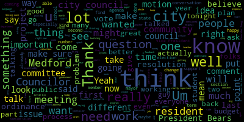

[Tseng]: I'd like to thank the teachers of the Midland, my teachers, for coming here and standing up for yourselves and standing up for your students.
[Tseng]: I think what we have here is an issue of, you know,
[Tseng]: The public is more attracted to one school than the other.
[Tseng]: But we need to find out why.
[Tseng]: And I can give you my perspective on why.
[Tseng]: It's not that McGlynn teachers are worse than Andrews teachers.
[Tseng]: It's definitely not that.
[Tseng]: Because I've talked to students coming from the Andrews and to parents who have students at the McGlynn, at the Andrews, or even in the elementary schools.
[Tseng]: And that's not their concern.
[Tseng]: It's not that the staff at the McGlynn is poorly paired or it's
[Tseng]: that it doesn't work well, but rather that the Andrews just, they look at technology and they look at a component of who's at the school.
[Tseng]: And there's a perception that the McGlynn is a step behind the Andrews when it comes to technology.
[Tseng]: And there's also a perception that the McGlynn is a step behind the Andrews when it comes to wealth.
[Tseng]: how we use that wealth and how that's portrayed in our socioeconomic status.
[Tseng]: And what we really have to do is look at, you know, these are the problems.
[Tseng]: How do we solve these problems?
[Tseng]: Not that, you know, oh, you know, the teachers are the problems or, you know, it's about working together.
[Tseng]: You know, we shouldn't make random decisions when we don't have to.
[Tseng]: If we know that teachers aren't the problem, we shouldn't shuffle them around because it doesn't really work that way.
[Tseng]: We need to identify the problems that we have at hand.
[Tseng]: And that means 60% of McGlynn kids are high need.
[Tseng]: So how do we figure out that balance between the two schools?
[Tseng]: And I'm sorry to say it, but I don't believe it.
[Tseng]: But that 60% of students are high needs.
[Tseng]: And the diversity of school leads some people to prefer the Andrews over the MacLennan.
[Tseng]: And it's a sad reality.
[Tseng]: It's a sad truth.
[Tseng]: And it doesn't mean that it is the truth.
[Tseng]: what people think, and just like Mrs. DiBenedetto said, it's about PR, and we need to make sure that people in our community understand that both schools have great teachers, and that we even out the playing field for both schools from now on.
[Tseng]: Oh, well, I mean, I've seen the videos throughout the school for the no more campaign.
[Tseng]: Yes.
[Tseng]: And I've seen people wear the shirts and yeah, there's a presence.
[Tseng]: And we learned a lot.
[Tseng]: I'd like to thank the teachers of the Midland, my teachers, for coming here and standing up for yourselves and standing up for your students.
[Tseng]: I think what we have here is an issue of, you know,
[Tseng]: the public is more attracted to one school than the other.
[Tseng]: But we need to find out why.
[Tseng]: And I can give you my perspective on why.
[Tseng]: It's not that McGlynn teachers are worse than Andrews teachers.
[Tseng]: It's definitely not that.
[Tseng]: Because I've talked to students coming from the Andrews and to parents who have students at the McGlynn, at the Andrews, or even in the elementary schools.
[Tseng]: And that's not their concern.
[Tseng]: It's not that the staff at the McGlynn is poorly paired or it's
[Tseng]: that it doesn't work well, but rather that the Andrews just, they look at technology, and they look at a component of who's at the school.
[Tseng]: And there's a perception that the McGlynn is a step behind the Andrews when it comes to technology.
[Tseng]: And there's also a perception that the McGlynn is a step behind the Andrews when it comes to wealth, and how we use that wealth, and how that's portrayed in our socioeconomic status.
[Tseng]: And what we really have to do is look at, you know, these are the problems.
[Tseng]: How do we solve these problems?
[Tseng]: Not that, you know, oh, you know, the teachers are the problems or, you know, it's about working together.
[Tseng]: You know, we shouldn't make random decisions when we don't have to.
[Tseng]: If we know that teachers aren't the problem, we shouldn't shuffle them around because it doesn't really work that way.
[Tseng]: We need to identify the problems that we have at hand.
[Tseng]: And that means 60% of McGlynn kids are high need.
[Tseng]: How do we find out, how do we figure out that balance between the two schools?
[Tseng]: And I'm sorry to say it, but I don't believe it, but that 60% of students are high needs, and the diversity of school leads some people to prefer the Andrews over the MacLennan.
[Tseng]: It's a sad reality, it's a sad truth.
[Tseng]: And it doesn't mean that it is the truth.
[Tseng]: It's just what people think.
[Tseng]: And just like Mrs. DiBenedetto said, it's about PR.
[Tseng]: And we need to make sure that people in our community understand that both schools have great teachers and that we even out the playing field for both schools from now on.
[Tseng]: Oh, well, I mean, I've seen the videos throughout the school for the no more campaign.
[Tseng]: Yes.
[Tseng]: And I've seen people wear the shirts and yeah, there's a presence.
[Tseng]: We want our leaders to be proactive and to listen to us.
[Tseng]: and to be truthful to us and not to go about what students perceive as the Medford way, backroom deals and talking behind our backs.
[Tseng]: No.
[Tseng]: I have a follow-up to that question.
[Tseng]: What do you see as the role of student leadership in shaping school policy?
[Tseng]: So, as you know, we live in a diverse community and in a globalizing society.
[Tseng]: Our students come from all over the world, and after they leave high school, they end up in different countries, studying different countries, working in different countries.
[Tseng]: How would you build a global connection between the Medford Public Schools and the world as a whole?
[Tseng]: I have a follow-up to that.
[Tseng]: So you talked about restless seniors, which I know all too well.
[Tseng]: But there are restless students of other grades as well.
[Tseng]: A lot of students who know they want to major in science, they don't get the point of taking a history class or an English class.
[Tseng]: And it's the same with other subjects, with foreign languages or with math.
[Tseng]: how would you propose to give classes more meaning to students?
[Tseng]: So you have a lot of innovative ideas for the Medford Public School District, and you spoke a little about potentially scaring away some stakeholders in our community.
[Tseng]: As you know, contract negotiations are going on this month, and they may not conclude until the new superintendent takes office.
[Tseng]: If you were put in a situation where the contract did not allow you the flexibility that you desire to build this innovative teaching method, this innovative community, how would you work within that contract?
[Tseng]: We talked about the VOC and one of the biggest issues that we've seen with the integration of the VOC in high school is grade alignment.
[Tseng]: So a lot of people who were in the top 10 in the VOC now find themselves in the top 100 at Medford High.
[Tseng]: And a lot of people from the VOC do want to attend four-year institutions.
[Tseng]: They rely on their GPA, their ranking.
[Tseng]: How would you attempt to balance the situation or solve this?
[Tseng]: And the second part to this question is, how would you make sure that VOC students overall do feel like they're part of the Medford High community and not overshadowed by Medford High students?
[Tseng]: Beautiful.
[Tseng]: Justin?
[Tseng]: Did you ask both questions?
[Tseng]: No.
[Tseng]: I've not asked yours yet.
[Tseng]: Mine was the first one or the second one?
[Tseng]: As you may know, the foreign language program at the high school has gone through many changes in the last decade.
[Tseng]: We've gone from a 5 out of 6 day cycle to making it a full core class 6 out of 6 days.
[Tseng]: A lot of this is in response to people saying that the foreign language department isn't treated as equally with different departments and given the same attention, especially in a globalizing world.
[Tseng]: So we focused on the high school, but what do you think we can do as a district at the elementary and middle school levels?
[Tseng]: Taking a step back from foreign language and looking at globalization with a larger lens.
[Tseng]: Many Medford High and Medford Public Schools graduates move on to work in different countries or go to different countries to study, and many come from families of different countries, like you and me.
[Tseng]: So how would you help Medford Public Schools be plugged into this wider international community?
[Tseng]: Hello.
[Tseng]: So as you may know, the Medford High School is in the process of integrating with the Vogue.
[Tseng]: And one of the biggest issues faced with this integration is the aligning GPAs from the Vogue side and the academic side.
[Tseng]: Many Vogue students who were in the top 10 before now find themselves applying to colleges while their rank is in the top 100.
[Tseng]: And to them, it doesn't seem fair because they've worked hard for their grades and suddenly compared to everyone else in the weighting system that we have, they've slipped.
[Tseng]: So that's the academic part of that.
[Tseng]: But there's also a social component to that as well, in that a lot of VOC students feel like they're outnumbered by high school students.
[Tseng]: How would you reconcile these differences, academically and socially?
[Tseng]: Hi, so a lot of social science teachers are pushing for a reinstatement of a civics curriculum in our education.
[Tseng]: What do you think is the role of civic engagement at the high school, the middle school, and the elementary levels?
[Tseng]: What do you see as the role of student leadership and student leadership groups in shaping school policy?
[Tseng]: A lot of focus is given to the core subjects that are tested, English, math, science.
[Tseng]: How would you balance the importance of getting high scores and devoting resources to those subjects and to other subjects that a lot of people don't consider core subjects, such as foreign language and various classes and extracurricular activities like sports and arts and music?
[Tseng]: Yes.
[Tseng]: Yes.
[Tseng]: Yes.
[Tseng]: Yes.
[Tseng]: I just wanted to wish you the best of luck.
[Tseng]: My friends and I have always wanted a bubble tea shop in Medford and it's,
[Tseng]: It's a great honor for us to be able to have one to call our own.
[Tseng]: So thank you so much.
[Tseng]: And good luck.
[Tseng]: Thank you.
[Tseng]: Yes.
[Tseng]: All right, thank you so much.
[Tseng]: First of all, I just wanted to thank you and your department for all of this work that you're doing.
[Tseng]: I think something that a few of us, many of us on this side of the rail have been talking about, a lot of community leaders have been talking about is the importance of bringing government to the people and not just expecting people to show up.
[Tseng]: We all know that there are real equity access barriers when it comes to meetings, even meetings like this,
[Tseng]: any city meeting, any coming to city events, and your department's, I think, philosophical approach to outreach, I think is something that we should be proud that we're doing as a city.
[Tseng]: I know it can be really tough to do that outreach, and so I was wondering what some of the challenges that you've found were.
[Tseng]: Maybe, I know the community liaisons have been doing a great job,
[Tseng]: But I'm wondering what are some of the barriers that you guys have faced and what are some of the ways that you're gonna address that with the Medford Connectors program in terms of outreach and getting to more people?
[Tseng]: You guys have been doing incredible work.
[Tseng]: Um, I really appreciate that answer.
[Tseng]: Um, and, and what you were talking about.
[Tseng]: And I think, um, I think the work you guys are doing, I think, um, lays out a foundation for what other departments in the city can, um, can do, including the city council, maybe in the further future, maybe I think you guys are testing the waters, seeing what works and perhaps in the future, um, our city council and other branches of government, uh, other departments of the government can look towards you guys and see,
[Tseng]: what we can do to be more inclusive to get more of those voices that haven't been included in city government to help us come to our meetings and help us, you know, give us feedback and shape our agendas.
[Tseng]: So that's helpful.
[Tseng]: I think my question was slightly, slightly more about how are we reaching the residents that we haven't reached yet.
[Tseng]: which I know can be a really difficult question to answer.
[Tseng]: And I'm sure you guys are already working on it.
[Tseng]: I was wondering if you guys partner with other city departments to, you know, keep track of who comes in for city services already, or in terms of maybe a city, the work that we do collecting survey data with our city, city census type things, seeing who moves into the city, pays our taxes, perhaps there's a way to,
[Tseng]: even in, I know this can be costly, but putting even a short flyer in our water bills or something like that to try to get more people aware that your department exists, that the work that you guys are doing exists.
[Tseng]: And maybe that will reach more people, but you are the expert here, so.
[Tseng]: That's excellent.
[Tseng]: And I think to what you've been saying,
[Tseng]: as a son of immigrant parents, I've had to translate a lot of things, find out a lot of things about city services.
[Tseng]: It would be super helpful.
[Tseng]: The things that you're describing will be super helpful.
[Tseng]: So, and I think lay out groundwork for, you know, the work that we want to do on youth mental health, on, you know, making our community safer as well.
[Tseng]: So thank you so much.
[Tseng]: Yes.
[Tseng]: Thank you, President Morell.
[Tseng]: I think it's important to thank first the teachers and the school staff and the parents who were there.
[Tseng]: who are helping the students through the ordeal, who themselves had to deal with emotional side of everything.
[Tseng]: It's really important not to forget about that.
[Tseng]: This hurts.
[Tseng]: This hurts emotionally.
[Tseng]: It hurts physically.
[Tseng]: It's important to deal with it.
[Tseng]: And it matters.
[Tseng]: It matters to all of us.
[Tseng]: And look, everyone, everyone,
[Tseng]: in this room, everyone online on Zoom is upset, is frustrated, is saddened.
[Tseng]: And I think we all feel sympathy for the experience that our students have had to deal with and continue to have to deal with at Medford High School.
[Tseng]: I will say I am relieved to hear
[Tseng]: that the student is in stable condition, but that doesn't mean that everything is over.
[Tseng]: I really appreciate the talk from Councilors of all backgrounds about the importance of finding solutions.
[Tseng]: And I think to that effect, I wanna thank President Morell and Vice President Bears for opening up the city council agenda to allow us to put resolutions on the agenda to have this conversation tonight.
[Tseng]: and to allow us to act fast and to allow us to have this conversation tonight, to have parents in the room and on Zoom.
[Tseng]: Look, school violence, and I've said this before, and it's in the news, there's tons of research out there.
[Tseng]: It's an international problem.
[Tseng]: It's a domestic problem.
[Tseng]: It's a Medford problem.
[Tseng]: And that actually means that we have to deal with it.
[Tseng]: And we do have to address it here at home.
[Tseng]: It's not, you know, school violence has been around for a while.
[Tseng]: Councilor Bears has spoken to his experience.
[Tseng]: I went to Medford High School just five years ago.
[Tseng]: I know what it's like there.
[Tseng]: And it is a wonderful, it's a wonderful institution to learn.
[Tseng]: there are, you know, blemishes on it as well.
[Tseng]: And this work, these are all issues that school leaders, teachers, students, everyone has been working together to address over the last few years.
[Tseng]: And it's evident that we need to put even more energy towards it.
[Tseng]: And as I've said before as well, until our schools are safe for everyone, for all, we still have more work to do.
[Tseng]: We need to find sustainable solutions, and that means engaging stakeholders from students to parents to teachers.
[Tseng]: I know people aren't going to like this, but the school committee who have been elected to govern our schools, to oversee our schools, and we need to engage school leaders as well.
[Tseng]: We need to enforce the existing policies on violence and on anti-bullying.
[Tseng]: and we need accountability to make sure that we're enforcing these policies.
[Tseng]: We need to think through the actions that we can take to protect all kids carefully and quickly, I will add, but we need to make sure that they're equitable and reasonable and that they really truly do protect every kid in the classroom and in the hallways.
[Tseng]: I think it's also evidence that there's a major communications problem
[Tseng]: that we as a city council have been bringing up in the city, the communications problem in the city when it comes to not just in an incident like this, but just in general, getting the message out to residents.
[Tseng]: But when it comes to this incident as well,
[Tseng]: We need to know, and I think President Morell and I have written a resolution to this effect.
[Tseng]: We need to know about the incident.
[Tseng]: We need to know the details.
[Tseng]: We need to know authority and rules and who has authority over what.
[Tseng]: And we need to prevent misinformation from being spread.
[Tseng]: And school community members at yesterday's meeting have also acknowledged that as a city, we need to do better on communications and on engaging families as well.
[Tseng]: Councilor Bears is right, the funding problem is real.
[Tseng]: It's one of the reasons why I decided to run for office in the first place, watching the budget conversation years ago, when we cut, we made major cuts to guidance and to mental health and counseling at our schools.
[Tseng]: And now we're seeing the effects of it.
[Tseng]: Um, we need to, we need to be serious about that.
[Tseng]: We need to be serious that about funding and to realize that there is a funding issue.
[Tseng]: Um, and that, that, that effect that the problem is trickling down to our hallways into our classrooms and, um,
[Tseng]: and that particularly after COVID and after remote learning, there has been an epidemic of poor mental health in the city and in this country.
[Tseng]: I asked the city and the city council joined me in passing a resolution months ago
[Tseng]: asking the city to do a general survey on youth mental health and to look at the effects of that and to see what we can do to invest more in it and to prevent things like this from happening.
[Tseng]: And it is upsetting as a Councilor to see that we haven't done enough on it.
[Tseng]: This council has been responsible in doing that and we have been proactive in addressing youth mental health.
[Tseng]: I want us to do as much as possible, as quickly as possible.
[Tseng]: I think that's something that everyone behind the reel would agree on.
[Tseng]: But I also do want to make sure that we are creating lasting solutions within our purview.
[Tseng]: I know not everyone will agree with my approach on this issue and my ideas, but I am open-minded to hear more ideas, to hear feedback, both positive and negative.
[Tseng]: And I understand, as Councilor Collins has mentioned, that many members of our community weren't able to make it to this meeting for scheduling reasons, for family reasons, and many members of our community aren't joining us today because they're afraid to talk and talking in public is not for everyone.
[Tseng]: And to those people, my inbox and my voicemail box and my text message inbox is also open to everyone.
[Tseng]: I think it's really important to emphasize that regardless of the tone of this conversation, regardless of the points that people have brought up, regardless of the feedback that we're going to hear.
[Tseng]: And I think people in our community, there are many, many different ways of thinking about this issue and about the solutions for this issue.
[Tseng]: I think that's been evident to me in the conversations that I've had.
[Tseng]: with neighbors, with residents, with young folks in the last 24 hours.
[Tseng]: I think it's important to acknowledge the differences, but to also acknowledge the points of unity that I think we see on this agenda tonight, because those points of unity, those are the seeds, I think, for more lasting, more substantive policy changes in the future that will better, I think, create a school environment for our children.
[Tseng]: Thank you.
[Tseng]: Um, I also wanted to, uh, thank, um, the parents for coming up and telling you the stories.
[Tseng]: And, um, I hadn't heard the story before, and I think president Morello, you put it well that even though.
[Tseng]: even though I was there five years ago, I think things have, you know, things are slightly different now and smartphones and COVID and all of that changes everything as well.
[Tseng]: So it's actually, it's really helpful to hear that perspective.
[Tseng]: all of them.
[Tseng]: Yes.
[Tseng]: Yes.
[Tseng]: Yes.
[Tseng]: Yes.
[Tseng]: Yes.
[Tseng]: Yes.
[Tseng]: I wanted to make sure to speak because this is an issue I'm particularly passionate about.
[Tseng]: I know I wrote a resolution that was supported by my fellow Councilors here asking our city about exploring ways to clarify the plans to train to develop that pipeline and to find new people to join our city.
[Tseng]: But I think the most important point here is what Paul talked about with the lack of resources.
[Tseng]: It's not just school districts but
[Tseng]: Governments all across the country are seeing the importance of having diverse lived experiences and how that ties into good decent public services and how we provide that to our residents and Medford we're not again like Paul said we're not competing with our neighbors.
[Tseng]: We're competing with everyone else and I have a lot of friends from diverse backgrounds who you know have
[Tseng]: have taken well-paying jobs that pay double what they would in the public sector.
[Tseng]: And that's a problem that we need to fix at all levels, from federal, state, and local levels.
[Tseng]: But that brings us back to the need to have an open and honest and transparent discussion about our budget as well.
[Tseng]: But we can also, in the meantime, talk about what we can do to address the little problems that come up and to capture some of the benefits of that lived experience with the resources that we have right now.
[Tseng]: And so I've worked really closely with the diversity director and with the mayor to look at ways that we can expand language access in City Hall and in our city services.
[Tseng]: If we can get more translators in, if we can
[Tseng]: Yes, the diversity director especially has been working really hard to do more in sign language, which is super important.
[Tseng]: And that doesn't make up for the lack of diversity.
[Tseng]: It doesn't make up for the lack of lived experience.
[Tseng]: But it's something that we can do to capture the benefits that we would from lived experience.
[Tseng]: Present.
[Tseng]: Thank you.
[Tseng]: Last week I was in City Hall for meetings and I bumped into Rick on his runs to help an elderly tenant stay in her home and help her find a place to live.
[Tseng]: And I think that really exemplifies, even though you're not on this side of the rail, your service to the city is never ceasing.
[Tseng]: And so I'm deeply, deeply grateful for your
[Tseng]: for your service to Medford, for your commitment to our city and all of our residents, and for your mentorship during my first term on the city council when we were both sitting over there.
[Tseng]: We don't always agree on issues, but I honestly think that folks need to hear us talk about things because I think there's so much agreement that we have, so many values that we share, a vision for Medford that I think
[Tseng]: folks need to know that we share.
[Tseng]: And I'm so happy that you're staying involved in our city.
[Tseng]: And again, a lot of respect, a lot of gratitude to the work that you've done for us.
[Tseng]: Thank you, Vice President Collins, for introducing this resolution.
[Tseng]: We all know that the last few years, it's beyond this last year.
[Tseng]: Ever since 2016, anti-Semitism has been on the rise in our country due to extremist voices enabling
[Tseng]: and normalizing rhetoric.
[Tseng]: Now, I really want to thank Councilor Collins and your efforts to root out anti-Semitism in our community.
[Tseng]: I remember one of the first resolutions you introduced as a city councilor was to get the mayor's office to properly address an anti-Semitic incident and to set up institutions to deal with that.
[Tseng]: We've made some progress.
[Tseng]: We haven't made all the progress we've wanted, but I think it shows, you know, your leadership on this issue that you've brought this to light.
[Tseng]: Similarly, you were the first Councilor on the scene when a anti-Semitic piece of graffiti was painted on one of our, you know, on the streets of Medford, very unfortunately.
[Tseng]: And I want to commend you for your leadership, again,
[Tseng]: for bringing that to light and for focusing on the injustices in our community.
[Tseng]: Thank you, President Bears.
[Tseng]: This month is Asian American and Pacific Islander Heritage Month, AAPI Heritage Month for short.
[Tseng]: This is one of the fastest growing communities in our country, let alone in our city.
[Tseng]: I think we see it all around us, new restaurants and bubble tea shops and everything coming in.
[Tseng]: Asian Americans are really
[Tseng]: picking up a big part of our local economy.
[Tseng]: They're contributing in our school system as we've seen in previous meetings.
[Tseng]: And this is a month to celebrate that history, that heritage here in Medford and in our country.
[Tseng]: We've taken a lot of strides towards equity in our city in the last few years.
[Tseng]: I know I have a resolution later on in the agenda about
[Tseng]: for asking for updates on efforts the city is taking to better include Asian Americans in the policymaking process.
[Tseng]: But this resolution is just celebratory.
[Tseng]: Yeah.
[Tseng]: I want to thank Councilor Scarpelli for putting this on the agenda.
[Tseng]: We owe our peaceful existence here to the sacrifices that have come decades
[Tseng]: before us and even today, to our military.
[Tseng]: I'm deeply grateful for this resolution because I think it highlights our city council's dedication to the men and women who served our country.
[Tseng]: And I think it highlights the work that we've been doing as a city council to tackle issues for veterans, to better serve them, and to tackle real social issues that veterans face,
[Tseng]: you know, in terms of employment and housing in our city.
[Tseng]: You know, these are issues that this council takes very seriously.
[Tseng]: I know Councilor Leming has been leading a lot of that work, so I want to thank him as well.
[Tseng]: Yeah, I'll give a very short presentation or description.
[Tseng]: So at our first meeting this term, I noted that one big thing that we would be working on big picture wise on this council would be transparency and reform.
[Tseng]: And, you know,
[Tseng]: meeting a few weeks ago, some residents suggested that we create a resident's guide to City Council to demystify some of the processes and to make it really clear what happens when a paper is introduced onto the agenda.
[Tseng]: What do these committees mean?
[Tseng]: How often do they meet?
[Tseng]: A real simple user's guide.
[Tseng]: And so in the spirit of
[Tseng]: transparency, reform, and inclusion.
[Tseng]: I think that this would move our city council forward and make our work much more accessible.
[Tseng]: Yes.
[Tseng]: Yes.
[Tseng]: Yes.
[Tseng]: Thank you.
[Tseng]: Months ago, I was talking to City staff, and they informed me of efforts to find grant funding to create an Asian American community liaison position.
[Tseng]: The community liaison program is a point of pride for our city.
[Tseng]: It's something that other municipalities look at Medford as inspiration, and they look to us for our leadership on this issue on engaging communities that have been traditionally cut out and left out of the
[Tseng]: political process.
[Tseng]: You know, a lot of this stuff is just about improving city communications with folks who might not know how to interact with city institutions.
[Tseng]: The update that I got back then was that we've put in paperwork, we've put in applications for grant funding.
[Tseng]: We haven't heard, at least I haven't heard as a Councilor much since, but given that it is Asian American Heritage Month, I thought that this would be a great opportunity to bring this back to the spotlight.
[Tseng]: Asian Americans do make up 13% of our city's population, it makes up the largest minority group in the city, and we need to find a way to better involve everyone in the decision-making process.
[Tseng]: Again, we've been making strides.
[Tseng]: We're far past the days of stop Asian hate and the cases being reported on elder violence, but there's still a lot of work to be done to engage our BIPOC communities here.
[Tseng]: It's my understanding that under Mass general law, the first part is fine.
[Tseng]: So we can talk top line numbers.
[Tseng]: We can talk line item numbers for city departments.
[Tseng]: Um, except that it runs afowl of mass general, uh, chapter 71 section 34 to talk about line items first in the school's budget before formal, um.
[Tseng]: before a formal budget is presented to us because we are impeding on the authority of the school committee to determine expenditures within the total appropriation.
[Tseng]: And that's quote from the law.
[Tseng]: No.
[Tseng]: Motion to suspend the rules and take 24-055 out of order.
[Tseng]: I think it's really important for us to recognize what question exactly is on our desk today.
[Tseng]: When we last looked at the stabilization fund idea, as Councilor Collins referred to, it was both to create a fund and to put money in it.
[Tseng]: Today's item is different.
[Tseng]: Today's item is just to create the fund and not to put money in it, which is traditionally where the sticking point with the city council has been.
[Tseng]: Now, when it comes to creating the fund, I am in support of it because of the rainy day aspect.
[Tseng]: The way that our finances work right now, if, God forbid, an emergency happened in the city where a roof fell in on a school or a major repair was needed to a public facility, we would not be able to access the funds needed to fix those problems until free cash is certified by the state, which can often take many, many, many months.
[Tseng]: oftentimes closer to a year, and creating the stabilization fund gives us the opportunity to have that money ready to fix emergencies when needed.
[Tseng]: So I support this idea.
[Tseng]: I will second Councilor Collins' motion.
[Tseng]: I move to move this, uh, to extend this hearing until continue until a date certain of April 2nd.
[Tseng]: Thank you.
[Tseng]: On the former council, I've heard this project before.
[Tseng]: I'm particularly excited about it.
[Tseng]: I think it'll bring a lot of life, business, housing to an area where we really need it.
[Tseng]: I just have two small notes about it after talking to some city staff who've been working with you all about it.
[Tseng]: There's a duplicate in the document and the small condition that I'd like to put in.
[Tseng]: So I'd like, Mr. President, I'd like to
[Tseng]: motion to approve the special permit and site plan as revised with the conditions recommended by this community development board, and add in two amendments, one to strike point 12, which is a duplicate of point nine in the plan.
[Tseng]: Either nine or 12.
[Tseng]: Condition 12, okay.
[Tseng]: And then the second condition is to add this following wording, which I can get to the city clerk if that works.
[Tseng]: residents of the new building will be restricted from obtaining city of Medford residential street parking permits ensure that on street parking capacity is not impacted by the development which is intended to attract residents with lower rates of car ownership, as it is approximately one block from Paul square MBTA Green Line station.
[Tseng]: Councilor Tseng.
[Tseng]: What's the motion on the floor?
[Tseng]: The motion on the floor is to approve the special permit and site plan as revised with the conditions recommended by the Community Development Board and to strike condition 12.
[Tseng]: from the conditions as it's a duplicate of condition nine, and to add in the wording, which I've already emailed to the city clerk, residents of the new building will be restricted from obtaining City of Medford residential street parking permits to ensure that on-street parking capacity is, that on-street parking capacity is not impacted by the development, which is intended to attract residents with lower rates of car ownership as it is approximately one block from Ball Street and BTA Green Line Station.
[Tseng]: Any questions for members of the council Councilor Tseng not a question but being very quick for my other for the new Councilors here the history of this is the MBTA is this project where they want to improve pedestrian infrastructure for bus stops.
[Tseng]: At the same time, Medford has a higher concentration of bus stops and other cities, a lot of them go pretty much unused.
[Tseng]: We don't have any powers of city council to stop bus stops being taken away but the last council leveraged a lot of that.
[Tseng]: are the approvals that we need to do for the infrastructure projects to keep bus stops to make improvements to the bus stops that they were talking about.
[Tseng]: And so I would move approval.
[Tseng]: Councilor Tseng, Thank you, President Bears.
[Tseng]: Um, this is especially for the folks watching at home but I wanted to explain a little bit about where I'm where I stand on this issue because I think all voters deserve to know what I'm thinking right now.
[Tseng]: I have to be very clear about what's before us tonight.
[Tseng]: We're merely debating whether to send this idea to a subcommittee for further study, and we do this with essentially any issue, whether we support it or oppose it as a council.
[Tseng]: This is a first step in a multi-month process that, as my colleagues have alluded to, would have to be approved by the mayor, the state house, and the governor.
[Tseng]: And even during that process, we will have lots of public meetings.
[Tseng]: this committee process is, in my eyes, really crucial to what gets voted on at the end of the day and where I will stand on it at the end of the day.
[Tseng]: I think that we need to discuss exemptions for owner-occupants, seniors, family members, and talk about a threshold with which, under that amount, we wouldn't be setting that tax.
[Tseng]: When we talk about this real estate transfer fee, I think it's really important to note that we can discuss it as a 2% tax, but that wouldn't be the most honest way of discussing it, especially if there's a threshold.
[Tseng]: If there's a threshold, for example, set at $1 million, if the property is $1.2 million, the tax is actually effectively only 0.17%.
[Tseng]: Um, the it's also I think important to note that, yes, we do have CPA funding but at our last public open CPA meeting, the staff has been very clear that we need much more money to set up a successful affordable housing trust that that funding is not nearly enough.
[Tseng]: to fund affordable housing, and that they broke down how they're spending that money, and there has been very widespread support of how that money is being spent, including a 7-0 vote on City Council.
[Tseng]: With regards to going back to this idea of the committee process, I spent the last few days doing a lot of deep diving into long, long economic research papers and policy reports about transfer fee and economic research from
[Tseng]: scholars at schools like Columbia, U Michigan, from national government economic research bodies, Institute of Public Studies, the Boston Globe, have all emphasized that the effect on this tax on economic growth and housing affordability hinges on this design process and committee, where we can design the fee to largely affect large developers building luxury housing,
[Tseng]: and we can actually use levers to relieve other economic burdens on home ownership.
[Tseng]: Now, rather regrettably, I think some folks have misunderstood or mischaracterized this policy issue by making it sound like we're doing something we're not doing.
[Tseng]: That's not how we operate.
[Tseng]: We have rules that we need to follow, and we follow procedure on big issues like this because we know that oftentimes they can be controversial.
[Tseng]: in the city.
[Tseng]: As a young and lifelong Medford resident as someone who wants to stay in the city, but is worried of being priced out.
[Tseng]: I understand that perspective.
[Tseng]: I understand that we are in a housing crisis.
[Tseng]: I also understand that the economic growth of our city in our state is lacking because people can't afford to stay here.
[Tseng]: Think Matt referred to the letter that we received from many residents, longtime residents of Medford, who are now being
[Tseng]: who use our services and who contribute to our city as well, who volunteer.
[Tseng]: But, you know, as a son of long-time Etrovert homeowners, I also see that side of the discourse intimately as well.
[Tseng]: And ultimately, you know, I would probably, my family and I contribute to my parents' fund as well, which they use to pay taxes and property taxes.
[Tseng]: You know, I,
[Tseng]: This might not be the best policy for me as a person, but ultimately my vote hinges on what is best in a well-rounded sense for a city.
[Tseng]: Now, our job as elected officials is to balance interests, to balance not just one constituency's needs or ideas or propositions, but to marry them with all others.
[Tseng]: That's why my vote will ultimately hinge on the final product that we produce in committee, which will only come after a months-long process, a public process that takes into account the value perspectives from people in our city, be it angry, happy, supportive, opposing.
[Tseng]: And I invite everyone to stay engaged with this process over the next few months, but I do ask for that discourse to be respectful,
[Tseng]: to be understanding, and we might disagree, but we cannot be disagreeable.
[Tseng]: Any further comments from members of the council Councilor say, I just wanted to thank the last speaker for for his tone, and it, you know, I support President Bears is and Councilor Lazzaros, what what what they said about it I don't think this is the one tool I don't think it's a be all, and all I think a lot of it depends on the design of the program.
[Tseng]: Looking at Governor Healey's plan, 80% of revenue generated by this would actually be from commercial.
[Tseng]: So it would be from the flippers and not from the residential as well.
[Tseng]: And I think that's really important to mention.
[Tseng]: I think equally important to mention is that zoning is a top priority of both this council, but also me as a councilor.
[Tseng]: And we're, I believe, holding a meeting on it tomorrow at 6 p.m.
[Tseng]: Yes, we are.
[Tseng]: So we're very much getting on it.
[Tseng]: Thank you, President Bears.
[Tseng]: And thank you everyone for bearing with
[Tseng]: Sorry, bad, bad joke.
[Tseng]: Awful joke too late for it to be bearing with us as we've met tonight.
[Tseng]: Um, you know I wanted to piggyback off of what Councilor Leming was saying.
[Tseng]: Unfortunately, state law does constrain the amount of discourse that we can have in public before a meeting when it comes to the fleshing out, or I mean when it comes to talking about a proposal like this but also fleshing out the details, as I think we are very conscious about opening one.
[Tseng]: we want to make sure that we're not breaking it.
[Tseng]: And that's hindered our ability to talk freely about what we as individual Councilors would like to see in a home rule petition like this.
[Tseng]: As has been noted by a member of the public, the 18 home rule petitions that have passed are all different.
[Tseng]: They're all customized to their municipality.
[Tseng]: And I want us to have a chance to do that for Medford.
[Tseng]: Now, whether,
[Tseng]: we'll vote for it or not, whether we'll pass it is truly contingent on what the language is.
[Tseng]: And I think, you know, my fellow Councilors know that's my stance.
[Tseng]: When I think about my obligations as a city councilor, it truly is to represent everyone.
[Tseng]: And there are a lot of people who oppose this, I acknowledge that.
[Tseng]: There are people who agree with it too.
[Tseng]: I mean, honestly, I think I got just as many correspondences through email in favor as opposed, if not that.
[Tseng]: Now, I think in this moment, I think back to,
[Tseng]: The 7500 voters who voted for me the doors are not saying that I promised them that we would spend time and committee studying every revenue option that we had.
[Tseng]: and the text on my website that essentially promises that, and more specifically says that we should study certain real estate transfer fees.
[Tseng]: And so I think it would be breaking my platform and my promise to the voters who voted for me to not vote to continue this night.
[Tseng]: But that being said, I think there's a lot more time in the future to flesh out the details.
[Tseng]: I think everyone should come to those meetings and participate as well.
[Tseng]: And on the communication aspect of things, I know things aren't ideal, but at 7pm tomorrow night in the Resident Services Committee, I'm going to continue proposing a whole litany of reforms when it comes to communications.
[Tseng]: I've been working with the Communications Director of the City to develop channels for us to reach out to residents as well, alternative channels that don't just build off of lists that we have, but expand those lists
[Tseng]: We've talked I know a few of us have talked to Pam Kelly at the senior center, talking about how we can reach out to seniors and put updates about what we're talking about in city council on into the senior center newsletter as well.
[Tseng]: On the budget item, we know that we have to be more transparent and that's why on the agenda for tonight I don't know if we'll get to it but on an agenda for tonight.
[Tseng]: There is a brand new get to it.
[Tseng]: I'd love to get to it.
[Tseng]: We have a brand new budget ordinance that lays out more clearly what developing our city budget will look like it will have more opportunities for people to contribute feedback, and for people to see more information.
[Tseng]: Present
[Tseng]: Thank you.
[Tseng]: You talked a bit about accreditation.
[Tseng]: I think that's a really exciting prospect.
[Tseng]: Is that something that is done mostly more through policies, or does the budget have a big impact on that?
[Tseng]: And does this proposed budget move you towards accreditation?
[Tseng]: Yeah, that's super helpful for us as Councilors to learn about and to hear.
[Tseng]: It's mostly a lot of paperwork.
[Tseng]: I trust you.
[Tseng]: I was also curious about, you know, are there any positions that are on grants or funds that aren't being carried over to this budget or are being carried over but require a certain amount of spending?
[Tseng]: to be kept up?
[Tseng]: And for those grants that you brought up, does the city also have to pay in a certain amount for,
[Tseng]: Thank you so much for your answers.
[Tseng]: Thank you for your service, both of you.
[Tseng]: And we really appreciate your work.
[Tseng]: Thank you.
[Tseng]: Thanks, Councilor Callahan.
[Tseng]: Present.
[Tseng]: Yes.
[Tseng]: Thank you, Councilor Bears, President Bears, for putting this on the agenda.
[Tseng]: If you look at the year of graduation, 2024, if you do the math and subtract four, you'll realize that these folks entered high school during the pandemic, during the early days of the pandemic.
[Tseng]: I think it's a testament to their hard work and to the hard work of their teachers as well, that they've made it through and are going really spectacular places.
[Tseng]: If you look at the futures of our students, a lot of them are taking on great technical work.
[Tseng]: They're great students who are going to top universities in this country.
[Tseng]: I think it really highlights and showcases what Medford can be when we pull together.
[Tseng]: despite the difficult circumstances, despite unideal circumstances, we can still really make an impact on this world.
[Tseng]: So I'm really proud of these students.
[Tseng]: I know Councilor Bears and I both had the opportunity to read a bunch of scholarship essays for a scholarship, and it was so hard, harder than, you know, than ever to choose scholarship winners because
[Tseng]: the work that these students are doing in class and outside of class, their leadership in extracurricular activities, community service, giving back to Medford is really just remarkable.
[Tseng]: So thank you for putting this on.
[Tseng]: Yes.
[Tseng]: Thank you.
[Tseng]: As everyone I think in this room knows, this has not been an easy budget season, not an easy budget year.
[Tseng]: We knew about this for many, many years now.
[Tseng]: I'll be frank with you, this budget is imperfect.
[Tseng]: As I think, as you acknowledge in your statements, and before we got your final proposal, before we got the additional context, which Vice President Collins reminded us about, I was ready to vote no on it if I was uncomfortable with it.
[Tseng]: The additional papers that you've sent that have been put on the agenda, I think provide the context that I need to feel more comfortable voting for this budget.
[Tseng]: It's not enough, like you said.
[Tseng]: We need to do better by our schools.
[Tseng]: I ran on a platform that was mostly around increasing school funding.
[Tseng]: It's one of the two core reasons why I got into local politics in the first place.
[Tseng]: As a student, I really benefited from a lot of the programs that we have been talking about for the last few months that have been at risk of being cut.
[Tseng]: I'm happy that the ARPA supplement in this budget helps us keep a lot of those programs, or at least gives us the option to keep a lot of those programs.
[Tseng]: And I think maybe even more importantly, the override questions chart a long-term stable path towards financial health for our school system.
[Tseng]: I think that's really important to mention.
[Tseng]: I think you and I, we've had a lot of conversations about using free cash, one-time funds.
[Tseng]: Sometimes we've agreed, sometimes we haven't.
[Tseng]: And to explain to the residents, a lot of our conversations go along the lines of, I'm trying to push you to spend more in free cash, and you're pushing back against it.
[Tseng]: And I think you do actually have a reason.
[Tseng]: I think it's important to tell the public that.
[Tseng]: When we use free cash, that's a one-time fund for recurring positions.
[Tseng]: And we need to find a way to wean off of those one-time funds, particularly in order to keep our bond rating high.
[Tseng]: We know that we are on a path to build a new high school.
[Tseng]: We have a lot of big projects coming up and we need better bond ratings to save money for our city in the long term for those projects.
[Tseng]: And so it's reasonable to me, and it's not fun, but it's reasonable to me to use the ARPA supplement that you proposed and to pair it with the override questions.
[Tseng]: I think oftentimes reasonable governance, rational governance, and responsible governance isn't fun.
[Tseng]: It's not sexy.
[Tseng]: It's oftentimes really, you know, forces us to make really difficult decisions.
[Tseng]: I think in those circumstances, it's really important to return the right of
[Tseng]: those decisions to the voters.
[Tseng]: I think that gets back to the override question.
[Tseng]: I think we have to remember that the question that we're facing as a council today is whether we present these questions to the voters in November.
[Tseng]: We're not voting on the increase, right?
[Tseng]: We're sending it to the voters.
[Tseng]: And I've always told the residents whose doors I've knocked on, whose phones I've called, and I actually got this the first day it was canvassing about four years ago in Wellington.
[Tseng]: What would you do about a prop two and a half override?
[Tseng]: And I said back then, agree or disagree with it, the most just decision is the democratic decision.
[Tseng]: It's to leave it to the voters.
[Tseng]: I have my feelings on it.
[Tseng]: I'm sure you do.
[Tseng]: But it's the responsibility of the electorate to make that decision ultimately.
[Tseng]: As you acknowledged, it's a difficult choice for a lot of folks to make.
[Tseng]: But I think governance is about making difficult choices.
[Tseng]: It's about making choices that
[Tseng]: cause debate and debate is a part of democracy.
[Tseng]: You know, we can't avoid it and we shouldn't avoid it because avoiding it is what got us here in the first place.
[Tseng]: The health of our city financially is not due to one budget.
[Tseng]: It's not due to any one budget or any one council, any one mayor.
[Tseng]: It's due to a general approach that we've taken as a city for decades.
[Tseng]: We found ourselves in a position that's difficult to, you know,
[Tseng]: focus on new growth and have that plug in all the holes that we need.
[Tseng]: And that is what our council is doing.
[Tseng]: Earlier tonight, we passed our first step in our zoning recodification phase.
[Tseng]: And that's focused, like you said, on the new growth, on bringing in a larger tax base for our city so that we won't have to be forced to make decisions like this.
[Tseng]: I've also always told residents that the override is the last option that we have to resort to.
[Tseng]: But the facts of the economic reality of the situation is that we've been cutting budgets to the bone and then some.
[Tseng]: And I think this year's budget conversations really exemplify that.
[Tseng]: Our skeleton budget's been cut so much that it can't really stand up on its own.
[Tseng]: I think that's why we need to make these difficult decisions and to pose these questions to the voters, to have them choose.
[Tseng]: I, you also mentioned, I think really importantly, this idea that our residents are demanding more, and I think they're right to demand more.
[Tseng]: Every conversation I have on the doors, you know, we're talking about problems our city is facing, and it's heartbreaking to go budget season after budget season, door after door, to tell them we don't have the money for that, we're working on a plan, but it'll take years for that new growth money to come in.
[Tseng]: And, you know, we have to be realistic about the timeline of new growth.
[Tseng]: It takes more than one day for a building to be built.
[Tseng]: And we need this money to plug the hole now.
[Tseng]: You've also mentioned a lot of the growth that is happening in Medford.
[Tseng]: I'll push back a little.
[Tseng]: I think we can be doing more as a city.
[Tseng]: But the fact of the matter, according to the Boston Foundation, we have, as a percentage of prior permits, Medford is by far the leader in the Boston area for permitting new housing.
[Tseng]: That is something to keep in mind.
[Tseng]: We are working on it.
[Tseng]: We're not where we need to be, but we are working on it.
[Tseng]: I think, you know, ultimately every budget conversation revolves around the question of fiscal responsibility.
[Tseng]: It's not fiscally responsible when we're cutting budgets so much that we have city departments that aren't operating at the level that they need to be operating at.
[Tseng]: It's not fiscal responsibility when parents have to decide whether to send their kids to private school and to spend thousands on tuition because they can't get the specialists, the programs, the teachers that they need for their kids to succeed in our public school system.
[Tseng]: It's not fiscally responsible when our firefighters are operating out of really the dilapidated fire headquarters
[Tseng]: in Medford Square.
[Tseng]: It's not fiscally responsible when residents have to spend hundreds of dollars every year, year after year, because our potholes are so bad that they feel like a roller coaster.
[Tseng]: And the whole budget process in the last few years, this year has been calmer because of the collaboration, but the whole budget process oftentimes feels like a rollercoaster ride.
[Tseng]: I think that these override questions do stabilize our city a bit.
[Tseng]: And they give us a chance, a fighting chance to not only succeed, but to thrive as a city.
[Tseng]: So to all the residents who are tuning in tonight, you may have the override questions, the choice is yours.
[Tseng]: But I ask you to consider one thing.
[Tseng]: I ask you to vote for someone you don't know.
[Tseng]: Vote for the kid who needs the literacy coaches.
[Tseng]: Vote for the drivers who need
[Tseng]: better roads.
[Tseng]: Vote for the parents that need to talk to guidance staff, the school nurses, the arts, the families that need the arts programs to have their kids thrive.
[Tseng]: Vote for a future where our city
[Tseng]: shares and saves costs where we share our burdens and save money in the long run.
[Tseng]: And where our finances are more stable and where I can go to you, our residents and say, yes, we can work on that project.
[Tseng]: Let me get, let me get that done for you.
[Tseng]: So I yield my time.
[Tseng]: This is a very, you know, happy occasion for the Caribbean American members of our community.
[Tseng]: There's not much I'm going to say that isn't repeating what Vice President Collins has already said, but we have a very vibrant Haitian community here, very vibrant Puerto Rican American community here, in addition to a lot of other Caribbean nations whose immigrants have come to America and called Medford home.
[Tseng]: This is in the spirit of making everyone feel and feel accepted as a part of our community.
[Tseng]: I'm very excited to celebrate this month with all of our neighbors.
[Tseng]: Let's call the roll.
[Tseng]: President Bears.
[Tseng]: Present.
[Tseng]: Councilor Callahan.
[Tseng]: Present.
[Tseng]: Councilwoman.
[Tseng]: Present.
[Tseng]: Councilor Scarpelli.
[Tseng]: Councilor Scarpelli is absent.
[Tseng]: Vice President Collins.
[Tseng]: Thank you.
[Tseng]: I think my recommendations are similar to Councilor Callahan's.
[Tseng]: Housing is my first priority.
[Tseng]: On the climate front, I think it makes sense given where our carbon emissions do come from to attack the buildings and energy.
[Tseng]: So top two for me.
[Tseng]: And then going after that, the walkability aspect of things, the accessible 12 and 18 hour communities is up there, although I think multi-modal networks does tackle that as well.
[Tseng]: I would put the mobility one as my fourth.
[Tseng]: if I may, I think that makes a lot of sense.
[Tseng]: And I actually think that point actually includes a lot of what Councilor Callahan and I were thinking about buildings and energy as well.
[Tseng]: So, I mean, if it matters, you can update and replace the buildings energy thing in my lists with the 2022 climate action adaptation plan.
[Tseng]: Councilor Tseng.
[Tseng]: Thank you.
[Tseng]: Mr. Lincoln's efforts, I think, have really put the Brooks Estate on the map in Medford.
[Tseng]: His work, people don't see it, but behind the scenes, he's spending so much time going to events, informing people about MBEL, about the Brooks Estate, giving tours to Councilors, giving tours to the public.
[Tseng]: His work, I think, will be dearly missed by, and the next person will have huge shoes to pull.
[Tseng]: Thank you, Councilor Scarpelli.
[Tseng]: Thank you.
[Tseng]: Councilor Tseng.
[Tseng]: Thank you.
[Tseng]: I really can't beat the city clerk's words, but
[Tseng]: Sylvia, I think you're the person I think of when I think of the clerk's office.
[Tseng]: You've been there since day dot.
[Tseng]: And when I walk in and I see your smile and I see you at your desk, it really lifts my mood in my day, no matter how a meeting in City Hall has gone that day.
[Tseng]: go on, you know, family trips, I always make sure to bring something small back for the clerk's office.
[Tseng]: And I always think that would still be appreciated.
[Tseng]: You truly are the bedrock of the clerk's office.
[Tseng]: I've heard it said that the clerk's office is like the front desk.
[Tseng]: for City Hall.
[Tseng]: So many people interact with the clerk's office.
[Tseng]: So many people come to you and ask questions about where to go in City Hall, where to find services.
[Tseng]: And you're always there with a smiling face day after day, helping our residents.
[Tseng]: And I think that service, that long career of service to our residents should really be highly esteemed and really highly celebrated.
[Tseng]: Yes.
[Tseng]: Thank you.
[Tseng]: Councilor Tseng.
[Tseng]: Thank you.
[Tseng]: I think Councilor Collins really got at it by, you know,
[Tseng]: talking about how bittersweet it is to both celebrate the retirements of two lovely individuals, but also, you know, how much, you know, we'll miss after.
[Tseng]: Janice is, you know, one of those people who really has helped keep the clerk's office running.
[Tseng]: She's really, you know, as Councilor Scarpellioli said in the last statement, the clerk's office has really been,
[Tseng]: the engines have been in gear through thick and thin.
[Tseng]: And Janice is a big reason why we've been able to keep moving forward as a city.
[Tseng]: So I'm so deeply grateful to Janice and to her service for all of our residents.
[Tseng]: Truly, she does so much.
[Tseng]: Our clerks team is so remarkable and I'm gonna be very sad to miss both Janice and Sylvia.
[Tseng]: Yes.
[Tseng]: Thank you, President Bears.
[Tseng]: Mrs. Lasky was my fourth grade teacher.
[Tseng]: She is such a legendary teacher that even before I made it to fourth grade, she was the cool teacher that everyone wanted to be in her class.
[Tseng]: She did so many creative activities with students.
[Tseng]: I remember
[Tseng]: she used to run classroom elections, and everyone got really excited and involved.
[Tseng]: And even if you didn't get a spot, I think you felt a buy-in into the classroom.
[Tseng]: You felt like you were part of a group of people working together and building a community.
[Tseng]: That's something that she did so, so well.
[Tseng]: I think I remember
[Tseng]: It's so funny.
[Tseng]: I remember after a parent-teacher meeting that I wasn't at, she gave my parents really outside-of-the-box tips for how to get me out of my shell and how to get me more comfortable just making friends and speaking out for myself.
[Tseng]: And those tips, I think, have carried through with me through the years.
[Tseng]: And I hope I've done you well.
[Tseng]: Another, I think, amazing moment was when Mrs. Lasky brought in her husband, Fred, to teach us about the MWRA and to teach us so much about how the water system works here in Medford and why water conservation is important.
[Tseng]: And it's small memories like that that I think really lead to the happiness of a childhood.
[Tseng]: It's all those nostalgic memories that we look
[Tseng]: At least I'm looking back on a lot recently with all these retirements.
[Tseng]: Mrs. Lasky, thank you for your service.
[Tseng]: Thank you for your 25 years of service to the Medford Public Schools and for helping them since 2001.
[Tseng]: You mean so, so much, not just to me, but to so many members of our community.
[Tseng]: I really want to both celebrate
[Tseng]: this moment, and to say that I will be sad that when I go back to the McGlynn, I won't see you there.
[Tseng]: But I know I will see you around Medford, and I look forward to seeing you around a lot more often now.
[Tseng]: I just wanted to bolster, you know, you had mentioned that I think it's really important to say that we shouldn't mistake caution for support.
[Tseng]: You know, I think a number of us on the city council have been really cautious with what we've said in the last two weeks because of what our legal counsel and because what our policy experts have advised us to be careful to say in a public forum.
[Tseng]: But I have, you know, encouraged folks to,
[Tseng]: make phone calls to me to discuss this issue, because I think that you'd be surprised to find that I see this issue very similarly as a lot of you all.
[Tseng]: I came in planning to support, and I did, you know, by a 6-1 vote, we did pass Councilor Scarpelli's resolution.
[Tseng]: I agree with Councilor Berrios' comment that this wasn't the best location for this project and it wasn't the best process for the project, and I appreciate that Councilor Scarpelli put forward a resolution to help us reform the process.
[Tseng]: There's been a lot said about the notifications and the transparency and the outreach of the process.
[Tseng]: I spent hours on phone calls last week with city staff, including with the director of planning, who promised soon a better outreach and transparency process, particularly involving the city council, so we can help get out the word better too.
[Tseng]: Something that we are meeting tomorrow night in resident services, the resident services committee is creating a user guide for city council to make our rules clearer and more accessible, especially if this is your first time coming to a city council meeting.
[Tseng]: So those are just some points I wanted to bring up just to clarify and to bolster.
[Tseng]: Thank you.
[Tseng]: Name and address for the record please, you have three minutes.
[Tseng]: Any other comments, Councilor Tseng, um, I just wanted to thank you for your patience tonight and for coming here.
[Tseng]: So, you know, with so much, so many materials for us to review before the meeting and to look at during the meeting as well.
[Tseng]: And for being so prepared for our questions, um, I don't look for at all, um, five minute walk at most, if not three minute walk,
[Tseng]: I'm quite excited about this because I've always believed that our history in Medford is something that makes us unique and makes us stand out as a city even in such a historic area.
[Tseng]: I think Medford's history is so rich and to be able to protect it in the physical manner I think is so important.
[Tseng]: So I'm happy to support.
[Tseng]: I understand that there are concerns to talk through and I would
[Tseng]: respect that as well.
[Tseng]: But I wanted to thank you for your work.
[Tseng]: I just wanna say I'm excited for it.
[Tseng]: Councilor Tseng, sorry.
[Tseng]: I'm excited for this.
[Tseng]: I think our community needs this.
[Tseng]: We need to assess our needs and the feasibility of a project that so many residents have been asking for.
[Tseng]: Great, motion's on the floor.
[Tseng]: Councilor Tseng.
[Tseng]: Thank you.
[Tseng]: And Councilor Callahan.
[Tseng]: Thank you, Chief of Staff Nazarian.
[Tseng]: Agree or disagree with the specifics of the plan, I have to say it's really quite remarkable that in my time following it for politics, this is the first time I've seen a free cash plan laid out for the next few years like this in such a transparent manner, inviting us as a city council to take part in that.
[Tseng]: I really appreciate that effort.
[Tseng]: I think it really needs to be said.
[Tseng]: I think the plan also exemplifies the fact that we are spending this on one-time expenses, right?
[Tseng]: This is the sustainable way to do it.
[Tseng]: I know Councilors have been reiterating that message all night.
[Tseng]: It also highlights the fact that as much as I've advocated for using parts of it on recurring costs to cover one year, if we followed certain proposals, we would just be pushing the deadline, the cliff off by a year, right?
[Tseng]: And we need to make difficult decisions now.
[Tseng]: Very shortly, I think there are two core lessons that we've been hearing tonight.
[Tseng]: These lessons are why I would support this.
[Tseng]: The first one is being, you know, free cash should be used on one time expenses, rather than recurring because we can't count on them.
[Tseng]: We can't count on the number for the future.
[Tseng]: The second lesson being that, um,
[Tseng]: free cash needs to be certified, and oftentimes that process can take many, many months, usually until the spring, but we can't say for sure.
[Tseng]: God forbid something awful happens in our city that we need that free cash for, we need to put money into the Stable Legislation Fund for us to take, to be able to cover that expense, for us to fix that problem.
[Tseng]: And if we don't vote this through tonight, we don't have that money.
[Tseng]: So that problem could be left, we could be left out to dry for a very long time.
[Tseng]: And I think one additional note for the city council is that this actually gives us more say in how the money is spent as well.
[Tseng]: When we take money from the stabilization fund, the city council will have to approve that.
[Tseng]: And I think that gives us an additional level of oversight that we haven't had before.
[Tseng]: So I'm in support of this.
[Tseng]: That's why I seconded both the BPAPE and the paper.
[Tseng]: Councilor Tseng?
[Tseng]: I'm in favor of it for many of the reasons that Councilor Collins, Vice President Collins mentioned.
[Tseng]: I was curious if you had any clear departments or positions that you had in mind for now, or if those is just like a proactive.
[Tseng]: Any further comments, Councilor Tseng?
[Tseng]: I have to say I'm still making my mind up, but to your point, if you're thinking about it that way, then we should recognize that the raised cost for the school committee is basically just a little bit over 2% over those last almost 20 years.
[Tseng]: And
[Tseng]: it's off of a baseline that's much smaller, right?
[Tseng]: And so it's still 2%, right?
[Tseng]: And she's still doing whoever the mayor is, the mayor, whoever serves in that position is still doing those two legally separate roles.
[Tseng]: So if you're thinking about it like that, I would just urge you to
[Tseng]: use that logic to apply if I don't know if I'm making sense to you, but I'm just saying the baseline, the base number is different.
[Tseng]: And so, you know, whilst we can say that the chair of the school committee did receive a raise.
[Tseng]: we should think of that as separate from the mayoral role, because they are just two completely separate entities with two completely different salaries.
[Tseng]: I'm just putting that out there.
[Tseng]: I'm still making my mind up on it, but if I'm understanding your line of thinking, I would urge you to think that way as well.
[Tseng]: Thank you.
[Tseng]: The three points we put one and then like parentheses, two parentheses, three parentheses.
[Tseng]: Okay.
[Tseng]: Or we could also break it down into smaller little points, but I don't know if that will fit on the page.
[Tseng]: There was one thing that I wanted to, substance-wise, I think you and Councilor Callaghan had met with the Brazilian population, right, and had a listening group session.
[Tseng]: I think that would be worth mentioning in resident services.
[Tseng]: And I don't know if we covered the senior center listing session in the last newsletter, but if we didn't, then this would be a good place to mention it as well.
[Tseng]: I think either would work.
[Tseng]: While we're on this topic, would, Carolyn, would you be comfortable summarizing some of what you did here from the two listening sessions?
[Tseng]: Yeah.
[Tseng]: I mean, I think, I mean, my interpretation of laws, it's fine because we're already talking about it.
[Tseng]: I think it's a natural place for discussion, but I also don't want to step on anyone's toes.
[Tseng]: And I think it makes sense to have a formal paper number if you want that or a formal
[Tseng]: you know, have that be on the agenda for sure.
[Tseng]: Yeah, that makes sense.
[Tseng]: And, you know, if we're worried about, um,
[Tseng]: , I think it's a good point.
[Tseng]: I think it's a good point.
[Tseng]: I think it's a good point.
[Tseng]: I think it's a good point.
[Tseng]: I think it's a good point.
[Tseng]: I think it's a good point.
[Tseng]: I think it's a good point.
[Tseng]: I think it's a good point.
[Tseng]: I think it's a good point.
[Tseng]: I think it's a good point.
[Tseng]: I think it's a good point.
[Tseng]: I think it's a good point.
[Tseng]: I think it's a good point.
[Tseng]: I think it's a good point.
[Tseng]: I think it's a good point.
[Tseng]: I think it's a good point.
[Tseng]: I think it's a good point.
[Tseng]: I think it's a good point.
[Tseng]: I think it's a good point.
[Tseng]: I think it's a good point.
[Tseng]: I think it's a good point.
[Tseng]: I think it's a good point.
[Tseng]: I think it's a good point.
[Tseng]: I think it's a good point.
[Tseng]: I think it's a good point.
[Tseng]: I think it's a good point.
[Tseng]: I think it's a good point.
[Tseng]: I think it's a good point
[Tseng]: I think it looks fine, but if you could just keep the edits up on the screen for me to, the new stuff up on the screen for me to quickly look through.
[Tseng]: Do you have a link to the?
[Tseng]: I have the link, but it doesn't show, because we don't have edit access, it doesn't show these recommendations.
[Tseng]: Just a small grammar point in the methadone point.
[Tseng]: Instead of saying it, because the thing's plural.
[Tseng]: So the third line, it says to account for it.
[Tseng]: But we're talking about licenses, permits, and zoning.
[Tseng]: Them or these factors, yeah.
[Tseng]: No worries.
[Tseng]: I'm pending any further remarks.
[Tseng]: I'd like to move to approve this for distribution.
[Tseng]: Yeah, thank you.
[Tseng]: Thank you for putting this on the agenda for this meeting, Chair Leming.
[Tseng]: This is my resolution, so I feel like I should introduce it real quick.
[Tseng]: I think we generally know what I'm talking about here, but I was thinking we could make a short one pager where
[Tseng]: introducing what we do and how we work as a city council to residents.
[Tseng]: This is something that we've heard in public participation over the last few meetings.
[Tseng]: Sometimes people get a little confused about, you know, when we take a vote, why can't we have public participation after that?
[Tseng]: It's because it's disposed of, you know, basic things like that, the order of a meeting, what Robert's rules are, you know, what it means to talk through the chair.
[Tseng]: There's some, you know, big basic frequently asked questions that we get that we could find a way to organize
[Tseng]: on to a one pager that we put out in the audience and we leave some copies up here with Larry during the meetings for residents to access and that we can post on the city website.
[Tseng]: I think our rules document is very comprehensive, but also very, you know, I don't think residents have the time or nor the energy to read through our whole rules document.
[Tseng]: So,
[Tseng]: I was thinking that we could put together something short.
[Tseng]: I was also thinking that for the translations, we can work with community liaisons and translators in our community to create that doc.
[Tseng]: I'd be happy to be the one to put this together, but I wanted to make sure that this was put on the agenda tonight so I could solicit feedback from all my fellow Councilors about what are some important points to put on this document.
[Tseng]: Councilor Callahan.
[Tseng]: Okay.
[Tseng]: Would you be, I'm just thinking about the drafting.
[Tseng]: Would it be reasonable to have something like, not way too colorful, but a little color for the digital version and then something that prints well on black and white?
[Tseng]: I guess my,
[Tseng]: name of the game here it doesn't necessarily have to be pretty but it does have to be like okay if a person is holding this piece of paper they can kind of get the gist of what's going on yeah i would agree i don't think they're mutually exclusive so i guess what if you're comfortable with it what i could do is create a digital version one that's designed for digital and one that's designed for um
[Tseng]: in-person use, they wouldn't be very different.
[Tseng]: But for example, maybe the digital one has hyperlinks to like an FAQ or something, whereas the printed one is just the bare basics of what we're trying to express.
[Tseng]: And you know, with the digital, maybe you'd have blue for hyperlinks or something.
[Tseng]: I totally, I think you're, I think you may be expecting that I'm going to create something masterful and colorful and I assure you, I do not have that.
[Tseng]: I may be sitting in Kit's seat right now.
[Tseng]: No.
[Tseng]: Okay.
[Tseng]: No, we should definitely design for black and white printing.
[Tseng]: Yeah.
[Tseng]: Chair?
[Tseng]: For sure.
[Tseng]: Councilor Callahan.
[Tseng]: So,
[Tseng]: Yeah, I think the goal should, I think we should set the goal of still trying to put everything on one page, but I guess, it seems like we're in agreement that if it becomes unwieldy, then creating a second one-pager might make sense, and separating out, like, if this is your first time at a city council meeting versus, like, maybe something along the lines of, like, purview and stuff like that.
[Tseng]: I think that makes sense.
[Tseng]: Yeah, I think that makes sense.
[Tseng]: I think that's a good idea.
[Tseng]: And you mentioned earlier on in the meeting that this is something that
[Tseng]: You've heard a little bit about in your listening sessions that sometimes folks come to City Hall and they don't really know which office to go to.
[Tseng]: They find it a little confusing.
[Tseng]: I think that makes a lot of sense.
[Tseng]: I think in terms of workflow, it might make sense for us to start with the City Council first, and then whether it's a new paper number or it's continued on this paper number, it might have to be a new paper number.
[Tseng]: that we create something for City Hall as well.
[Tseng]: And I think that makes sense.
[Tseng]: I did want to ask the committee whether you all thought that there was an organized way to solicit feedback.
[Tseng]: or solicit requests from the public about what they would like to see on the one pager.
[Tseng]: I was thinking as an individual Councilor, I could post on my social media or on Reddit or something, a Google form asking for, you know, what would you be interested in seeing?
[Tseng]: But I don't know if that's the most accessible way or the most, the best way to solicit.
[Tseng]: Councilor Lazzaro.
[Tseng]: I, you know, earlier on this in this meeting, I thought you were trying to do some big government regulation on the colors that we could use for the guy.
[Tseng]: No, I'm kidding.
[Tseng]: But um, but I think, I think both.
[Tseng]: comments have been said make a lot of sense.
[Tseng]: We could do that on like a city council social media account.
[Tseng]: And then also I could just individually solicit feedback as well.
[Tseng]: I think it does make sense to have something first and then to ask for feedback on it.
[Tseng]: I guess I'm thinking about procedure.
[Tseng]: I actually think that approach makes more sense.
[Tseng]: I'm just thinking about procedurally in city council, how that would go about.
[Tseng]: Cause we would probably vote this
[Tseng]: out favorably and then get the city council to approve it.
[Tseng]: I think that's what would have to happen.
[Tseng]: And then for us to edit it, then I'd have to present a new paper number, which seems a little bit cumbersome of a process.
[Tseng]: I am curious if Councilor Callaghan has any thoughts about this.
[Tseng]: I guess what we could do is we could try to do both.
[Tseng]: We could try to put out like an initial ask for requests for input, and then try to incorporate that over the next month, and then
[Tseng]: after let's say a few months, instead of maybe doing a formal request for feedback on the doc, just generally see organically if there's any feedback for edits and then revisit in a few months if we need to and create a new paper number for it.
[Tseng]: I think that makes a lot of sense.
[Tseng]: I mean, I'm down for it.
[Tseng]: I think it is more streamlined in terms of like the, in a whole perspective view of it.
[Tseng]: It's just maybe a few more steps on the city council side of introducing paper numbers and stuff like that.
[Tseng]: But that's not a problem with me either.
[Tseng]: I would just motion to let this committee authorize that I create a draft and that I present the draft before the next committee meeting.
[Tseng]: I'm thinking timeline, it might make sense workload wise for me to have a draft on attached to the agenda for the next meeting and to have councilors send feedback through the chair or to me or through the clerk to me before that meeting so I can incorporate it into a draft.
[Tseng]: So Annie, did you get the entirety of that motion?
[Tseng]: I'm totally ready.
[Tseng]: We can just say
[Tseng]: have the committee authorize Councilor Tseng to create a draft before the next committee meeting and to solicit feedback through the clerk's office before that meeting as well.
[Tseng]: Thank you.
[Tseng]: So under the governance committees section in the governing agenda, there are basically two big projects.
[Tseng]: The first one is the update to the city charter.
[Tseng]: Second one listed is the elections department oversight report and recommendations.
[Tseng]: I'll take the latter first.
[Tseng]: On that we met
[Tseng]: I believe we met twice on it once with members of the Elections Commission to review the findings of the post-mortem after the 2023 election.
[Tseng]: And at that meeting, we got to talk to Nina Nazarian, our chief of staff, who was at the time helping take over the Elections Department after our last elections manager left.
[Tseng]: there was a decently, you know, informative meeting and I think the committee decided that we would give the new elections manager time to settle into the role and to basically promise, help the elections department get the resources they needed in the future.
[Tseng]: So that is basically at least with the 2023 election oversight report and recommendations,
[Tseng]: completed that.
[Tseng]: And we recognize that it's a continuous process as well.
[Tseng]: So we will likely check back in closer to the next few elections.
[Tseng]: With the updates to the city charter, we had wanted to start this project a little sooner in May, May or June.
[Tseng]: We've been trying to work with the mayor's office on this.
[Tseng]: There've been some complications on that front.
[Tseng]: One of them being that the call-in center, who we like to help give us documents and present to us, is not contracted to meet with us.
[Tseng]: So that's something that the mayor has told me that she will work on.
[Tseng]: But the mayor's office has told me that they will also get us documents that they've presented to the
[Tseng]: and Charter Review Committee as well to help us kick start our meetings.
[Tseng]: I think we have a goal of starting somewhere in the summer or early fall.
[Tseng]: With it, the chair, one of the co-chairs of the Charter Review Commission has also told me that they will likely have a draft charter ready in September or October, but it's the preference of the Governance Committee to get started on this a little bit earlier, given the length of this project.
[Tseng]: Second.
[Tseng]: Yes.
[Tseng]: Thank you.
[Tseng]: Sorry, let me get the,
[Tseng]: get the audio working.
[Tseng]: I wanted to thank Councilor Scarpelli for introducing this resolution.
[Tseng]: I knew Ms.
[Tseng]: Servini very, very well in my time at the McGlynn Middle School.
[Tseng]: You know, Councilor Scarpelli spoke a little bit to
[Tseng]: how tough she was as a teacher.
[Tseng]: And I think, you know, if you just walk past the classroom, you would think that you would see the tough teacher that she was.
[Tseng]: But I think Councilor Scarpelli also alluded to the fact that she really was there for every student.
[Tseng]: She knew what every student needed.
[Tseng]: You could ask her about any student and she could tell you individualized, you know, what her plan was with that student and how to get them to where they needed to be.
[Tseng]: And I'm not talking about math only.
[Tseng]: even though math was the subject that she taught, but I'm talking about learning how to grow up, how to mature, how to handle responsibilities.
[Tseng]: And I think that's something that really stands out in any of our
[Tseng]: memories of Ms.
[Tseng]: Irving as a teacher is how much she trusted her students to handle responsibility and to do adult tasks.
[Tseng]: How, you know, she would ask students to run errands for her in the building, to talk to administrators, to practice
[Tseng]: doing those tasks that seemed really difficult to a seventh grader.
[Tseng]: Ms.
[Tseng]: Irving will be someone I think Medford will miss a lot.
[Tseng]: And I just have this deep, deep, deep love for her and I send my condolences to her family.
[Tseng]: I wish her, you know, a happy birthday as Councilor Scarpelli did.
[Tseng]: And again, I thank Councilor Scarpelli for putting this on the agenda.
[Tseng]: Sorry, could you repeat that once more?
[Tseng]: Thank you, President Bears.
[Tseng]: Lots being said tonight, and I think we need to unpack this resolution a little bit.
[Tseng]: ultimately seems like there's a legal question and political question here.
[Tseng]: And the resolution put in front of us, and the way it was put in front of us, I think, presented it as a legal question.
[Tseng]: But the comments from the Councilor proposing this resolution tonight seem to have taken it in a political direction.
[Tseng]: And
[Tseng]: You know, when it comes to that political direction, that political question, I think we've been very clear that we are audited regularly, annually by an independent auditor.
[Tseng]: And it would be quite an ask to take this one step further, given what we all know about the budget.
[Tseng]: Now, what the text of this resolution is, is a legal question.
[Tseng]: And that's how I will be making my vote tonight.
[Tseng]: You know, I think the rhetoric from some folks seems to want to back the council into a yes vote with some questions framed to get us to vote a certain way.
[Tseng]: But ultimately, because this is a legal matter, I think what truly matters here, the first question we have to ask is about the legitimacy of the allegations being charged.
[Tseng]: Is this a legitimate question?
[Tseng]: Is this the path forward, if that is the legitimate question?
[Tseng]: And why don't we just ask the AG for a legal opinion, right?
[Tseng]: I think, furthermore, on the topic of legitimacy, let's unpack this one step further.
[Tseng]: I think we've been very clear that the council rules can be suspended.
[Tseng]: This is regularly, we do this at almost every single meeting.
[Tseng]: Now, I wanna speak from my perspective, why I've voted to suspend this, because I come from a different position or I actually don't know where my other councillors stand on this, but I don't think rule 21 is a rule that pursues transparency or accountability.
[Tseng]: Let's just take that budget meeting that we're talking about.
[Tseng]: Hundreds of people attended that budget meeting in person and on Zoom, expecting us to take those votes, the budget votes and the proposition votes that night.
[Tseng]: Now, oftentimes, when we suspend rules, when we table items, I get emails and phone calls asking why we've done that, why they haven't seen a final vote on it.
[Tseng]: Residents first get confused, and then they get frustrated, and then they feel cut out of the political process because they don't understand what's going on.
[Tseng]: They've taken this time to come to a meeting.
[Tseng]: They've hired a babysitter to come in for that night.
[Tseng]: they're expected to do that two weeks later, to do that another week, to do that on and on and on.
[Tseng]: And that is not a fair ask of our residents.
[Tseng]: Now on top of that, the letter that the councilor sent to the attorney general and the state auditor didn't only mention Rule 21, but also mentioned vast general law, a certain section which I don't know off the top of my head, but has been said over and over tonight.
[Tseng]: Now, at our previous meeting, we read out that section of the law.
[Tseng]: We walked through it, clause by clause, explained it, and it was evident from the language of the law itself that it applied to getting three vote items, or three items that required three readings, voted in one night.
[Tseng]: That's what that law applies to.
[Tseng]: It's not any willy nilly thing that we pass on to the agenda that shows up as a resolution.
[Tseng]: It applies to resolutions and papers that require three votes.
[Tseng]: And that law gives city councils, it empowers city councils to pass those three reading items in one night.
[Tseng]: Now, that wasn't what the Councilor tried to apply that state law for.
[Tseng]: We tried to explain that to my fellow Councilor.
[Tseng]: And understandably, it was not heard.
[Tseng]: But I can't change what the law says.
[Tseng]: The law says what it says.
[Tseng]: It applies to that very specific case.
[Tseng]: And so ultimately, this then becomes null.
[Tseng]: It becomes void.
[Tseng]: It becomes illegitimate.
[Tseng]: Now, I think on going back to some of the questions about finances and whatnot, if we have personal questions, and Councilor Lummi explained this at the last meeting, and this is what I do, and this is what I know other councilors do.
[Tseng]: If we have questions as a city councilor about the things that we are voting on, it behooves us.
[Tseng]: We have the power to pick up our phone, to dial a number of city staff and call in and ask those questions about our city staff.
[Tseng]: And that is just part of the political process.
[Tseng]: Now, if there was a legitimate legal question here, I would be happy to vote yes.
[Tseng]: But we cannot go down the path of indecision and logjamming ourselves because of bad faith attempts to stall simple work that city councils have regularly done and regularly do, including the city council before any of us were elected.
[Tseng]: Now, if there was a real violation of the First Amendment right to free speech, I would take that as an affront to democracy.
[Tseng]: But I think folks who tune in week in and week out will find that there is no shortage of free speech in the city council, especially from my fellow city councilor.
[Tseng]: I worry that a vote forward on this would open a Pandora's box of allegations and rhetoric and tools.
[Tseng]: The spying work being done in any direction from the city council and
[Tseng]: You know, my hope is, especially given the events of the last few weeks, that we tone down our political tenor and tone down our political rhetoric to stop the finger pointing, to take a step back and learn how to disagree respectfully.
[Tseng]: No.
[Tseng]: This is more about the voting locations.
[Tseng]: I know, Henry, you and I worked a lot a few months ago on getting the Walking Court polling location open for our residents around there.
[Tseng]: I see on this form that we have Walking Court again.
[Tseng]: Do we know if that's true for the November election?
[Tseng]: Is it the same building as it usually is?
[Tseng]: I'm so happy that our hard work is continuing to work out there.
[Tseng]: I was just gonna ask, is that an amendment or a B paper?
[Tseng]: Thank you.
[Tseng]: I wanted to thank both Councilor Scarpelli and President Bears for the resolutions on this.
[Tseng]: I think we all know that this is a really important issue for public health, for quality of living here in Medford.
[Tseng]: It's, as Councilor Scarpelli said, it's not just Fulton Heights.
[Tseng]: but this happening in Fulton Heights is particularly concerning because it's not the place that's used to this.
[Tseng]: South Medford and Wellington have been particularly hit hard by the rodent infestation over the last few years.
[Tseng]: Anecdotally, talking to neighbors, some of the methods we have employed seem to have been working.
[Tseng]: There is a slight decrease anecdotally talking to my neighbors about this.
[Tseng]: However, rodents are still there.
[Tseng]: I think it's really important to note that we did hold a Committee of the Whole on this a few months ago, where we had a long conversation with the Director of the Board of Health about methods that we could employ to combat this.
[Tseng]: this problem.
[Tseng]: Now, Councilor Collins has alluded to the public education piece, which really has to be a very, very big part of it.
[Tseng]: That message was reinforced over and over again at that meeting.
[Tseng]: It would be lovely to get this resolution passed, to sit down with the Director of the Board of Health and other stakeholders to get an update on those strategies, to see how we're doing,
[Tseng]: are there, what are the metrics that we're using to measure and how are we doing on those metrics?
[Tseng]: I think it's also really important to note that the council has been working really hard on this.
[Tseng]: We have a resolution coming to our, an ordinance coming to our next meeting about wildlife feeding, reduce, basically
[Tseng]: regulating that so that we're discouraging rodent behavior.
[Tseng]: Past councils have also passed ordinances tackling rodent infestations as well, which city staff have reported back with metrics showing that they have been useful.
[Tseng]: I just wanted to quickly thank everyone for coming up and speaking about this.
[Tseng]: I think everyone had something super productive to add to the conversation.
[Tseng]: I think in the future, with this resolution passed, with more meetings about this, the more voices we can get, the more advice that we can get.
[Tseng]: will be able to make some positive progress on this.
[Tseng]: I think Mr. Benedetto's statements actually reminded me of something I wanted to say, which is that I think we have to think in terms of our messaging and our strategy, we need to go in two new directions with this.
[Tseng]: One is to
[Tseng]: go more local.
[Tseng]: I know my own neighborhood held a road in control meeting, basically neighbors educating each other about the best ways to get rid of road in control now.
[Tseng]: That's something that should be less neighbors doing it and city coming in and
[Tseng]: City leaders coming in and helping organize those meetings.
[Tseng]: So the local aspect is very, very important.
[Tseng]: And as much as we can harness that organic momentum, the better.
[Tseng]: I think we also need to think bigger too and recognize that the road control problem is also a regional problem.
[Tseng]: And so the more that we can do to set up institutions where Councilors like us, city employees from Medford are working with city employees and Councilors in neighboring municipalities to deal with projects that are on the border, I think the better we can serve our residents too.
[Tseng]: So building those channels of communication I think will be really important.
[Tseng]: Thank you.
[Tseng]: You know, I like Vice President Collins.
[Tseng]: I disagree with a lot of the premises put out there and to the best effort of Councilors to get me to vote no on this, I do intend to vote yes on this.
[Tseng]: I, you know,
[Tseng]: I do believe that the text of the resolution that's in front of us is what we have to debate.
[Tseng]: And I agree with what's being said in the resolution.
[Tseng]: I agree with greater transparency.
[Tseng]: I think it's good when we as the city council have more oversight over these issues, when we are much more to know about these issues, when we can inform our residents about what's going on.
[Tseng]: any motion that I think, any motion or resolution that reasonably increases transparency in our community is something that I would support.
[Tseng]: And so I do plan on voting yes on this.
[Tseng]: Councilor Calderon.
[Tseng]: with my fellow Councilors' statement that this has maybe gone astray, I'd like to move the question.
[Tseng]: All right.
[Tseng]: Present.
[Tseng]: Thank you.
[Tseng]: I think it's neither here nor there.
[Tseng]: I think
[Tseng]: I mean, I think if it's needed, then the feral cat caretakers may be the ones who, you know, that might be part of their duty or they can, you know, could be in their duty to refer this cat to someone else, right?
[Tseng]: I appreciate the work that Councilor Collins has put into this.
[Tseng]: I can tell that she's put in a lot of work, communicated across departments, as well as community stakeholders, which I think is super important.
[Tseng]: The notes that I had in previous meetings, just concerns about vagueness, all of that is addressed in this draft.
[Tseng]: I think everything's very clear, the timelines, the punishments,
[Tseng]: the enforcement, I should say, everything is very clear, I think, and fair and just.
[Tseng]: So I'm very happy to support this.
[Tseng]: Motion to approve.
[Tseng]: So moved.
[Tseng]: First and foremost, I do want to thank you for your work.
[Tseng]: I was going to get there.
[Tseng]: The friends of the Chevalier and Gene Matcham, I think really do do a lot of work for us.
[Tseng]: I've been lucky enough to be on the Community Fund Committee.
[Tseng]: where we see the applications from you guys trying to help, you know, we have a limited pot of money with that fund, but, you know, the mayor and I, in particular, advocated to try to make sure you guys got some money there.
[Tseng]: There's so much more that needs to be done, though.
[Tseng]: You see, I mean, really the application, there's
[Tseng]: so much more that our city could be helping with and funds that we need to come in.
[Tseng]: I think it'd be helpful if we put a resolution on the next agenda, thanking the friends of the Chevalier and GMAC, Jim, for all the work that you've done over the last few decades.
[Tseng]: I, you mentioned the membership.
[Tseng]: I was, I was, I was, I was thinking about, you know, just asking everyone in the room here to sign up for a membership.
[Tseng]: I know you were very persistent with me to remind me to make sure that I signed up for it and I did sign up for it.
[Tseng]: Ken Kraus and I talk a lot whenever we see each other about what the theater needs and what the square needs in regards to the theater.
[Tseng]: the gym and its deeds.
[Tseng]: I really enjoyed, I really, I think, value that you brought up the gym as well, because I think people forget about the value of that gym.
[Tseng]: But I remember when I was young, I went, I did programs there.
[Tseng]: There are so many, so many of my friends, little brothers and sisters do programs there as well.
[Tseng]: I think I lament if the invitations to us to the annual meetings have slipped through the cracks.
[Tseng]: I know we all get a lot of invitations as councillors, and I just wanted to ask through the chair if you could send us that invitation to the annual meeting again, just to make sure we all have it in our inboxes as well.
[Tseng]: but I am grateful for the work that you all do.
[Tseng]: And I know it's not just you, and I know it's not just Ken, it's many people pulling the operation together.
[Tseng]: And I appreciate you coming here tonight to keep us accountable and keep us on our toes.
[Tseng]: Thank you.
[Tseng]: I echo my council colleagues frustration with the matter.
[Tseng]: I think Councilor Callaghan put it really well.
[Tseng]: I hear this a lot from our residents.
[Tseng]: You know, having read through the two memos from the attorneys, having read through the cases cited and the statutes at hand, I think I would recommend to the Council that we table this matter, that we seek a meeting with legal representation just
[Tseng]: to do our due diligence to figure out what these cases mean, what precedents they hold for us, and what rules we're bound to.
[Tseng]: And I would put that in the form of a motion.
[Tseng]: I don't.
[Tseng]: Yes.
[Tseng]: I just wanted to quickly thank Vice President Collins for her hard work on this as well.
[Tseng]: This is something that our health department has been asking for for a while in response to the rodent problems that we've seen in our city.
[Tseng]: I know we've held many a meeting about that.
[Tseng]: We've held committee of the whole meetings about it as well.
[Tseng]: This is something that they've mentioned repeatedly as something that we can do as a city council to help tackle that problem, especially with winter coming.
[Tseng]: as you
[Tseng]: referred to in subcommittee, in committee, we really paid a lot of attention to how can we make sure that this isn't punishing people for good behavior, for hobbies, for interests, but rather focusing on the public health aspect, on the quality of life aspect of the rodent problem.
[Tseng]: And I think this ordinance strikes a very good balance with that.
[Tseng]: So I appreciate the work that you especially have put into it and our city staff have put into this as well.
[Tseng]: Thank you so much.
[Tseng]: In many ways, the Chevalier is the life blood
[Tseng]: of Medford Square.
[Tseng]: It is the beating heart of our square.
[Tseng]: We see when on nights where there are shows at the Chevalier, how many people come into Medford Square, frequent our businesses, frequent our up-and-coming bars seen here as well.
[Tseng]: I think, you know, it's easy to see that success and see something that we're so proud of and, you know,
[Tseng]: forget about all the hard work that goes into making it what it is.
[Tseng]: We heard last week about a little bit about a lot of the hard work that volunteers have put in to making sure this Chevalier runs the way it does.
[Tseng]: And we heard a little bit
[Tseng]: a tiny glimpse into some of the other work being done by the Friends of Chivalry Theater and Gene Knack Gym, including youth programming and using the old high school gym to provide, you know, much needed after school care in the city.
[Tseng]: I don't want to be, you know, I don't want
[Tseng]: beat the horse around because we have a very special guest in the audience, who I am sure can tell you and tell our residents so much more about the Chevalier Theatre and all the work that the Friends of the Chevalier Theatre do, and to present it much more eloquently than I can.
[Tseng]: Thank you.
[Tseng]: You know, this is such a grave matter.
[Tseng]: facing, you know, I think this is one of the examples where something national can really have local impacts on the national conversation that we've been having about immigration about race about, you know, about acceptance and inclusion does have local results and we see that in Springfield, Ohio, and you know, well Springfield, Ohio is not meant for Massachusetts.
[Tseng]: The lessons that Springfield imports to us, I think, are real lessons for Medford and a real wake-up call for municipalities around the country.
[Tseng]: There's been really wild, extreme accusations being launched against Haitian migrants who've moved to Ohio
[Tseng]: who've moved to Springfield, Ohio, in search of work and a life away from, you know, difficult and dangerous living situations back in Haiti.
[Tseng]: This is a story I think that Haitian Americans here in Medford relate to and know a lot about.
[Tseng]: And what's been said has
[Tseng]: You know, the accusations being launched have been really difficult and led to really dangerous outcomes for people just trying to live a normal life in the ground.
[Tseng]: We've seen that schools have been canceled because of bomb threats and because of threats against Haitian students, against kindergartners trying to go to picture day.
[Tseng]: We've seen the windows of cars, of homes of Haitian immigrants in Ohio being smashed, and we've seen both the dangerous rhetoric but dangerous results spread outside of Ohio as well.
[Tseng]: The Haitian community is so important to Medford.
[Tseng]: It's so important to all of us.
[Tseng]: I couldn't imagine our city without that.
[Tseng]: And I think this is, the last few weeks have been a particularly difficult time for Haitian Americans and Haitian Medford residents as well.
[Tseng]: And I wanted them to know that we stand with them as well.
[Tseng]: It's a difficult subject for me to speak about because the racist tropes that have been peddled
[Tseng]: which I don't want to repeat, have been things that I've heard growing up here as well.
[Tseng]: And, you know, to people, it might seem like a joke, and it might seem like, you know, something that they've heard from someone else before, or something that just seems funny to say about someone, but I think this serves as a constant reminder that jokes and insensitive rhetoric can lead to real
[Tseng]: threats to personal safety, to people just trying to live their everyday life, to contribute to our society, to give to our country.
[Tseng]: And it's important for us to stand up for all of our residents.
[Tseng]: I just realized that we actually submitted this together, and I was wondering if we could get Vice President Collins' name added to this resolution as well.
[Tseng]: Yes.
[Tseng]: Thank you so much.
[Tseng]: I'm trying to review is one of those topics that has been a great excitement in our community.
[Tseng]: I know there are lots of folks who are very interested in talking about improving our electoral system improving the balance between different branches of our government.
[Tseng]: and talking about how we can modernize our city.
[Tseng]: I think that this is a chance to take a wonderful step forward in moving our city forward and to modernize our institutions to make sure that they're more responsive, that they're more representative of our city and more cooperative, that everyone is acting more cooperatively with each other.
[Tseng]: Now the charter really underlies everything we do as a city.
[Tseng]: It's essentially our mini constitution.
[Tseng]: Um, and so the process of updating our charter, um, as people who have been really interested now has taken a while.
[Tseng]: And I think that's not, that's not a bad thing.
[Tseng]: It's a natural, natural step when it comes to such a big project, but this is, uh, we're getting close to when the city council has to act on it.
[Tseng]: And so as a chair of the governance committee, I wanted to put this on the agenda to make sure that we're getting a head start on it.
[Tseng]: And so I wanted to lay out a very brief plan right now and then to talk more at the Governance Committee meeting about how we can approach it.
[Tseng]: And so essentially I want to give the Governance Committee time to review the recommendations from the Charter Study Committee, as well as give us time to have even more community conversations about the proposals that are really going to shape up
[Tseng]: really shake up the city and to also give Councilors enough time to contemplate what we're voting on before something theoretically could pass the city council.
[Tseng]: I wanted to plan to meet soon this month to form a timeline and to look big picture wise at a 30,000 foot view at what charter review is to give the public and our Councilors a chance to
[Tseng]: be introduced to this topic and to get everyone up to speed with the basics of the conversations we might be having going forward.
[Tseng]: So what questions might we be answering with charter review or what questions might we be asking and trying to answer.
[Tseng]: I want to make sure that we're
[Tseng]: moving forward in a cooperative spirit with members of the charter study commission committee and to invite them to meetings as well.
[Tseng]: Um, and all of this will take time, but I believe our city council can do really good work on this and be very responsive to the needs of our city and of our residents.
[Tseng]: Thank you.
[Tseng]: I too would be willing, would be comfortable voting on this tonight, voting favorably on this tonight.
[Tseng]: I grew up a one minute walk from where it is.
[Tseng]: I still spend half my week over there, or a little bit less than half, but I spend a good amount of time over there.
[Tseng]: And I think there are neighbors of very different views on this, but I think Councilor Leming brings up a really great point that
[Tseng]: it's separated by Riverside and Felsway from the residential areas.
[Tseng]: And that is quite a large block.
[Tseng]: In fact, I could not think of what we would want to be a larger block than that in the city.
[Tseng]: I couldn't imagine a larger road than that to separate a shopping, a commercial zone from a residential neighborhood.
[Tseng]: It's just the fact of how our city is designed.
[Tseng]: I think 1 a.m.
[Tseng]: shows good faith from you all, it shows a reasonable compromise.
[Tseng]: And I think it's also important to note that
[Tseng]: This argument about consistency can go both ways.
[Tseng]: You've cited three places that are popular locations in Medford that are open past 11 p.m.
[Tseng]: There are also places that aren't open past 11 p.m.
[Tseng]: Some of the places listed that aren't open past 11 p.m.
[Tseng]: I don't believe I've ever voted on, I have never seen a paper on special permit hours.
[Tseng]: And you guys have made the request.
[Tseng]: So I think it's fair because you guys asked to consider giving you guys hours past 11 p.m.
[Tseng]: Thank you so much.
[Tseng]: Um, this resolution comes out of discussions I've had, um, with community members of the last few years, um, around the city about having access to sanitary facilities, um, while in our, in our public spaces and
[Tseng]: you know, public spaces owned by the city and in commercial spaces that we really want people to frequent like Medford Square.
[Tseng]: This, you know, having sanitary facilities in public is both a public health issue, and it's also a quality of life issue.
[Tseng]: I've also heard, particularly recently, but I've heard from in the past two from community members who've spoken about high costs that they bear for
[Tseng]: having to hire to rent porta potties for sports events or community events that they hold in our parks as well.
[Tseng]: And I've heard from some people with the numbers that they've been paying over the years and
[Tseng]: It looks like it really might make much more economic sense if our city takes the lead on this one and saves everyone a little bit more money and if we make the investment now.
[Tseng]: But, you know, this is a big project, it's going to require a lot of thinking through logistics, it's going to require a lot of thinking through concerns as well.
[Tseng]: I have been talking to some city staff
[Tseng]: who have some views and proposals about how we could do this at a lower cost and how we can make sure that we keep up with the maintenance of this idea.
[Tseng]: But again, this will require discussion, walking through the logistics, and that's why I want to motion to refer this to the Committee on Public Health, because I think if we can hold a committee meeting on this and invite stakeholders to talk about benefits and concerns, we can really craft a pretty solid proposal here.
[Tseng]: Yes.
[Tseng]: Thank you for putting this presentation together.
[Tseng]: I think this is a very hopeful step forward for our city.
[Tseng]: I would agree with Councilor Bears and Councilor Collins that, you know, mixed use development is what I hear from residents.
[Tseng]: that they want to see in our city.
[Tseng]: That lot in particular that we've been talking about on the corner of Bellsway West and Salem, I think that has a lot of potential for mixed use.
[Tseng]: I think the vision that Councilor Bears has laid out is something that is very enticing to me, at least individually, and I know
[Tseng]: the voters, the residents I've talked to would be interested in something like that, particularly since if we can bring in more residential units on main streets, I think a lot of residents will be much more swaged about densification, which we really need, and the need to build more housing.
[Tseng]: but balancing that with their concerns of traffic, I think, with the high-frequency bus route right there, stopping right at that corner, and with the links to Route 28, I-93 right there, I think that is quite a prime location to bring in housing.
[Tseng]: Um, I think my other note is just that, um, when it comes setbacks and setbacks, um, I just, you know, I think the flip side of the equation, I, I think I would concur with what's being what's been said by the flip side of the equation is just that might, um, reduce the space that we have for housing units, um, which we desperately need more of.
[Tseng]: I think there's a balance there, and I think
[Tseng]: you know, when we're planning it out, we just want to be, I would suggest that we be very careful with, you know, asking ourselves to be more intentional with putting in setbacks and setbacks.
[Tseng]: I think that Pittsfield's plans look very interesting to me.
[Tseng]: But I think we should make sure that we're not just putting it in there just because it's common practice.
[Tseng]: I think we want to make sure that we have to ask ourselves, does this actually make our neighborhood more walkable?
[Tseng]: Or does it actually increase the feeling of vastness?
[Tseng]: And I think that's something for us to consider going forward.
[Tseng]: But I do, in general, find these plans very interesting.
[Tseng]: Oh, I just wanted to note, I had a comment after we finished talking about rodents.
[Tseng]: I just wanted to note that I have a comment after we talked about rodents.
[Tseng]: Very close.
[Tseng]: But I did have one note about the charter review part.
[Tseng]: I just wanted to just simplify the language a little bit and explain what it was.
[Tseng]: So I would say instead of just charter reform, I would probably say work on reviewing the city charter.
[Tseng]: And then we could have one sentence explaining what the city charter is.
[Tseng]: I mean, the way I think about it and the way that the law professors teach it is like it's a mini constitution for the city.
[Tseng]: I don't know if there's a better way to put it.
[Tseng]: Analogous might be too much of a word, or too big of a word, too complex.
[Tseng]: I'm currently outside the building.
[Tseng]: I'll be up in one minute.
[Tseng]: and begins its work, to begin its work by reviewing the city charter.
[Tseng]: Something about, I wanted to put in something about just like the, we're just gonna start by looking at the timeline and like big picture approaches to the city charter.
[Tseng]: What?
[Tseng]: Just to reassure some members of the Charter Study Committee that we value their input as well, and that we're going to wait for their final product, too.
[Tseng]: To the members of the committee,
[Tseng]: I mean, I mean, it could be extraneous.
[Tseng]: Yeah.
[Tseng]: Then, you know, I, I did see a member of the charter study committee on zoom.
[Tseng]: So I hope that she helps relay the message that we're not trying to step on anyone's toes here and that we're trying to, um, well, this can be open to public comment as well.
[Tseng]: It's just that there is going to be inherently some overlap in terms of like, because we'll, I don't know who's on the committee.
[Tseng]: It sounds like it'll overcomplicate it.
[Tseng]: Yeah.
[Tseng]: to do this work, rather than, you know, if anybody, like, because this is for people who really don't know much about government, but it works just to help people understand things.
[Tseng]: And if they see that there's a charter structure that is not out there, that maybe you just rubber stamp with them, or that's their job, you know, but to make it clear that, like, the next
[Tseng]: So I think that that's clear in the words begin its work.
[Tseng]: I think I, let's just not overcomplicate it then.
[Tseng]: Let's just keep it as is.
[Tseng]: Thank you.
[Tseng]: This is what I put together given the comments from Councilors at our last meeting about what they would like to see on the residence guide.
[Tseng]: I think I've included, I went back to watch the meeting.
[Tseng]: I think I've included everything.
[Tseng]: Now there is a lot of text on it.
[Tseng]: And so if cutting text is something we want to do, I'm very open to it as well.
[Tseng]: But I wanted to put everything that we had talked about on this first.
[Tseng]: I know we spent
[Tseng]: a little bit of time at that last meeting about having something that prints on black and white as well.
[Tseng]: This should print well on black and white.
[Tseng]: But this is also visually appreciable.
[Tseng]: I don't want to put words in anyone's mouth, but I also think it's visually appealing enough for digital publication.
[Tseng]: I'd be happy to hear any comments.
[Tseng]: I can also make adjustments right now and send on my computer and then send it over to the chair and the clerk after we make edits as a committee.
[Tseng]: Yeah, I've actually gone back and forth on that one since I define ordinances up there.
[Tseng]: And I didn't know whether we should define resolutions up there as well.
[Tseng]: Because there is a definition for resolution at the bottom of the commonly used terms table.
[Tseng]: I'd be happy to put it on if we don't think we have to define it.
[Tseng]: It's just a long definition.
[Tseng]: It could make sense just to write it on top as well.
[Tseng]: Yeah, that makes sense.
[Tseng]: Um I guess the only question then is, are we okay shrinking the font?
[Tseng]: We do take captions.
[Tseng]: Um we do take motions to move.
[Tseng]: We we do move the previous question.
[Tseng]: Oh, sorry.
[Tseng]: We do move the we in in this session of the city council, we have moved the previous question quite a bit.
[Tseng]: Thank you.
[Tseng]: Yeah, no, I totally agree with what's been said.
[Tseng]: This is definitely not the most accessible form for everyone.
[Tseng]: It will work for some people.
[Tseng]: The way I viewed it is I was given a task to put all this information on one sheet of paper.
[Tseng]: But I would really love if we could think more about how else we can get this type of information out in a way that more people can digest as well.
[Tseng]: So yeah, no, I would love to talk about that as a council or committee.
[Tseng]: There are a few small tweaks that I've been making right now.
[Tseng]: I received a comment that
[Tseng]: Usually, you know, if folks attend in person, they can sign up with City Messenger.
[Tseng]: Unfortunately, our City Messenger is out.
[Tseng]: I think we, there's usually a signup sheet at the desk.
[Tseng]: That's something that we could still, we should still think about putting on this.
[Tseng]: Maybe the city clerk can give us his thoughts on that.
[Tseng]: And then there's some smaller edits.
[Tseng]: I've just added the YouTube channel on the, at the,
[Tseng]: the mention of the YouTube channel at the bottom.
[Tseng]: And then, um, I saw in the newsletter for the summer that there, um, that there is a bitly link for the city, city council newsletter sign up.
[Tseng]: So I've replaced the clerk's email with that link as well.
[Tseng]: I would motion to retable this to another meeting.
[Tseng]: Councilor Callahan didn't steal it.
[Tseng]: Talked about one of the ideas I had.
[Tseng]: I think the other requests I'd have to amend this paper, I am in support of it.
[Tseng]: I think it's great to get as much information out there as possible to have people answer as many questions as possible as well.
[Tseng]: One, a few groups of people that are particularly vulnerable and
[Tseng]: you know, are we'll also find this process new will be would be immigrant voters as well.
[Tseng]: And so if we can ask the commute this administration to ask the communities on to translate the override the budget override information on the city website to the best of their abilities and help distribute that information.
[Tseng]: That'd be great.
[Tseng]: Thank you.
[Tseng]: And
[Tseng]: We could invite them to the meeting, although they might want separate meetings with different languages, so that might be more of a community-zone thing.
[Tseng]: Councilor Tseng.
[Tseng]: Thank you.
[Tseng]: Um, I think it's very natural have nuanced takes on standardized tests, um, you know, there there's so many, there are different levels, there are different occasions where these questions apply to.
[Tseng]: I think it's really important when we're looking at a ballot referendum question to look at the text right there and the text right there is about MCAS's graduation requirement.
[Tseng]: the MCAS will still exist.
[Tseng]: And in fact, something that a lot of residents, not just the Medford, but a lot of residents across the state don't know is that there are other ways that teachers are using now that, you know, some of them are state run, some of them are from schools, but there are ways that teachers are tracking student growth and student progress.
[Tseng]: There's a test, an alternative test.
[Tseng]: It's pretty different from MCAS, but it is still a standardized way to measure growth.
[Tseng]: being offered in our schools, offered, I believe, three times a year, at least in middle schools.
[Tseng]: This is from my conversation with middle school teachers.
[Tseng]: So that, you know, that rigor is still very much there.
[Tseng]: When we look at who exactly is being denied graduation from MCAS,
[Tseng]: I think it's important to note that 75% of those who failed MCAS are people who are also not meeting standards already set by their school district.
[Tseng]: And so, you know, rigor is the worry, then that's a major data point to consider.
[Tseng]: But then the question leads to what is that other 25%?
[Tseng]: And we see very clearly in the data that that other 25% actually tends to be English as second language students who actually, when they sit down with a translator, work through the exams, actually pass the exams very well, but aren't accustomed to how we do
[Tseng]: high stakes testing here in Massachusetts or in this country.
[Tseng]: And so there's a cultural barrier there, a language barrier.
[Tseng]: What's great is that our teachers, and I know you know this, won't let anyone fall behind.
[Tseng]: It's a dedication to them, it's a duty, it's a vocation.
[Tseng]: It's also part of their job description.
[Tseng]: And so this is a measure I feel comfortable supporting, and I would urge our residents to vote for it as well.
[Tseng]: Traffic commission.
[Tseng]: Something that I had heard was a concern with this stop is, so you're moving it from the south side to the north side of Robinson?
[Tseng]: A lot of the residents who might use that stop live on Winford Way and in that neighborhood over there.
[Tseng]: And in order to access the new stop, they would have to pass by the old stop.
[Tseng]: And so that doesn't seem to me to be super accessible because then they'd have to walk an extra distance there.
[Tseng]: I think it's just something that what we have to keep in consideration is that I, I assume maybe.
[Tseng]: In addition to that maybe part of the reason is the frequency of ridership at that stop as well, and I'm a little skeptical that moving it to the north side would necessarily meet the ridership figures that you'd want.
[Tseng]: because it becomes farther for a lot for most folks who would use that stop.
[Tseng]: And I totally get that aerially it makes sense.
[Tseng]: When you look at the map that way.
[Tseng]: But then we're placing the stop basically on a very long stretch where there aren't many houses and like, and there isn't a neighborhood.
[Tseng]: And that doesn't seem to me to be maybe the most effective.
[Tseng]: location for a bus stop, at least for me, I don't know if my other colleagues would agree, and I know there's the crosswalk idea to put it in with the improvement sounds great, but perhaps it might be more efficient to use that funding for maybe an RFB to cross Winthrop.
[Tseng]: given that it's a big road with a lot of traffic, perhaps moving, investing in an RFB at the southern entrance of Robinson might be a better investment of funds there.
[Tseng]: Oh, yeah, that covers it.
[Tseng]: I think it's just about getting the best deal that we can as a city and then making sure that there's small, the details make logical sense from a on the ground lived perspective.
[Tseng]: I'm a macro guy, yes.
[Tseng]: I don't know if this is a question for you guys.
[Tseng]: It might be a question for Todd, for Director Blake, but is there parking going in where it's existing right now?
[Tseng]: Oh, is it?
[Tseng]: Okay.
[Tseng]: This is because I know generally like if there's parking going in there that might block those lights, the line of sight, but I think, okay, got it.
[Tseng]: Yeah, I'm glad to see that there's a bump out there.
[Tseng]: I think Councilor Behr is very well articulated why we see the need for one.
[Tseng]: I know the city has been, would want another bump out on the other side of Hadley.
[Tseng]: Has that been considered?
[Tseng]: I see, okay.
[Tseng]: And this is another RFB suggestion, but I think- There's one already there.
[Tseng]: At Crossing Salem?
[Tseng]: Okay, got it.
[Tseng]: Oh, I guess it was noted to me that the sign already there is a 24-7 LED border sign and not an RFB.
[Tseng]: Yeah, I guess that was noted, yeah, for me.
[Tseng]: But I would suggest that we ask for an RFP there.
[Tseng]: Thank you.
[Tseng]: Um, I, again, this is, this is totally here for it.
[Tseng]: Um, it looks like from the map that the crosswalk crossing Highland and Middlesex is on the north side of that intersection, and I know that they're actually new apartment complexes that have been built and that are going in.
[Tseng]: on the south side.
[Tseng]: And so I was wondering if there was a reason why the crosswalk is on the north side of the Wendy's driveway and not the south side of the Wendy's driveway, where there might be more pedestrian traffic.
[Tseng]: I see.
[Tseng]: Where would it be possible to move the bus stop to the other side of the driveway and then to have the pedestrian crosswalk be behind that bus stop?
[Tseng]: Yeah, I mean, I guess what I'm saying is it would, if you move the bus stop in front of the crosswalk, it would still be the far side, it would just be moved down a few yards.
[Tseng]: For traffic going towards Wellington or?
[Tseng]: I think it would just make sense for our residents since we have more residents there.
[Tseng]: and there are more apartments there.
[Tseng]: Yeah.
[Tseng]: Thank you so much, yeah.
[Tseng]: And I really appreciate you presenting on these projects that we technically don't need to confirm, but you guys are still presenting to us anyways.
[Tseng]: Thank you.
[Tseng]: This looks again, not our jurisdiction, right?
[Tseng]: But it looks good to me.
[Tseng]: I was just wondering if we could ask for an RRFB crossing Highland since it's such a busy street.
[Tseng]: I actually wholeheartedly agree with Councilor Knight.
[Tseng]: These are the great project.
[Tseng]: I think you've heard a lot of agreements on a lot of a lot of this stops some suggestions.
[Tseng]: We saw, there's some information that you guys have said that you'll get back to us, we should I think I would like to motion to table, just until we get that information until we are able to reach out to the public.
[Tseng]: and especially about the bus stop eliminations that have more ridership as well.
[Tseng]: I think it's important to put that out into the community and get feedback and to make sure that everyone has a chance to give some feedback.
[Tseng]: And there might be people who don't wanna see changes whether they're at places too or they wanna see changes in front of their places.
[Tseng]: And I think this is a good chance to.
[Tseng]: Thank you.
[Tseng]: Um, I think for the public outreach part.
[Tseng]: We know that you guys have done your part.
[Tseng]: It's about us doing argued diligence as well.
[Tseng]: I appreciate you putting that, um, stating that record.
[Tseng]: Um, we've I think, as Councilor Mike reference, we're just other projects that we've done as the city before that we should have solicited solicited more people before we move forward before we agree to anything, even though
[Tseng]: as a council we might agree tonight to it.
[Tseng]: We just want to give people the chance to give some feedback.
[Tseng]: And I know that there are projects like this with buses in the past the Medford that haven't been approved before.
[Tseng]: I don't think this is a situation like that I think we're already making progress, but I think it's important to see, you know, to make sure that that BT is making commitments to
[Tseng]: that I think we all seem to agree on tonight, just to package it all together.
[Tseng]: I think I feel more comfortable with that.
[Tseng]: I think I'm Councilor Paris put it so eloquently, but the Muslim community in Medford is a very budding part of the fabric of our city, and the ICCM as Councilor bears is referred has reference have been really critical in terms of our communities efforts to preserve our history to restore buildings, and to contribute to our municipal events, and to.
[Tseng]: really do charity in the community, which I think we should definitely recognize.
[Tseng]: Ramadan is...
[Tseng]: It is one of the most important months in the Islamic calendar, if not the most important month.
[Tseng]: And it's a month of joy.
[Tseng]: I think a lot of people know it for the fasting aspect of it, but Ramadan is about connecting to your community and connecting to yourself spiritually.
[Tseng]: All things, as Councilor Beres mentioned, all things I think we can get behind, even if we are not part of a faith tradition.
[Tseng]: And these are all values that I think build a healthy community.
[Tseng]: And so to all the Muslims in Medford celebrating the holy month of Ramadan, I just want to say Ramadan Kareem.
[Tseng]: Thank you.
[Tseng]: President Morell, I don't think it needs to be said that celebrating Women's History Month is valuable.
[Tseng]: I wanted to bring up a few examples of Medford women who have made history.
[Tseng]: Many that I think people in the city know, some that people might not.
[Tseng]: I think Amelia Earhart is a name that a lot of people know about for her achievements in aviation.
[Tseng]: And she is a part of Medford history, if you know it.
[Tseng]: There is Belinda Sutton, who I think we had a huge acknowledgement of her
[Tseng]: work in terms of reparations last year or two years ago.
[Tseng]: She was a black woman who fought hard to make sure that she received reparations after she was freed from slavery from her slave owners, the royal family, and she won her case and made legal history with that effort.
[Tseng]: There are everyday heroes, another name that we learned about a few years ago, that many of us learned about, many of us knew personally, Jean Barrett Sutherland as well, who, her work for her students should go
[Tseng]: acknowledged and remembered as well.
[Tseng]: And so these are just a few examples in a very, very long list of Medford figures who we should be celebrating every day, but especially during the month of March, we should pay our respects to.
[Tseng]: And I would go remiss if I didn't mention our city's suffragette movement, which was
[Tseng]: fed intellectually, a lot of the ideas that became successful nationally in politics.
[Tseng]: I move to approve for third reading.
[Tseng]: Thank you.
[Tseng]: I think Vice President Bears and Councilor Collins put over pretty eloquent in describing what, what, what's been going through my mind when it comes to this specific vote.
[Tseng]: I just think I can't look some resident in the eye and promise them that a no vote on this would really benefit our city.
[Tseng]: I just can't.
[Tseng]: I, there's been evidence that, you know, the mayor doesn't care enough about it, and, and
[Tseng]: I can't look a voter in the eye and say that we're not gonna have a vacancy if we don't approve this.
[Tseng]: I'm afraid we're already having a very difficult time filling all the vacancies in this building.
[Tseng]: And if a private firm were to come in and offer a position to our traffic and transportation director, I could not promise the residents of the city that we wouldn't have a vacancy.
[Tseng]: And to me that rings large and I am afraid that a Nova would hurt our city overall, even though I do agree with the principles that my other my other colleagues are laying out.
[Tseng]: I mean, I agree.
[Tseng]: And my first reaction when we heard about 25 million free cash was, well,
[Tseng]: Where was that money when we needed to negotiate with unions where was that money when we needed to, to treat our workers well, but look, this it's a difficult decision.
[Tseng]: Well, this isn't $25 million.
[Tseng]: And so, and so that's why I'm planning on voting yes.
[Tseng]: I found them in order and I moved to approve.
[Tseng]: Thank you.
[Tseng]: Um, thank you, Councilor Scarpelli for putting forward this resolution.
[Tseng]: Um, I am sure we've all heard a lot about the rats.
[Tseng]: I know I've been bringing up the rats a lot in the last few last few months as well.
[Tseng]: Um, I, I think it'd be a great idea to meet with the BOH and with the director of the health department.
[Tseng]: Particularly because a few months ago we had heard during the budget committee of the holes were director O'Connor came up to us, she detailed some of her plans
[Tseng]: what the department's currently working on and what they would like to get in place but haven't gotten in place yet.
[Tseng]: And so I think Councilor Scarpelli alluded to this, but we do have a contract with Yankee Pest who will come in and treat burrows and nests on private property.
[Tseng]: They'll come in once for inspection and a second time to treat.
[Tseng]: Director O'Connor also mentioned that they're looking at doing what Malden and Somerville are doing with regards to catching and killing rats.
[Tseng]: The rat trap boxes that they have in Malden and Somerville, she said that that was maybe an option.
[Tseng]: I don't think we have that in that for right now, so it'd be great to get progress on that.
[Tseng]: I think that
[Tseng]: It would be good just to go in depth about rat treatment and infestation.
[Tseng]: And with regards to the trash program, I think residents might have concerns, but we do have numbers with regards to which types of cans and bins are being eaten into.
[Tseng]: And ones with locks are just much stronger than ones without.
[Tseng]: Thanks.
[Tseng]: And another quick point I think should be made, and this might be beating a dead drum, but there are good ideas out there that are being tested and implemented, even in municipalities around us, like Councilor Scarpelli said.
[Tseng]: A lot of it just requires money and resources, and we need to figure out how we're gonna fund all these programs.
[Tseng]: You know, that's the perennial challenge of our city.
[Tseng]: We have a lot facing us in the next budget season, and we need a concrete plan to do that.
[Tseng]: I found them in order and moved to approve.
[Tseng]: Yes.
[Tseng]: Yes.
[Tseng]: Motion to waive the reading in favor of summary.
[Tseng]: I, there was a point in here about sidewalks.
[Tseng]: I just wanted to make sure that when we redo the sidewalks that we're doing them with concrete and not asphalt, I see.
[Tseng]: Thank you, President Morell.
[Tseng]: I think what's been said here really encapsulates what what went wrong process really does matter.
[Tseng]: Um I think we all agree that the results wouldn't have changed, but the process really doesn't matter.
[Tseng]: And Councilor
[Tseng]: Scarpelli is absolutely right when he says that perception is reality.
[Tseng]: We know that this is a really difficult time for democracy in our country.
[Tseng]: We know that there's a lot of questions about elections.
[Tseng]: And we know that we need to build trust in our election system.
[Tseng]: And that trust, it's not just about trusting the election system.
[Tseng]: It's about having unimpeachable trust in the election system.
[Tseng]: Elections are the holiest part of our democracy.
[Tseng]: And our democracy is a sacred system in itself.
[Tseng]: And we need to really we need to defend it.
[Tseng]: We need to make sure the process works.
[Tseng]: I, we, you know, we, the other Councilors have really, I think, well enumerated the number of issues that we saw before election day and on election day.
[Tseng]: And we gave, and before this election as well, we gave the administration a fair chance to fix their mistakes.
[Tseng]: We passed resolutions.
[Tseng]: We demanded scrutiny.
[Tseng]: We went through those items line by line.
[Tseng]: We got assurances that they would be fixed for future elections.
[Tseng]: And we see what the product is today.
[Tseng]: We need...
[Tseng]: We need not only to know why what went wrong went wrong.
[Tseng]: We need to know what accountability looks like.
[Tseng]: We need to demand that accountability as well.
[Tseng]: And it's good that we've had safeguards in our system to fall back on, like the barcodes that guarantee that each person only has one vote.
[Tseng]: But we shouldn't have to rely on our safeguards to have faith in our system.
[Tseng]: We should have faith just because the process has done well.
[Tseng]: and so there's not much I can add on to what's been said because I think what's been said encapsulates pretty well what we need to fix, the accountability we need to demand, but I just wanted to put my thoughts and statements on the record as well.
[Tseng]: just more, this is more of a detail, but I would like to see what, if there is a report that comes out of this, I would like to see analysis of the low staffing levels, the funding problem, very specific about those questions.
[Tseng]: I would also like to see, I believe that we had talked about, or the mayor's administration has decided that we would rely on some seasonal
[Tseng]: more seasonal employment of employees.
[Tseng]: And we talked at length back then when we were reviewing the budget about how we needed full-time staff for that department.
[Tseng]: And I'd like to see reference to that in the report.
[Tseng]: Yes, please.
[Tseng]: Motion to waive the reading of paper summary.
[Tseng]: Thank you.
[Tseng]: Um, I wanted to thank you guys for your work on this as well.
[Tseng]: Um, I know it's really difficult working within the parameters of a state mandate that keeps changing, um, and to get us product before the deadline, I think is an achievement that we should acknowledge.
[Tseng]: Um, I, I think there's, there'll be some time for people to comment on this and for adjustments to be made.
[Tseng]: Um, I think we understand the council understands our tasks tonight, um, and what our vote means and the way that
[Tseng]: in my opinion it should go.
[Tseng]: But I also wanted to say as a resident or as a former resident of Wellington, I am excited to see more action happening there.
[Tseng]: I know a lot of residents on the ground feel that as well.
[Tseng]: I know that we've had
[Tseng]: a lot of conversations about safety and walkability there.
[Tseng]: And a more comprehensive plan like this with more incentives built into it creates, I think, an ideal vision, a more ideal vision in that sense.
[Tseng]: Maybe we make some tweaks, but a more ideal version of what we have that creates a safer neighborhood by making it more walkable and more to incentivize attention to that behavior.
[Tseng]: I'm really grateful for your work on this.
[Tseng]: I know there have been folks writing me about reducing parking minimums even more given the proximity to the station.
[Tseng]: I think that's something worthy of being talked about.
[Tseng]: But in any case, we'll get into the details with the CD board and with what they recommend, but I'm just very grateful for your work.
[Tseng]: Thank you, Councilor Collins, for initiating this, and thank you to my fellow co-sponsors on this.
[Tseng]: This is something that is really important to me personally, as someone who's grown up with a lot of transgender friends who've been bullied and attacked on the streets, not in Medford, but in general.
[Tseng]: And, you know, it's important, I think, to really shed light, bring attention to this, because everyone deserves to live in dignity.
[Tseng]: And I think it's also particularly important to acknowledge the intersectionality of transgender violence in our country as well, especially the higher rates at which Black transgender folks and Indigenous transgender folks face violence and bigotry in public.
[Tseng]: And so I'm really grateful for the Council for taking this up.
[Tseng]: And there's still so much more work to do, but I'm very proud to be a co-sponsor of this one.
[Tseng]: Thank you.
[Tseng]: I just wanted to send my deepest condolences and sympathies to his family.
[Tseng]: I'm grateful for Councilor Scarpelli for introducing this.
[Tseng]: I was one of his students and I've been reflecting over the weekend about that year in chemistry and how much fun it was.
[Tseng]: And I think that's something that will stay in my NHS experience forever when I think about my time there.
[Tseng]: You know, Mr. Lazzaro would tell, he would tell so many stories, and he was so proud of his family.
[Tseng]: And, you know, in every story that he told, there was wisdom.
[Tseng]: There was, you know, these nuggets of wisdom that we really valued.
[Tseng]: And, you know, we laughed about the stories, but we also talk about, you know, what we learned from those stories in his life.
[Tseng]: He also had the funniest, the wittiest one-liners and comebacks.
[Tseng]: So funny, in fact, and actually so wise, in fact, that we started this Google Doc of quotes of what he would say as a teacher.
[Tseng]: And this doc became so legendary that I checked it yesterday, and people were still adding to it last year.
[Tseng]: And I had the opportunity to stop by his wake before this and to talk to Kay and the rest of his family.
[Tseng]: And we joked around a little bit about the document and about his wit.
[Tseng]: And that's something that I felt like will be part of his students forever, that experience.
[Tseng]: We really did love him, and I'll miss him really well.
[Tseng]: I'll be quick.
[Tseng]: Um, as a, as a high grad, I am so ready for this match.
[Tseng]: Uh, I'm just so ready for it.
[Tseng]: I, I, I, you know what?
[Tseng]: I, you, you mentioned the record this year, but every time I go on Twitter and I see, um, uh, MHS athletics tweet out the results of how our, how our kids are doing.
[Tseng]: You know, it just makes me so proud to be from this community.
[Tseng]: And I think we talk a lot, we're always proud of you all and proud of your kids and the service they give back to the community.
[Tseng]: But, you know, we're always talking about what we can do to make, you know, make people more proud of Medford, make people more united in the city.
[Tseng]: And as you said it, as my fellow councillors have said it,
[Tseng]: You know, our football team is really, really shining the way right now.
[Tseng]: And just wanted to give you my thanks, my support, and go Mustangs.
[Tseng]: Thank you.
[Tseng]: The AAPI community in Medford is one of the fastest growing communities in our city.
[Tseng]: This is a wonderful opportunity to wish that community a happy month and also an important opportunity for us to bring up issues that are particularly pertinent to the community that our city council has been very
[Tseng]: proactive in addressing, and a lot of those solutions now lie with administration and in committees here.
[Tseng]: But I had the honor of going down to Boston representing our city at the big AAPI celebration there.
[Tseng]: And a lot of those leaders recognized that Medford was on the front lines of a lot of issues that were relevant or important to the AAPI community.
[Tseng]: So I think that's something that we can be proud of as well.
[Tseng]: But a lot of folks don't know that Medford is home to a very rich, a very long standing Jewish community here in Medford.
[Tseng]: And they've contributed a lot to our development as a city and our growth and our city history.
[Tseng]: And I wanted to take this time to celebrate Jewish American Heritage Month as well.
[Tseng]: And I know that our city has had a lot of work to do on antisemitism.
[Tseng]: But we, again, have a proactive council.
[Tseng]: Councilor Collins has been amazing on resolutions to deal with those problems.
[Tseng]: And I think that's something that we can celebrate this month, too.
[Tseng]: Thank you, President Morell.
[Tseng]: It was helpful to hear from everyone both supporting and oppose and I got emails in both directions.
[Tseng]: This week as well.
[Tseng]: So it's obviously, I think, a very difficult decision to make.
[Tseng]: I think all the other councillors here can agree with that.
[Tseng]: When I think about it, quality of life is super important.
[Tseng]: And it's important to pay attention to residents who are bringing up concerns that they might have with the establishment.
[Tseng]: But we also have to
[Tseng]: in hearing those concerns, we have to hear what they actually are.
[Tseng]: And from the concerns that I've noted down that you guys have come up and said, a lot of it, I think, there are ways to regulate the problem, ways to address the issue that isn't so wholesale and isn't really bringing the house down to make a renovation.
[Tseng]: We, you know, I think there's there's a need for better signage in that lot and in the neighborhood, as to expectations, reminding.
[Tseng]: people who frequent those businesses, as to what, what the rules are in the city.
[Tseng]: You can't defecate you can't urinate right in public.
[Tseng]: We need better parking enforcement which other Councilors have already talked about, and better parking rules I know, Councilor care of yellow I liked that suggestion of looking at that lot in particular and seeing what we can do about that, right because it's the city own lot, we have control over it as a city not the council.
[Tseng]: I hear the concerns about not being able to park in front of your homes.
[Tseng]: I think that underscores the need that a lot of South Medford residents have been pushing for, for zoned-based parking in certain parts of South Medford.
[Tseng]: And I think a lot of what we talked about today underscores the need for maybe strengthened ordinances, strengthened noise ordinances, strengthened code enforcement as well for those ordinances.
[Tseng]: I it's, it's also when I think about this I think about a lot of the work that I do outside of city council work, which right now, a lot of it looks at laws and cases and how you how you make a strong case for against something, and I, it is I
[Tseng]: may be unfortunate, but it is impossible to prove, given that there are other businesses open in that in that neighborhood at the same time impossible to prove that oasis is the problem.
[Tseng]: The problem is what you guys are saying, but it's impossible to make that connection.
[Tseng]: And I don't want, as Councilor care of yellow mentioned I because it's impossible to prove that I don't want to be seen as taking a criticism arbitrary decision on this issue.
[Tseng]: It's also we also have to keep in mind that the past, it's possible that because the businesses closes earlier than it needs to.
[Tseng]: A lot of folks are congregating outside and doing things outside when if the business was open longer, they would have the ability to do that inside the business, where we have more control over the noise.
[Tseng]: We also have to, I understand the point about revenue that was made.
[Tseng]: In this specific case, there's an opportunity cost with the revenue that applies here with restaurants and businesses.
[Tseng]: And it's not just the taxes that come from meals and liquor sold at Oasis, it's also the taxes that we would get
[Tseng]: from other businesses in South Medford Square thriving.
[Tseng]: And we have to keep that in mind because we keep talking about revenue and the need to find ways to raise revenue, preferably without an override.
[Tseng]: But look, I made a promise to the voters that I would try to find as many ways to raise revenue before we had to do an override.
[Tseng]: And this is unfortunately one of those ways.
[Tseng]: And that speaks to a bigger budget revenue situation that has been long and systemic.
[Tseng]: needs addressing.
[Tseng]: But unfortunately, because of the tough situation that we're in revenue wise, we have to make some tough decisions as well.
[Tseng]: And with regards to the budget, I in the last week, we put out a survey about people's desires for Medford and the budget and over 20% of people did actually bring up the need.
[Tseng]: the thought that businesses in Medford need to thrive.
[Tseng]: And and I understand that that often comes in conflict with quality of living and as Councilor Collins mentioned a lot of our businesses are located very close to our residences.
[Tseng]: I would support some kind of compromise to make sure that the businesses are surviving and that residents are heard.
[Tseng]: And so something like a 90 day review, I think would would be very helpful in that regard, and also calling upon our administration to do more work in that neighborhood to pay attention and to monitor it.
[Tseng]: I think that would be, I think that would be the way to address that.
[Tseng]: look, a lot of people want businesses to be open later as well.
[Tseng]: A lot of people stay up late at night, people have different work schedules.
[Tseng]: We have a young and thriving population as well here.
[Tseng]: Councilor Knight, one moment.
[Tseng]: And so we need to address those needs.
[Tseng]: And look, I go back to the idea of regulate the problems.
[Tseng]: Regulate the problems, it would be unfair and unwise to it seemed, I think it would be unfair and unwise to tear down the whole thing.
[Tseng]: Councilor Tseng.
[Tseng]: I think we've explained why we voted this way and we are in support of the various compromises that have been offered, right?
[Tseng]: Thank you.
[Tseng]: I'll try to keep it brief.
[Tseng]: Moms Demand Action, I think we've lavished a lot of praise and all of it is deserved.
[Tseng]: I grew up as someone who, you know, the school shootings were in the news all the time.
[Tseng]: I still remember Parkland.
[Tseng]: I remember Sandy Hook.
[Tseng]: I remember those days in the classrooms and meeting in the gym after.
[Tseng]: We have heard about the news to talk about how
[Tseng]: students might protect ourselves, given the threat of gun violence, even beyond the schools.
[Tseng]: I mean, the resolution says it all, but, you know, something that touches young people a lot is mental health and suicide.
[Tseng]: And the fact that most suicides with a gun are successful, but most
[Tseng]: who fail committing suicide don't ever return to that ever again.
[Tseng]: And these are personal issues for young people here in Medford.
[Tseng]: And to have a group like Moms Demand Action that's so committed to raising awareness and building coalitions and coming to elected officials and trying to create something actionable for us, I think it's really touching.
[Tseng]: And I'm very proud to be able to co-sponsor this with you guys, with my fellow Councilors, and to have you guys here with us tonight.
[Tseng]: I think I want to reiterate Councilor Collins point that these are simple steps that we can actually take in a municipality like Medford, and even, you know, we keep talking about how revenue limits us from things but this is, you know, it's simple it's actionable, and it's cheap, and something that is worth that time and investment by the city, because it's something so simple and so doable.
[Tseng]: So, thank you so much.
[Tseng]: To be fair, Harvard only started its engineering program a few years ago, so.
[Tseng]: See?
[Tseng]: They'll catch up.
[Tseng]: I wanted to thank you guys for being here so late.
[Tseng]: Um, wasn't in our plans but I appreciate your tenacity.
[Tseng]: Um, you guys are really putting Medford on the map and we're really proud of you guys so know that you have the support of our community.
[Tseng]: Um, anyone watching tonight please donate with the fundraiser that Councilors are probably mentioned, and yeah, we'll get you guys to Colorado.
[Tseng]: I just wanted to say I'm really excited for the event and I live in pretty close there and I've been telling my neighbors about it and everyone's really excited.
[Tseng]: I would want to hear from Director Hunt, but I, in general, I think we are in a housing crisis.
[Tseng]: The best way to combat that crisis is to build.
[Tseng]: We have a crisis, revenue crisis, where we need new growth, new development, and we, as a council, always talk about the need for new growth.
[Tseng]: I've lived in that neighborhood for most of my life, and I still spend a lot of time there.
[Tseng]: And something that we always want is more things to do.
[Tseng]: And to have that there, to have more of a community, more neighbors around, I think would be a
[Tseng]: and I think the biggest point in favor of this is the fact that it's next to the station, and that kind of transit oriented development, I think, will help us meet our housing and climate goals, but also create a better standard of living for people in the area.
[Tseng]: I'll be quick.
[Tseng]: Um, I, I think we we've all said before you know how important you guys are to us that
[Tseng]: You know it bears repeating but also, I know it's words and I you guys want action.
[Tseng]: Um, I do.
[Tseng]: I think the idea about using the budget season to negotiate it from our side, I think, you know, we'll try to do our best.
[Tseng]: And I actually think that's a good idea.
[Tseng]: You know we do run into the limit that Councilor bears said about the 45 days but I do think that's a good idea for us to use our time and our podium here to do right by you guys, and you said it's he's a nice phrase but it's not.
[Tseng]: You're right, it's not a right nice phrase right it's it's living for your family and
[Tseng]: for your situation too, and you're so brave for coming up and talking about that openly with us as well.
[Tseng]: But it's not a nice phrase.
[Tseng]: I mean, it's not like you guys are gonna make bank after that small raise, right?
[Tseng]: And we all know inflation's been out of control.
[Tseng]: We all know that.
[Tseng]: So to go out and say you're not an essential worker and blah, that's not right, right?
[Tseng]: And so,
[Tseng]: Um, well we'll take a look during the budget and see what how much we can, we'll try our best to advocate for the most.
[Tseng]: The $25 million in free cash I just wanted to put out there I've said week and week, week in and week out.
[Tseng]: Once that was announced.
[Tseng]: I don't get why we're not spending that on you guys on investing in the people who actually love the city and work for the city.
[Tseng]: It doesn't make sense.
[Tseng]: It's not right.
[Tseng]: And, you know, we can talk about wanting to do X project and Y project because they're all needs, right?
[Tseng]: But you guys are in need, too.
[Tseng]: We need you guys to function.
[Tseng]: And we need to do the basics well before we can do anything else on top of that.
[Tseng]: And when we don't pay you guys, we can't do the basics well.
[Tseng]: So I would like to see, I mean, we'll have to sit down with the administration and get the whole picture about the budget, but I would like to see the administration spend that cash on this, because this is unsustainable.
[Tseng]: The situation is unsustainable for us, for her administration, for the city, for the residents.
[Tseng]: It's unsustainable for all of us.
[Tseng]: And I think you very bravely,
[Tseng]: talked about the gender aspect of things too.
[Tseng]: That's huge to talk about because, you know, people always cry, people always scream and shout when someone brings it up, but it's true.
[Tseng]: It's true, it happens in our workforce, in City Hall, it happens everywhere.
[Tseng]: And so there has to be more that we do about it, not just about your pays and your budget, but to give women workers in City Hall a better way to bring up
[Tseng]: these challenges, these problems that we're facing, these disparities.
[Tseng]: And so I know Councilor Morell, President Morell has been on the leading front of pushing for us to have a gender equity commission and we have some potential draft language for it.
[Tseng]: And it'd be great if we could move forward on that to give you guys a channel to talk about that openly as well.
[Tseng]: Present.
[Tseng]: Thank you.
[Tseng]: I think we're lucky that we have two very solid proposals in front of us today.
[Tseng]: I think like all of what my colleagues have said, the NSRFP speaks to me, especially in that, what Councilor Baer said, we have experience working with this group of people, with the staff that they're offering us.
[Tseng]: There's, you know, when we look to all these plans that we have right now, the comprehensive plan, the climate plan, everything, you know, we on when we and when we look at the RFP, we can see that there's overlap there, which I think is really invaluable.
[Tseng]: It means that we're bringing that expertise on all the public engagement in that process on to and carrying it over to ours rezoning project.
[Tseng]: I think, as Councilor Collins acknowledged, there are a lot of Massachusetts-specific projects in this RFP, which I think is very notable.
[Tseng]: And there are projects like the Helping a Bunch of Municipalities Come in Compliance with the MBTA Communities Act, which I think shows a familiarity with our state's regulations and laws when it comes to
[Tseng]: when it comes to zoning and what we can do.
[Tseng]: I think something, a small note that I found pretty helpful here is there in this RFP they mention proposed like
[Tseng]: The possibility of giving city councilors like us recommended training for best practices to engage with the community, giving us a lot of tools to engage residents.
[Tseng]: It's just something that I think would be really interesting in the zoning process, which is pretty unique in the NSRFP as well.
[Tseng]: And just, I could be wrong, but when we just count out the number of meetings, there seems to be just slightly more opportunities for our city council to engage with NSS group as well, which I think is invaluable time.
[Tseng]: I'd be interested to hear what Alicia, what Director Hunt has to say, but I feel pretty good about this proposal.
[Tseng]: Thank you, President Morell.
[Tseng]: I hear my fellow councilors points, and I think honestly, I agree with most everything that's been said tonight.
[Tseng]: I totally agree that we need development in other parts of the city as well.
[Tseng]: I agree that we can't be privileging one part of the city above another, and that we need comprehensive plans to tie the whole city together.
[Tseng]: I also want to acknowledge that we do have a comprehensive plan in the city that many, many, and by many, I mean hundreds, if not thousands of people gave feedback on.
[Tseng]: We've had time to review those plans, to give feedback as councillors, as members of the public.
[Tseng]: I also have had time to read those plans, to read the different press releases that I've come from the mayor's office and from the planning office about these plots, these lots and what we're gonna do with them.
[Tseng]: And I've had that time to talk to Director Hunt, to talk to Victoria Storrs about what the city is envisioning for these plots.
[Tseng]: And I think Councilor Bears more or less has said it, but,
[Tseng]: what we're hearing from the business community, from folks who would want to come to Medford, what we're hearing from people who work in housing and from people who work in planning and development is that Medford Square needs a jolt.
[Tseng]: And we need more housing to grow our consumer base.
[Tseng]: We need better traffic patterns.
[Tseng]: We need better infrastructure, and especially when it comes to water and sewer, which the DIF allows for that investment.
[Tseng]: And we can't just assume that private developers will come to Medford Square and be willing to invest that much in changing Medford for their own ends.
[Tseng]: That's not something we've seen anywhere else.
[Tseng]: It's just not cost effective for them.
[Tseng]: When it comes to the, you know, the idea that we might be privileging one part of the city I think I took this very to heart, especially since, you know, so much of my first campaign running for this was for city council is about making sure that you know we build a city that's working for everyone across our neighborhoods.
[Tseng]: And when I think about it, I think one important thing to realize is the potential for us to increase the pie, increase the coffers when it comes to our city revenue.
[Tseng]: And as Councilor Collins has referred to, I don't think it's lost on anyone that certain neighborhoods have especially strong high needs for better streets, for more social services, for more trees.
[Tseng]: The big question is where that money is going to come from.
[Tseng]: And this tool gives us the potential to grow that pie, to grow revenue, to create that new growth that we all keep talking about, to invest in those services and to invest in that infrastructure.
[Tseng]: It's also, I think, a reinvestment in a central neighborhood in the city that
[Tseng]: really binds all of Medford together.
[Tseng]: To get from any part of Medford to another, this is one of the neighborhoods that you're more likely to pass by.
[Tseng]: If I'm going from South Medford to North Medford, if I'm going from Wellington to West Medford, this is the heart of our city.
[Tseng]: to reinvest, to revitalize this neighborhood, I think is a strategic choice to revitalize something that I think we can all benefit from no matter what neighborhood we live in.
[Tseng]: I think another plus I see to the DIF is this idea of democratizing development and to give
[Tseng]: the budget.
[Tseng]: Um, I think it's going to give us as a city council more say, um and more scrutiny when it comes to how the city and the mayor spending the budget.
[Tseng]: Um you know any I think an important fact to state is that any spending from the deaths, um, from the funds has to be appropriated each year by the city
[Tseng]: We don't necessarily have that level of scrutiny, but by adopting the DIFs, that would give us that ability to have that level of transparency, to have that level of democracy, to have those discussions about how we're spending our money.
[Tseng]: Each year, we can also have a recommendation.
[Tseng]: to sweep the unused funds from the debt funds, the unspent funds, back into the general fund, which I think should allay some of our fears as well.
[Tseng]: At the end of the day, I think it's important to
[Tseng]: to reiterate Councilor Baer's point that this is an experiment.
[Tseng]: This is us trying to provide that impetus, that stimulus to revitalize Medford Square, the thing that we haven't seen so far in Medford Square.
[Tseng]: And I think we can disagree as to where that impetus is gonna come from.
[Tseng]: I think that's totally fair.
[Tseng]: This is a tool that I'm willing to try.
[Tseng]: And if it doesn't work,
[Tseng]: I think we can all be mature enough to admit our faults and to admit that it's not working.
[Tseng]: And as Ms.
[Tseng]: Storrs said, it's easy to reverse this decision.
[Tseng]: But I also have optimism that this tool is something that can help our city grow.
[Tseng]: Thank you, President Morell.
[Tseng]: I would just like to echo the same sentiments as Councilor Caravielloville.
[Tseng]: I think this is a, you know, what I've heard is a pretty convincing project.
[Tseng]: I hear good stuff.
[Tseng]: I want your family to have what you need.
[Tseng]: I think there's just enough, you know, uncertainty here.
[Tseng]: It might be more cautious for us to learn
[Tseng]: to really work through the details first, but this is no way to say that we're opposed to the project, or definitely not to the spirit of the project.
[Tseng]: I think it's just in there being cautious.
[Tseng]: I have a general comment.
[Tseng]: I just wanted to thank the Planning, Development and Sustainability Office and our Climate Planner for working on this.
[Tseng]: This was a real priority of the Council back in January when Councilor Bears, when Vice President Bears introduced this.
[Tseng]: This is something I think that at the time we were really gung-ho that he introduced this.
[Tseng]: And I wanted to thank your office for getting back to us with this.
[Tseng]: I wanted to thank everyone
[Tseng]: for cooperating with the city council on this.
[Tseng]: I just wanted to thank the City Board for getting back to us and for being proactive in suggesting changes and in reviewing the language here.
[Tseng]: I think that, you know, these, the technical aspects, the technical changes are, I think it's hard to argue against them.
[Tseng]: The substantive changes are, I think, are really helpful for our community.
[Tseng]: I think Councilor Caraviello really has explained well over the last few weeks and months why we need something like this.
[Tseng]: I think this brings us in alignment, in closer alignment with our comprehensive plan, and so, and in preparation of round two of rezoning.
[Tseng]: I just wanted to express my thanks.
[Tseng]: Yes.
[Tseng]: I wanted to thank Councilor Bears for putting this on the City Council agenda, to thank Mr. Jockelson for submitting that public participation form with a bunch of research and details about why this is a pressing and urgent issue.
[Tseng]: I think that this is the ordinance that we passed on short-term rentals is one of the most meaningful things that this council has done.
[Tseng]: It's something that I think many people here had a personal involvement in, particularly Councilor Bears in crafting.
[Tseng]: And it is something that I think we really should be enforcing.
[Tseng]: And I think there's things that have been coming across our desks as a city council in the last few weeks that have really emphasized the need for our city to invest in enforcement.
[Tseng]: Because we have good laws in place, we need to make sure that they're carried out.
[Tseng]: I think it's really important to note the distortionary effect that short-term rentals has on housing affordability and rents, both in terms of property values and in terms of rental prices in neighborhoods.
[Tseng]: The National Bureau of Economic Research has been pretty unequivocal in
[Tseng]: in what it's saying in the economic analyses with how this hurts regular working folks like residents of Medford, like people who are renting in our community, and people who want to buy property in our community, who want to stay in Medford.
[Tseng]: And so I think it's really important.
[Tseng]: I think the proposed solutions from Councilor Bears, I think, would be a very important first step in making sure that we're patching up those holes.
[Tseng]: Particularly, I think it's important to establish more direct relationships with outside entities to make sure that Medford's actually, to reassert our authority and to make sure that we are partnering up
[Tseng]: working in the spirit of cooperation to make our city better.
[Tseng]: And it might be helpful to do more for the city to do more outreach to realtors and to folks who are helping sell the properties to let them know that they should inform their clients that that use is off the table.
[Tseng]: Thank you.
[Tseng]: Um, it's, I live a block away from Medford Tufts and, you know, honestly, it's, it's not a hard solution.
[Tseng]: There's, there's space on Boston Ave where you can put in handicap parking and there are garages in the neighborhood.
[Tseng]: There's a Tufts garage where people can, people who don't need that proximity can park at.
[Tseng]: Um, and so I would really hope that, um, the administration really work to, to make it, I, I just don't know how this got overlooked as well.
[Tseng]: Yeah.
[Tseng]: I want to thank Vice President Meares for introducing this.
[Tseng]: I think tonight it really exemplifies why we need to invest more in our code enforcement.
[Tseng]: We need our laws to have some meaning.
[Tseng]: This is also something I should note that the first budget I worked on here, the one
[Tseng]: I guess, in 2022, 2022, we, as a council and our Committee of the Whole sat down and advocated for more money put to code enforcement.
[Tseng]: That's something that we coordinated our efforts on.
[Tseng]: I think it's, it would be, that's something that I know Councilor Caraviello and me were particularly passionate about in that meeting, in that Committee of the Whole meeting.
[Tseng]: in the upcoming budget season, no matter whatever the format or the makeup of the city council may look like after elections, I would really hope that the city council redoubles on its efforts to push for more code enforcement.
[Tseng]: Um, I concur with Councilor Caraviello that that was perhaps the most shocking part of that email.
[Tseng]: I mean, why would we go schedule a court date without talking to Kate, without making sure that someone from KP Law would be there and without making sure that someone from our city would be there.
[Tseng]: It just doesn't make sense.
[Tseng]: You know, this is something that would be inexplicable if you went to a law firm and asked them, you know, how are you scheduling your court hearings?
[Tseng]: So I support this resolution.
[Tseng]: I think we need answers because this is unacceptable.
[Tseng]: And, you know, are there more cases of this, you know?
[Tseng]: And that's why I would want to amend, if you're so amenable, Councilor Caraviello-Velo, to ask also for a written explanation as to how we're going to prevent things like this from happening again.
[Tseng]: So a written explanation as to how the city of Medford will prevent defaults on court appearances from happening again.
[Tseng]: Councilor say Councilor bears is understanding is my understanding as well.
[Tseng]: Given our limits on how much we can charge violations and fine for violations and given the, I mean, it could be that we're just we haven't done it so we don't know but
[Tseng]: realistically, given the number of possible violations out there, probably would not amount to a full-time salary for the position.
[Tseng]: But that doesn't mean that we shouldn't be investing in that.
[Tseng]: I mean, we should be doing that.
[Tseng]: And so I would definitely say in the next budget process, no matter who's mayor, who's not sitting on this side of the rail, that we come up to residents, like you come up to the city council and advocate for more funding for code enforcement and more hiring, more staff in that aspect.
[Tseng]: To the rodent point, we passed a resolution two weeks ago from Councilor Scarpelli, asking us to sit down with the Mayor, with the Director of Public Health of the Board of Health on the rat issue to talk about solutions.
[Tseng]: I've mentioned in email to you folks about some of the things that the resolutions that we've passed on our end.
[Tseng]: as another enforcement issue.
[Tseng]: We have strengthened our ordinances with regards to that as well.
[Tseng]: I'm trying to think of what else.
[Tseng]: Oh, we need to be working with Tufts, as you guys have said.
[Tseng]: I'm sure the students are well-intentioned, but there's a lot that they don't know with regards to some of the kind of
[Tseng]: quality of life issues that they're causing in the neighborhoods.
[Tseng]: And so I think we need better communication with cops, better, more pressure on cops to, to have them communicate better, to have them enforce better.
[Tseng]: Um, we need to relook at our community benefits, um, with them as well, relook at the pilots because they don't pay property taxes.
[Tseng]: Right.
[Tseng]: Um, but we, we need to leverage that to, to have better pilot agreements with them as well.
[Tseng]: And I think the enforcement aspect could be something that we talked about.
[Tseng]: I'll be very brief because I think Councilor Bears and Councilor Collins have covered a lot of it.
[Tseng]: We, I think tonight have talked about the need to cooperate more with each other and with Tufts to make sure that Medford is more livable and that we are tackling a lot of the broader challenges that our neighbors in the Tufts neighborhood see.
[Tseng]: I think Councilor Bears makes a great point that
[Tseng]: we need to work with students to bring about that change, because a lot of what we're fighting for is aligned with what they're fighting for as well.
[Tseng]: When I go to Tufts, and I have more connections there in the way that a lot of them are my classmates or classmates from high school.
[Tseng]: There are a lot of folks there who've been asking me how they can contribute to
[Tseng]: to Medford and how their school contributes to Medford.
[Tseng]: And oftentimes, I have to give the hard answer, which is that, you know, to be fair, Tufts isn't doing enough.
[Tseng]: And we can be getting the university and students to be doing more for our community as well.
[Tseng]: Tufts does, you know, that's not to say that Tufts does nothing.
[Tseng]: Tufts does do things, but it doesn't match up with the shortfall that we get with in terms of them not paying property taxes.
[Tseng]: And so we need to build those connections to bring them to the table.
[Tseng]: Ultimately Tufts workers, be it students or faculty or researchers, they're Medford workers as well.
[Tseng]: And we need to make sure that Medford workers are working to the best standards possible.
[Tseng]: When you look at what ultras put out what the union is put out in terms of what they're asking for it's really not a lot.
[Tseng]: Back in college I did, I did similar work to being an RA without the residency part, and I got paid more than what you know I got more benefits than what they
[Tseng]: they're getting right now.
[Tseng]: And they're doing more work than I was ever doing in college in that position.
[Tseng]: And so I think when you ask, oh, and you look at what they're asking for, it's really not a lot.
[Tseng]: And it's a really, it's really a minimal action for us to pass this resolution tonight and to stand with them.
[Tseng]: This meeting's been long.
[Tseng]: I think we've all voted in favor of something like this.
[Tseng]: I just wanted to kickstart more action on it.
[Tseng]: I think these are ideas that are great ideas that have come from a multitude of different councilors.
[Tseng]: I think since we all agree on them, we can get it done.
[Tseng]: Thank you.
[Tseng]: Um, this is something that some residents in neighborhoods around the square wrote to me because when you walk towards metric square over the bridge, you can see trash by the river and there are some residents who have been collecting the trash on the weekends.
[Tseng]: It'd be.
[Tseng]: I so I, I'm going to request that we make one small amendments.
[Tseng]: So basically, after where it says, ask the administration to, instead of saying to place, I would move to amend it to say, ask the administration to study placing more waste disposals.
[Tseng]: This is just an idea that, you know, once we're trying to get people to use the Clippership connector to walk more to the square to bike more, people are going to be passing by that area more.
[Tseng]: And with people comes litter.
[Tseng]: And so I would like us to kind of tackle this problem somehow.
[Tseng]: Someone did write in with a concern that trash waste disposals, trash bins might create problems of legal dumping.
[Tseng]: And that's why I made that amendment to change the language a little bit to soften it and to ask perhaps someone like PDS to, an office like PDS to study what the pros and cons are and how we can reduce litter over there.
[Tseng]: Yeah, it'd be super amenable to that.
[Tseng]: Yeah, I think you make a great point that there used to be big belly trash cans.
[Tseng]: We are disposals.
[Tseng]: We can do things like that.
[Tseng]: We can tackle the rodent problem in the squares as well.
[Tseng]: If we have better disposals, we can put solar powered things on it.
[Tseng]: We can put advertisements on it.
[Tseng]: It's a way to generate revenue.
[Tseng]: There's just so many things that we could potentially do with it if it makes sense.
[Tseng]: So yeah, I'd be amenable to that.
[Tseng]: I pledge allegiance to the flag of the United States of America, and to the republic for which it stands, one nation, under God, indivisible, with liberty and justice for all.
[Tseng]: Yes.
[Tseng]: I'll be brief because we've held meetings on this, and I wanted to reiterate that we've done our very best to engage the public in a rigorous process with this.
[Tseng]: And I believe that to members of the public, the item at hand is pretty clear.
[Tseng]: I especially get that sense from emails that I've gotten from constituents,
[Tseng]: We've asked for feedback with gauge support, and we've gotten a lot of feedback in support.
[Tseng]: Because this is an important vote, I wanted to quickly reiterate why I support this.
[Tseng]: First, I think it allows for a framework of cooperation.
[Tseng]: And as the mayor said in our Tuesday meeting last week, that's a goal that we, that's something that we want to aspire to.
[Tseng]: from both sides.
[Tseng]: And it allows for that framework through good times and bad.
[Tseng]: Councilor Berry said something that stuck with me.
[Tseng]: He said something along the lines of, we want to be writing the press releases with you guys, with the mayor.
[Tseng]: And I just do believe that there's so much stronger of a message of political movement when we all work together.
[Tseng]: and compromise and work together to get to a place where we like on the issues.
[Tseng]: But it's not just about the positives.
[Tseng]: I believe that these amendments allow us to shoulder the burden of governance together, to make difficult choices together, and to do so in a more public, transparent format where we can explain the choices that we make to our residents as well, which I think is gonna be important in the years coming up, especially with the fiscal cliff that we've all been talking about.
[Tseng]: What these amendments offer isn't that much different from what happens in other cities and other levels of government.
[Tseng]: People expect us to work together.
[Tseng]: They expect the legislative branch to have a role in these things.
[Tseng]: And people are actually just confused why we don't do these things the way that we're proposing already.
[Tseng]: I see that in the survey results for the budget survey that I put out.
[Tseng]: I believe that these amendments allow us to do our job.
[Tseng]: Residents expect legislators to legislate.
[Tseng]: It's the central mission of our job and it's in the name.
[Tseng]: To all the residents who wonder why we don't move faster on issues, I believe while a lot of it is a need for process, a lot of it is also the lack of staff and researchers that we have.
[Tseng]: These amendments allow us to
[Tseng]: make it help us to help you.
[Tseng]: They help us to do our job.
[Tseng]: I think that these amendments I'm going to close off here.
[Tseng]: But by saying that, I think these amendments allow us to plan and longer term and increase transparency, it moves up the calendar.
[Tseng]: and I know that this is a stated goal of everyone on the city council and the mayor said that as well.
[Tseng]: I think a prime example is in soliciting feedback from residents this time.
[Tseng]: I think I have really
[Tseng]: I think we've all talked about after school child care before on the council, but it is something that we need to tackle as a city.
[Tseng]: And if we were able to engage residents at an earlier time, and we had more of a public facing process where the legislative could help the executive do that too, we would be able to
[Tseng]: find a way to address it or start to address it in the budget.
[Tseng]: And so I think, you know, there are literally litany of reasons why I think everyone should support these amendments.
[Tseng]: But I think Councilor Bears for all the work that he's put into this, I think the rest of the council for being so patient and for for entertaining these ideas.
[Tseng]: Thank you.
[Tseng]: I just wanted to add my voice to the choir supporting Saturday early voting dates.
[Tseng]: I mean, respectfully, I think it's really important for accessibility, and even if Saturday sees lower turnout, per se, a lot of those voters might only be able to vote on Saturday, or that might be the most
[Tseng]: by far the most convenient option for them.
[Tseng]: And I wouldn't want to take that piece of our democracy away.
[Tseng]: And so anything we can do to sustain that, to keep that as an option, I think is really important.
[Tseng]: Thank you.
[Tseng]: I wanted to first reiterate some points from last year when this came before us.
[Tseng]: Back then, I mentioned a lot of the needs that I saw when I was a student there about five years ago, so not that long ago.
[Tseng]: where a building had flood and their needs in their heating problems and overpasses and a lot of different heat, I mean, even heating problems in their classrooms, sunlight problems and all of that.
[Tseng]: I encourage anyone who's not, who wants to learn more about why this is important to read the application itself.
[Tseng]: You guys have, your team has put together, I think, in very clear language,
[Tseng]: many of the problems that we're seeing in the high school that doesn't match the education that we're providing today.
[Tseng]: And I think we're seeing that the physical building doesn't match the quality of the instruction that's in the building.
[Tseng]: And that by improving the physical building itself, we can hopefully bring more pride to Medford and shine a light to the good work that's happening inside the high school.
[Tseng]: And to
[Tseng]: As a student there I know that it can be a very bluntly said drab and depressing environment to study in, and I would want for future students at Medford a happier place and a more encouraging environment to work in, a physical environment to work in.
[Tseng]: I think it's important for residents.
[Tseng]: I mean, this is an issue that came up on the doorstep time and time again, especially from parents, but even the parents of graduates, of students who've already left Medford High.
[Tseng]: This is, I think, an issue that much of the community can unite around.
[Tseng]: given the importance that everyone sees, there might be different approaches to what we do with the building exactly, but it's really important to take the steps that allow us to have as many options on the table as possible.
[Tseng]: And a yes vote on the council tonight allows that.
[Tseng]: And as we were chatting before this meeting, we mentioned, you know, it's super encouraging that they asked us to reapply.
[Tseng]: It's great to see that there have been even more improvements made to the application this time.
[Tseng]: And, you know, it's about trying.
[Tseng]: It's about trying whenever we can and keep pushing for it, because we don't know what year it's gonna happen.
[Tseng]: Um, I agree with what's being said.
[Tseng]: Um, we last year we asked the city also also to pay attention to cut through traffic.
[Tseng]: Um, we did get a report back.
[Tseng]: Um, but, um, I just wanted to note to the audience to people watching out there that, um, this this is important to us on the council.
[Tseng]: Um, and that, um, it's it's in addition to Harvard Street.
[Tseng]: It's also all the other parallel streets that are facing a lot of increased traffic and people were just speeding right right through as well.
[Tseng]: Thank you, President Morell.
[Tseng]: This, the Affordable Housing Trust Fund is something that experts and residents have been working on and clamoring for for a very long time in our city.
[Tseng]: I've, especially in the last few weeks.
[Tseng]: There's been a lot of pressure on us rightfully so to get this done and dusted, and this ordinance, you know, has has been in the works for many years as Councilor Collins has stated.
[Tseng]: And it's finally time to do something about it.
[Tseng]: I think when we think about the crises that are immediate to our, to our city.
[Tseng]: There are many, but housing is first and foremost for many if not for many residents and it touches many if not all of our residents here as a young person who wants to stay in Medford.
[Tseng]: This is, you know, the type of action that we need to see our city government investing in doing to make sure that young folks can stay in Medford to make sure that people who want to buy houses can buy houses.
[Tseng]: and to really tackle the regional housing crisis challenge.
[Tseng]: So I'm happy to support this.
[Tseng]: I'm glad that we were able to iron out a lot of the details, and while I think, and we said this last week about the ordinances that we passed last week, you know, there are going to be small things that people want to see changed.
[Tseng]: I think this represents
[Tseng]: us as a council, listening to the experts, listening to the unions, listening to our stakeholders in this project, really giving them time to work out the kinks and the details, and coming back with a product that I think we can be proud of.
[Tseng]: I think Councilor Caraviello makes a great point there that pro-housing policies are pro-business and pro-growth as well.
[Tseng]: And if we wanna see a more vibrant economy, this is the type of stuff we need to be doing.
[Tseng]: So I think that's a great point and I just wanted to reinforce it.
[Tseng]: Thank you, President Burrell.
[Tseng]: I hear my fellow colleagues and their different viewpoints on this issue.
[Tseng]: I, however, do plan to vote yes on this because, as for the same reasons, Councilor Bears has elaborated.
[Tseng]: I believe the legal reasoning is pretty sound here.
[Tseng]: It's pretty clear.
[Tseng]: We've been through this before.
[Tseng]: We've talked about this exact procedure before, and it is a new position.
[Tseng]: When I approach a vote like this, I also think about what the practical everyday effects are.
[Tseng]: And I do fear, as, as we, you know, we're always talking about the difficulty of hiring city staff and the difficulty of retaining city staff.
[Tseng]: that we would lose staff to different communities that are willing to pay more to the state agencies who are willing to pay more.
[Tseng]: And I think this role is so vital to the everyday functioning of our city and as Councilor Collins referred to the constituents requests for their city government to serve them.
[Tseng]: And
[Tseng]: I just, I just believe that we would be severely harmed if we don't move forward with this.
[Tseng]: Um, yeah.
[Tseng]: Thank you, President Morell.
[Tseng]: Well, I guess there's a small typo in here.
[Tseng]: I would just amend it to strike labeled and.
[Tseng]: This is one of three resolutions I have on the agenda tonight that are in the spirit of Black History Month and having gone to a few of the city's events, you know, a recurring theme is what can we do to advance social justice and racial justice in Medford?
[Tseng]: And what can we do as a city government to meet the high standards that we're setting for ourselves and to listen to our residents?
[Tseng]: And
[Tseng]: A few years ago, our city published a social justice roadmap, which detailed a bunch of steps that our administration and our city would take to even out the scales and to pursue a policy of equity in the city.
[Tseng]: And I think it's been about three years since the last update, and I've worked with the diversity director to kind of put this on an agenda and to kind of just
[Tseng]: talk to the administration a little bit and ask for an update and to ask for updated steps about what action steps we still need to do to reach those lofty goals.
[Tseng]: Thank you.
[Tseng]: This one is slightly different.
[Tseng]: Having talked with the diversity director feels that this is something that is standard and different municipalities that we don't miss, we haven't necessarily done here.
[Tseng]: It will require not a dramatic increase increase of resources but a little bit of help up her end, which is why I'm passing this resolution from the city council side showing that there's support for me here is important.
[Tseng]: Again, it's not something that would really take that much more money it's just, it's just something that.
[Tseng]: we again need to poke the administration a little bit and to get them to try to do.
[Tseng]: The main difference between a racial equity study and a social justice roadmap is social justice roadmap is much broader.
[Tseng]: It lays, as many have read the document, lays out general steps and policies that we need to consider.
[Tseng]: The racial equity study is looking more at this very specific topic and looking at what
[Tseng]: what data we need to collect, what actions we need to take within City Hall to make a better environment for our staff, very specific, very concrete, much narrower actions.
[Tseng]: Thank you.
[Tseng]: This one sounds a bit more ambitious than it actually is really what this is is codifying are the legal language we already have right now city policy regarding interactions with immigrants and our non cooperation policy with ice.
[Tseng]: This is something that the police department already backs already has legal language from our past solicitors on.
[Tseng]: This, this is really more about starting the process because a lot of, in particular, Latino and Haitian residents have reached out to me, and to see staff here, afraid to really engage with city services because they don't know if how they're
[Tseng]: know the repercussions of engaging with the city government.
[Tseng]: We know that it's safe for them, but this is something that could be used to
[Tseng]: to get the word out that it is safe for them, to guarantee them their rights and safety in our community.
[Tseng]: And some residents have come up to me with the worry that because it is policy, it could change at any point in the future.
[Tseng]: Whereas if we codify it right now, even just the language that we have written and approved, that would mean a lot to them and mean a lot for them to feel safe about engaging city services.
[Tseng]: So again, this is not something that's meant to be very ambitious.
[Tseng]: This is something that's meant to take the legal language we have right now that we're enforcing right now, put it into our code.
[Tseng]: I did forget to note that this is something that the Diversity Director and I have been working on as well.
[Tseng]: I just wanted to add my voice to the choir.
[Tseng]: I live a 10 minute walk away, and my neighbors already very excited.
[Tseng]: We're all talking about it so I'm very much looking forward to it and hope to see you guys around.
[Tseng]: Um, I just wanted to say I think last year was my first year doing the budget on the council and I think, um, Councilor Colin and I Collins and I but also the rest of the city council did learn a lot in the process about what the best way to handle the budget is what questions to ask.
[Tseng]: What criticisms to love me, and I wanted to bring it back to this paper in particular, and focus on the text of it I think one of my biggest lessons from last time was that that committee the whole meeting we had on budget priorities was very very helpful in helping us get on the same page about what to negotiate for in the budget and.
[Tseng]: So I wanted to say that I'm very enthusiastic about this resolution in particular because I, I think that it was one of the most useful things we did last time.
[Tseng]: And I do, I encourage people watching and people at home.
[Tseng]: I know there's been a lot of posts on Facebook and social media about what people want to see from the budget, I encourage people to reach out to us before, before May 19, with what they want to see in the city budget.
[Tseng]: There's, there's a lot of mistrust with, you know, people, people not being heard not feeling like they're being heard, and I wanted to make sure that city councils, one place where they, what they want to see in the budget is is heard, and that we're negotiating for them as well.
[Tseng]: So, I wanted to support this paper and I'll second it as well.
[Tseng]: Thank you, President Morell.
[Tseng]: So for context, if you've driven down Middlesex, there are a bunch of sidewalk repairs going on and they've created a bunch of temporary crosswalks across Middlesex and
[Tseng]: That project wasn't very much communicated to us on the council or the public.
[Tseng]: And so, naturally questions come up on the DPW to get back to me on what the plans were exactly and they didn't send me a file so if anyone's interested, I can forward that essentially we're getting.
[Tseng]: We're keeping the same crosswalks.
[Tseng]: We're just getting improvements on the infrastructure on the curbs.
[Tseng]: We are getting at Middlesex and Riverside, I think we're getting lights, which is a good improvement for that area because it's always hard to cross.
[Tseng]: Lights for the crosswalk?
[Tseng]: For the crosswalk, yes.
[Tseng]: which it's hard to cross.
[Tseng]: Growing up there, cars are whizzing by super fast.
[Tseng]: And without lights, you don't know when you can cross and when it's smart to cross.
[Tseng]: And so that will be an improvement.
[Tseng]: The temporary crosswalks that are drawn between Riverside and 9th will not stay, though.
[Tseng]: But that's the update.
[Tseng]: I'll be brief, since I think you'll find that we're pretty unified on, you know, you should be getting the services that you're paying for.
[Tseng]: And, um, I mean, we have a problem with attitude in how we deliver city services.
[Tseng]: We have a problem funding and meeting the requirements to even stay level with the bad quality of the roads that are out there and sidewalks.
[Tseng]: I mean, I'm with Councilor care of yellow I mean we can't just face a problem say oh well we're going to put our hands up and give up, right, we need to be innovative with how we solve that problem, those problems.
[Tseng]: And, I mean, I was, I was going to say something like cancer caribou, we need to try to create a program to
[Tseng]: Educate people living on.
[Tseng]: Yeah.
[Tseng]: Um, I mean, even just letting you guys know how to turn a private way into a public way right that's information I'm sure you have to dig for that information and you have to ask a lot of people for that information, you know that that should just be clear on the city website or when you move into Medford as a homeowner.
[Tseng]: on a private way, you should have that information right in front of you.
[Tseng]: And we need to do better communication as a city to get to that point.
[Tseng]: And we need to be realistic about how we spend that money and how we find that money.
[Tseng]: We spend a lot of time on the council talking about smaller amounts, but something as big as fixing the sidewalks and the roads in our city, including the private ways, I mean, that's a huge dollar amount.
[Tseng]: We have to be honest about that and honest to say, we can't do it overnight, we can't do it tonight.
[Tseng]: But what's the plan?
[Tseng]: What's the plan to get there?
[Tseng]: How do we have that hard conversation about raising the funds that we need to get there in the first place?
[Tseng]: So I'm sorry for your situation.
[Tseng]: We should look at the discretion and try to find a solution for you.
[Tseng]: I mean, I'm totally with you.
[Tseng]: I think we need to be really transparent about what, you know, what our policies are and everything.
[Tseng]: I think that's like the first step of the problem too, right?
[Tseng]: I mean, you might not agree with the mayor's, the administration's position on an issue and we might not agree either, but we shouldn't have to dig to find out what the position is either.
[Tseng]: Yeah.
[Tseng]: And honestly, even if the mayor does that, right, it should be super transparent.
[Tseng]: All of us should know that there was a change in policy.
[Tseng]: And that way, you know, people living on private roads, private ways can come to City Hall and, you know, protest it or petition it or, you know, we should have that transparency in government.
[Tseng]: It's super important.
[Tseng]: So I
[Tseng]: I hope that you find a resolution to your thing.
[Tseng]: I mean, you're right.
[Tseng]: Much of Medford lives on private ways and we need to, I mean, it's an issue that we haven't talked about, frankly enough, but this city council has been pretty proactive on trying to find a solution.
[Tseng]: Thank you, President morale I think this is a pretty straightforward paper, it's a heavily trafficked road.
[Tseng]: I happen to live close ish and so I see the cars going by all the time I walk by all the time they're in the middle of the road.
[Tseng]: And so they could be good to ask for updates about resurfacing.
[Tseng]: Again, I think this is a pretty straightforward paper.
[Tseng]: Very similar situation on Boston Ave between College and Harvard Street.
[Tseng]: Closer to this number one.
[Tseng]: Um, this is in light of the election after election report we got last week.
[Tseng]: um from the um election commission um you know they're they're doing a lot of work but i think um an important thing going uh they're doing a lot of important work when it comes to reaching out to um
[Tseng]: populations of Medford communities in Medford that aren't registered to vote or vote at the rates that we see for other groups in Medford, and they do have the right to vote and participate in our politics.
[Tseng]: I think, and given that there's an election coming up this fall and so the city elections tend to be
[Tseng]: Um, elections were immigrant community.
[Tseng]: These don't participate as high as, um, they perhaps should.
[Tseng]: Um, it would be great for them to look at it.
[Tseng]: And I know the Elections Commission is close with, um, the diversity, the department as well.
[Tseng]: And so they can collaborate on it.
[Tseng]: I very much appreciate the administration's
[Tseng]: attempts to get more feedback for programs and policies and how to spend money.
[Tseng]: But I think when we've had that ARPA presentation, different presentations, I know this came up with the dog park situation as well.
[Tseng]: Those of us in the council have brought up a lot of questions with if we should really be making decisions like rule forms, given that they are not representative of our city at all.
[Tseng]: They leave out,
[Tseng]: They leave out a lot of people who aren't online on using their computers all the time.
[Tseng]: And, you know, this kind of realm of getting community feedback and public participation, creating surveys, it's actually a very well developed realm in city governments and municipal software and technology.
[Tseng]: And I just wanted to put forward that we explore
[Tseng]: I'm getting some if we are going to use Google Forms and I think it is good to get public feedback and I'm a pulse on the public.
[Tseng]: We do it right.
[Tseng]: I think, I think.
[Tseng]: A bunch of neighboring cities have invested in such technology.
[Tseng]: And actually, the benefits of the technology are more than just getting feedback.
[Tseng]: There's a lot of public education that can go on with it, a lot of considering more nuanced viewpoints, a greater number of viewpoints, and finding consensus between very different viewpoints as well.
[Tseng]: Again, this is a very well-developed part of technology that I'd be happy to take advantage of.
[Tseng]: But again, this is just for us to explore it instead of just putting out a Google form out there and leaving us vulnerable to potential IT security questions and questions about whether that form is actually representative of the population's view.
[Tseng]: I totally agree with the sentiment of it.
[Tseng]: I think smart growth is super important.
[Tseng]: And to make sure that we're doing our developments right is, I think, very important.
[Tseng]: I mean, Mystic Ave, we all know, is super touchy as well.
[Tseng]: I happen to live close enough where, talking to my neighbors, there is a wide, wide range of opinions about what we should do there.
[Tseng]: My only concern is with the word moratorium.
[Tseng]: And just I just think it's maybe too blunt of an instrument of a word to put in.
[Tseng]: You said that it's less about the moratorium, more about the intent of it, which I support.
[Tseng]: I just wonder if you'd be amenable to... Maybe I shouldn't have put the word moratorium in there.
[Tseng]: Right.
[Tseng]: I mean, it really underscores the need for us to do another round of rezoning as fast as we can.
[Tseng]: Um, I would just wonder if you'd be amenable to maybe instead of more I'm just I mean, I'd be happy to have a moratorium on tools for smart zoning, maybe something like that.
[Tseng]: I just wanted to get firm language for the city clerk on amending it.
[Tseng]: So instead of a moratorium, I guess we should say revisions to the use table and other tools for smart growth.
[Tseng]: On a slightly different topic, but going back to what was mentioned, I know folks here mentioned the meals tax, the local meals tax.
[Tseng]: In looking at the Massachusetts state government website on meals taxes, it does seem like food trucks are included or local excise taxes on meals are included in what food trucks should be paying.
[Tseng]: I think that's something that we should confirm.
[Tseng]: But that's what I read from these documents, from the Massachusetts state government website and the Harvard Law School think tank document on food trucks in the greater Boston area.
[Tseng]: I would be open to asking for language about that in this ordinance or in the regulations, just to make that clear.
[Tseng]: Great.
[Tseng]: I never got the chance to meet Boddy, but...
[Tseng]: when you, I think, look through City Hall, when you look at what's the hard work being achieved here, a lot of it is built on the backs of the greats who came before.
[Tseng]: And someone like Dottie, whose work has meant so much to Medford and really has pushed our city forward, I think it's an honor to be able to recognize her, even if I didn't get to know her personally, to know her through all of you all.
[Tseng]: Thank you.
[Tseng]: Um, as much as I would like to live on that in that house on the mistake.
[Tseng]: Um, I think I joined my fellow Councilors and saying that I believe that this is a good project.
[Tseng]: Um, all.
[Tseng]: wherever you go in the city, whoever you talk to, no matter their income background, political background, we're hearing that housing is a problem, that lack of housing is a problem.
[Tseng]: And there are many ways that we can solve it.
[Tseng]: And given the state of the crisis that we're in, we definitely will need to use more of the tools in the toolbox than just increasing supply.
[Tseng]: But increasing housing supply is something that I think most of the city can get behind, and economists of all colors, of all stripes, housing activists of all backgrounds too, can get behind this as well.
[Tseng]: We've heard about this project for, for a while now I remember sitting, all of us sitting in a meeting, perhaps a year ago, I'm hearing about this project, and I'm very excited to see this come before on the city council.
[Tseng]: I know that there are concerns, but no project is perfect.
[Tseng]: What we need to do right now is address the real crisis that we have at our hands.
[Tseng]: And we need to start to get things done.
[Tseng]: And we need to take those first steps and this is a very impressive step that will move our city in the right direction.
[Tseng]: So I thank the Commissioner, I thank all of you guys for the hard work that you put into this project and in soliciting feedback from the community.
[Tseng]: Thank you.
[Tseng]: Thank you.
[Tseng]: Um, I again, I had more thorough comments at our committee the whole meeting last week so I don't want to go spend too much time going into detail but I think, regardless of how you view the city council the mayor any of us as individuals on the city council this.
[Tseng]: These are charter amendments are particularly exciting for all residents of the city.
[Tseng]: how we want our city to function.
[Tseng]: I think what's top of mind for a lot of people is having a more transparent, more open, more collaborative, more democratic way of governance in the city where we are partners with each other and we work with the folks across the hall from us.
[Tseng]: you know, there are times where that relationship is fraught and times where that relationship isn't.
[Tseng]: But what these, underscoring what Councilor Collins said, what these charter amendments help us do is it sets that foundation and puts it into place that we will be partners and that we will work with each other.
[Tseng]: It empowers us as a council to do the job that voters expect us to do.
[Tseng]: There's, I think there's always a shock when you talk to voters, their residents, and, you know, we describe what we have to do research-wise, what the lack of support and staff that we have as a city council, the lack of ability that we have to hold everyone accountable as well.
[Tseng]: These are all basic functions of government that residents expect of all of us.
[Tseng]: And these charter amendments empower us to serve the people the way that they expect
[Tseng]: us to serve them.
[Tseng]: And I'm just add on to that.
[Tseng]: I'm very excited to solicit more public feedback on it.
[Tseng]: I thank Councilor Bears for building that into this plan for the charter amendments as well.
[Tseng]: Thank you, President Morell.
[Tseng]: A bunch of students wrote to me and I also had a chance to talk to a bunch of students at a town hall type meeting at Tufts a few weeks ago where they brought to my attention that during the class change periods, between periods of different classes, a bunch of students are walking on the road because the sidewalk is too crowded.
[Tseng]: And they asked me if we could explore any solutions such as holding
[Tseng]: maybe a red light just a little, just a little bit longer.
[Tseng]: And look, I mean, I'm not a traffic genius, I don't know the solutions to this problem but I thought it would be good for them for me to flag it for us as a council to flag it for the DPW.
[Tseng]: And actually, Todd Lake
[Tseng]: did write to me and we've been communicating about this recently, and he let me know that there's still some work to be done at that intersection that's been scheduled.
[Tseng]: Essentially what we're waiting for right now is for the MBTA, the Green Line Extension,
[Tseng]: to finish up some repairs improvements that they owe us as a city.
[Tseng]: There is an approved pavement marking plan that has yet to be implemented that repaints and realign some things.
[Tseng]: So, essentially, what might be best is for us to see how that plan works, but he did.
[Tseng]: He did let me know that the DPW will keep an eye on that intersection, and that there are a lot of competing interests for road space there, and the job, which makes things even more difficult, but that he in the department would explore different solutions.
[Tseng]: Thank you President Morell.
[Tseng]: I actually had written this resolution up a while ago before Commissioner McGivern posted on Facebook a response to a similar question.
[Tseng]: Riverside Avenue is a very heavily trafficked street in our city and I think we all know how awful the state of that road is.
[Tseng]: I spent a lot of time in Wellington visiting my parents, and every time I have to get over there, it's like you're riding a roller coaster.
[Tseng]: And it's not good for anyone.
[Tseng]: And I think a lot of residents in that neighborhood think it's a sign of being overlooked.
[Tseng]: And it's important for us as a city council and as a local government to say, no, every single street is important, every neighborhood is important, and we have a plan for that street.
[Tseng]: And so Tim McGivern did get back to me on this, and he told me that there are plans to resurface that road this season.
[Tseng]: They did a pavement valuation a couple of years ago, and they've been hard at work prioritizing and coordinating work there.
[Tseng]: They've started a crack sealing program, a box out patching program, and more programs.
[Tseng]: And they're, they're going to plan to resurface as much as the budget allows, but part of the problem that we're facing here is that the evaluation that our city received was that we should be spending at least $3.5 million in resurfacing roads every year.
[Tseng]: Um, but for the past in for, um, for many decades, we've only been spending, uh, less than $1 million.
[Tseng]: And so there's a lot of, um, a lot of work that we'll have to do to catch up in terms of our repairs.
[Tseng]: Um, he did ask me to convey to people watching this meeting, um, to ask our state reps to advocate for more chapter 90 funding, which is the primary source
[Tseng]: that we use as municipalities to maintain our roadways and improve our roadways.
[Tseng]: And he did ask that if anyone did have any more specific questions about Riverside Ave to contact him, to email him or to call him.
[Tseng]: He did tell me also that they have put this out to bid.
[Tseng]: And so he's hopeful that this can get done this year.
[Tseng]: Thank you.
[Tseng]: Um, so this this resolution comes from talking to a lot of, particularly on Spanish and Creole speaking, I'm residents who find it particularly intimidating to go to City Hall because they find it a little confusing to find which office to go to where to navigate.
[Tseng]: As we keep talking about the beautification of City Hall I think this is something to keep in mind, obviously we can't
[Tseng]: translate into every single language spoken in our community.
[Tseng]: But I think we can make more of an effort as a city to translate to the most commonly spoken languages.
[Tseng]: And just to have the basic, even a basic guide at the door or a small sign to translate the word, which number of room numbers offices are in that would be helpful.
[Tseng]: Thank you.
[Tseng]: I'll be extremely brief because I think we've talked about these two items for months now.
[Tseng]: I very much respect my colleagues' ways of seeing this, and I think it's not unreasonable to see it that way.
[Tseng]: But I do think it is a false choice, especially when the mayor's announced that we have $25 million in free cash.
[Tseng]: And look, that's not going to fix all of our problems, but it's a starting point for a conversation.
[Tseng]: Um, we also have to look at the size of the decisions that we're making and as Councilor bears has referred has has talked about, um, it's voting no on these items won't save any particular program voting yes on these items won't kill any particular program.
[Tseng]: I think that's a false way of, I think,
[Tseng]: Maybe false is a strong way of putting it, but it's not the way I believe that we should look at this problem.
[Tseng]: Instead, I think we need also a bigger picture lens as well.
[Tseng]: We need to pay attention to employee retention.
[Tseng]: We need to pay attention to
[Tseng]: how much things cost in the long run.
[Tseng]: And if we look at these items, these items speak to those worries and those goals that we have as a city.
[Tseng]: And I think that all of us do share the sidewalk bond, you know, part of that is for bringing machinery to the city for us to bring projects in-house.
[Tseng]: And that requires investment, but that investment is going to pay off in the long run with better roads and with cheaper solutions to our infrastructure problems.
[Tseng]: And so for me, it's about making an investment in the city.
[Tseng]: I do respect my colleagues' ways of seeing this, and I think we've hashed it out and we've talked about it for weeks now.
[Tseng]: And so I think I'm ready to vote on it.
[Tseng]: Thank you.
[Tseng]: Um, I think it's fairly clear where we all stand on it.
[Tseng]: We've talked about this for probably more meetings than I can count on my hand.
[Tseng]: So I think, um, I think we should move the question.
[Tseng]: Thank you.
[Tseng]: Thank you for having Councilor Bears and I on this resolution.
[Tseng]: I think it's a great opportunity to showcase the great work that's happening at Medford High.
[Tseng]: I think sometimes it goes a little understated, but the students and teachers up there are up to some really great work.
[Tseng]: I think the robotics team is a great way to highlight that, and it's truly a pride of our community.
[Tseng]: I think I was fortunate to be able to visit the high school a few weeks ago, and it's truly, there's so much stuff up there that's happening that doesn't get enough attention, and it really behooves us to bring more attention to great, really, I think, really great stuff that's happening like this.
[Tseng]: I'll be brief since I think Councilor Scarpelli did such a great job telling us about everything.
[Tseng]: I think what really stands out to me and what Councilor Scarpelli said was that all the teamwork and the coordination and the heroism that came through in this story.
[Tseng]: and the humility from everyone here and even accepting the awards and accepting the accolades today, the humility really shines through.
[Tseng]: But as a community, I think it's really important that we take this moment and both reflect on the heroism that you all showed.
[Tseng]: but also celebrate all the work that you all have been up to.
[Tseng]: And you guys really are, this is the star, the shining star of Medford.
[Tseng]: So thank you all so much.
[Tseng]: Thank you, Director Hunt, for presenting to us and telling us a little bit more about the area.
[Tseng]: I've read through the RFPs that we've seen, the nine that you talked about, read through this administration's press releases about it, and looked through the comprehensive plan and things like that.
[Tseng]: And between all of those documents and what you're saying today, which completely corroborates everything there, I do
[Tseng]: see the picture for the Wellington area.
[Tseng]: And it's a picture I think that because I think a lot of most of your decisions as a department is taken from that, the public input process that's gone into the comprehensive plan and the housing plan and all of that, I think is one that aligns particularly well with the goals of the city and the goals of our residents.
[Tseng]: I spend like
[Tseng]: a little bit less than two or three days in Wellington a week.
[Tseng]: And there is a lot of, especially younger folks, but there's a lot of momentum on the ground for making Wellington a more interesting place, a place where people can afford to buy houses.
[Tseng]: And even with wealthier residents, a lot of wealthier residents, maybe a little bit older than me, they want a chance to buy
[Tseng]: what buy units here too.
[Tseng]: And even for the units they could theoretically afford in Medford, it's a whole competition to buy them.
[Tseng]: And this would, you know, increasing housing stock is a really, really important way of tackling our housing crisis.
[Tseng]: And I think in another world, I definitely hear my colleagues in that we prefer not to spot them or not, not to focus on individual parcels of land.
[Tseng]: But
[Tseng]: that given the urgent nature of urgent nature of the housing crisis, given the vision that I think we generally have in our city for transit oriented development and multi and mixed mixed use development.
[Tseng]: That's, this is a project I think
[Tseng]: is promising for our city.
[Tseng]: And I think you made the excellent point that waiting is shooting ourselves in the foot.
[Tseng]: And we've seen this time and time again with housing, with development in Medford, with a lot of projects.
[Tseng]: It's been a mistake in the past.
[Tseng]: And I want to make sure that we're not giving into it.
[Tseng]: We're not accidentally shooting ourselves in the foot now.
[Tseng]: And I think that's really, really important to hear.
[Tseng]: In general, I really do look forward to working more with your department and with the zoning consultants on implementing the shared vision I think all of us behind the rail have for the area and for the city.
[Tseng]: Especially, I'm a very big fan of what you said about incentivizing affordable housing and energy efficiency and all of that.
[Tseng]: And so I would second Councilor Collins' motion.
[Tseng]: I think Councilor Caraviello, for putting this on agenda, I walk across that bridge before every city council meeting.
[Tseng]: It's, you're right that we shouldn't have to ask about any of this.
[Tseng]: This is something that they should be on top of.
[Tseng]: I know councillors, you've been on top of, really on top of it, councillors, other councillors too have,
[Tseng]: also, you know, brought up the need for DCR to be more on top of it when it comes to Medford to, to talk to people from their office for them to reach out to us as well to have that clear channel communication.
[Tseng]: I do wish that, do wish that happens, but I think, I think Councilor Caraviello will put this on agenda.
[Tseng]: Thank you, President moral.
[Tseng]: I also don't support it.
[Tseng]: I think, Councilor Bears.
[Tseng]: Um, I think it summarizes my, my point, I think it was pretty clear from the, from the comments from the water and sewer superintendent and the Commissioner public works.
[Tseng]: at the budget meetings and also in conversations before, that it wouldn't be unrealistic to say that we are fast approaching potential catastrophe with our water and sewer infrastructure.
[Tseng]: Now, I don't want people to get too worried because we're planning it out, we're managing it, but this is part of
[Tseng]: Voting this down, I believe, is one of the steps to planning it out.
[Tseng]: One of the steps to preventing that from happening.
[Tseng]: We also heard from them that there are a number of challenges with
[Tseng]: not even just the age of our infrastructure, but the lead and the materials.
[Tseng]: And there's going to be not only health punishments for our city going forward, but fiscal punishments as well.
[Tseng]: And so I believe that in this case, it's the fiscally responsible choice to invest now in our city's infrastructure before we pay a bigger price down the road.
[Tseng]: Thank you guys are constantly saying, um, yeah, it's it.
[Tseng]: The photo is jarring to see that 18 wheeler just in a residential residential neighborhoods like that.
[Tseng]: Um, where I live, there's trucks coming down all the time, too.
[Tseng]: And it's super, super loud.
[Tseng]: And, um,
[Tseng]: It's, it's, it's not, it's not great when when when you expect it, it's even worse when it hasn't happened in this sort of only started happening last decade.
[Tseng]: I think for in the interest of fairness to our residents, it would be it would behoove our city to reach out to some of these companies and design a plan to redistribute some of the truck traffic.
[Tseng]: And you know there's nothing that we can
[Tseng]: Um, you know, by by law really say you can't drive down this road.
[Tseng]: But, um, if someone from the city, um, if we could work together, get someone from the city to reach out to some of these companies or these stores, find out who who's who which truck companies are doing the driving and say, you know, why?
[Tseng]: Why don't you take Salem Street instead of spring?
[Tseng]: Why don't you take this road and instead of that one redistributed a little bit?
[Tseng]: So it's a little fair on our residents.
[Tseng]: It'd be also nice if we could get that list of companies from him.
[Tseng]: I don't know if we could, but... Yeah, we can reach out.
[Tseng]: Thank you.
[Tseng]: Thank you, President Morell.
[Tseng]: I wanted to thank you, Attorney Dashin, to the Alves family for being so patient and negotiating in good faith with this.
[Tseng]: If I were the family, I'd feel super frustrated with how long this has taken.
[Tseng]: I don't want to accidentally undercut the Planning Department's positions on any of this.
[Tseng]: I know this is new territory for you all to chart, so I would like to know if January 9th is a realistic date, because I would want to vote this out by then.
[Tseng]: Thank you President Morell for introducing this.
[Tseng]: As you might know, I'm very excited about this.
[Tseng]: I am very much looking forward to helping lead on this in the new council.
[Tseng]: What we saw with Winthrop Street is not acceptable to the residents of the city, and we need more safeguards for future action.
[Tseng]: We know that the housing market is hot, and it's becoming more profitable to blast off ledge and build more housing.
[Tseng]: We just need more community engagement, more community conversations about what that process looks like, informing residents of what to expect, having regulations of best practices, basically taking lessons that we've learned from the Winthrop Street Project to future projects.
[Tseng]: And so I'm very grateful that you introduced this.
[Tseng]: Absolutely.
[Tseng]: Just a quick short note, in the email that Councilor Scarpelli read, the mayor said she would follow up with us with details, and we haven't received a follow-up.
[Tseng]: So that's another reason, because we just don't know a lot of these details either.
[Tseng]: Thank you.
[Tseng]: Councilor Caraviello, Rick, it's been such an honor serving with you.
[Tseng]: I think on this side of the chambers, there's such a strong camaraderie with the three of us, and it's always a pleasure to walk in and see you and Kit here.
[Tseng]: And as Kit says, gossiping, but for me, it's really just learning more about this city, learning more about how our city works.
[Tseng]: You've never failed to be a teacher, and we've talked a lot about this, but
[Tseng]: you've truly taught me a lot.
[Tseng]: I see you as a mentor here at Medford, and there's, you know, from who to call in City Hall to do what, to who to talk to on City Council, you know, there's, that's the job aspect of it, but there's also the personal aspect of it, you know, people I should meet, introducing me to people,
[Tseng]: a lot of that support, you know, it really means a lot.
[Tseng]: And I've been really glad that we've spent these last few years supporting each other so much.
[Tseng]: We've bumped into each other so much, and we've really become really strong friends.
[Tseng]: I remember really clearly the day I received an email from you, right after I announced my candidacy my first time.
[Tseng]: And it was just such a sweet email, a really like hopeful email.
[Tseng]: and encouraging one too, that uplifted that whole day.
[Tseng]: I remember you talked about how we met when I got the Kiwanis scholarship back in high school.
[Tseng]: And I think there's just that long history between us two that has brought us closer and closer throughout time.
[Tseng]: And I'm truly gonna miss you being here.
[Tseng]: I'm gonna miss you being with us and walking into the chamber and hearing all your fun stories.
[Tseng]: know, it's it's a it's a it's a it's a it's a it's a it's a it's a it's a it's a it's a it's a it's a it's a it's a it's a it's a it's a it's a it's a it's a it's a it's a it's a it's a it's a it's a it's a it's a it's a it's a it's a it's a it's a it's a it's a it's a it's a it's a it's a it's a it's a it's a it's a it's a it's a it's a it's a it's a it's a it's a it's a it's a it's a it's a it's a it's a it's a it's a it's a it's a it's a it's a it's a it's a it's a it's a it's a it's a it's a it's a it's a it's a it
[Tseng]: Thank you.
[Tseng]: Um thank you, Councilor Knight, Adam for all your service on the City Council.
[Tseng]: I think at home and both both at home and behind the rails.
[Tseng]: I think people often see the verbal jousting, but people don't
[Tseng]: You're so upsmart, so witty, and so funny, and you brighten up all my Tuesdays.
[Tseng]: I know it's been a difficult last few months, but I've been missing you quite a bit.
[Tseng]: being in the council chambers with you is like for me going back to school and I'm constantly pushed to be better, to do my homework even more, to study and to be prepared because you're just so prepared and so on top of things whenever you walk into the council chambers.
[Tseng]: I think people should appreciate all the work that you've done for the city.
[Tseng]: You fight the hard fight for workers, for working people in the city.
[Tseng]: I think you oftentimes ask the right questions and get us to think more deeply about what actions we're taking, what we're not doing, why we're not doing things.
[Tseng]: And I think that voice is just so important to us in this chamber, to have that compass for us in this community.
[Tseng]: really like there's there's so much I have to thank you for for for this term for the lessons I've learned on the City Council and for a lot of what I want to do in the future.
[Tseng]: You've pushed me to be a lot better and so I really appreciate that and I'm sure Medford appreciates it too because you've pushed Medford to become a better place.
[Tseng]: We're gonna need
[Tseng]: that same tenacity, that same fire and passion in the future, but I know you'll stay around it.
[Tseng]: I know you'll stay involved.
[Tseng]: I'm going to miss you so much, President Morell.
[Tseng]: I'm going to miss calling you my president.
[Tseng]: Lots of love to you, Zach, too.
[Tseng]: Yeah I will miss her though.
[Tseng]: I think you know that.
[Tseng]: I think a lot's been said about your honor and grace.
[Tseng]: I remember when before I even thought about running for office when there was so much going on with the pandemic and with Black Lives Matter.
[Tseng]: I remember watching all those very contentious city council meetings and I didn't know you at the time but I was like huh this like Nicole Morell person gets where I'm coming from like what my experience growing up in Medford was and
[Tseng]: You know, I think like it surprised me so much because it's just so rare for people like me to see your views being represented and your perspective being considered, especially by people who didn't come from the same background as me.
[Tseng]: And it was just, I think, so cool.
[Tseng]: And I think
[Tseng]: Beyond just honor and grace, for me, it was seeing you stay true to your convictions as well, even when the conversations were heated and difficult and when it would be easier to back out.
[Tseng]: As George has mentioned, you've always stayed in the fight and you've led with your convictions as well.
[Tseng]: And I think you've shown us that you can lead with your convictions and also build civility and unity and harmony here.
[Tseng]: behind the rail.
[Tseng]: And I, you know, it's not an easy job when I wouldn't want it.
[Tseng]: But and you've had to stand up here through some really difficult meetings.
[Tseng]: But the grace, the kind of the poise that you've led with is something that I think people at home, especially girls and young mothers at home, really look at politics and see that you can do a good job even when it gets tough.
[Tseng]: and can really be inspired by.
[Tseng]: You also, I think, have laid out a path for our city and for progressives especially, that shows us that you can have a progressive vision that's tailored to our local needs and addressing what we need street by street.
[Tseng]: I think that kind of attitude has really been leading the city council in the last few years.
[Tseng]: And Kit talked a lot about the achievements of this council from zoning to all the ordinances to
[Tseng]: a lot of projects that were kickstarting.
[Tseng]: I think it's a testament to you that, to your leadership that, you know, we have been able to really pursue progressive change in a way that touches people personally.
[Tseng]: And it's furthermore, another testament upon you that candidates are running and I'm looking forward to carrying a lot of the ideas that you set in place in the first, in your four years here on City Council.
[Tseng]: I think beyond that, I'm going to miss just having a friend to look up to.
[Tseng]: um literally look up to um i think it it's always nice to talk to you when things get heated because i think i can i can trust you to have a rational viewpoint of things and i i can trust you to make a millennial joke that i don't 100% get and i can i can trust you that we'll have we'll banter around about millennial and gen z slang and
[Tseng]: You know, it's just like those funny moments that take you out of the heat and out of the seriousness and make all of us sing.
[Tseng]: And I know this will not be the end.
[Tseng]: I know you're gonna stay involved.
[Tseng]: I'm looking forward to the days when you're back here.
[Tseng]: And if you're not back here in the council chambers, I'm looking forward to being at Jackson on vacation this May.
[Tseng]: Present.
[Tseng]: Councilor Isaac.
[Tseng]: Zach-Bears.
[Tseng]: Councilor Sanders.
[Tseng]: Councilor Isaac B. Zach-Bears.
[Tseng]: Councilor McAllen.
[Tseng]: Councilor Isaac Becker.
[Tseng]: Councilor Isaac Zach-Bears.
[Tseng]: Councilor Levy.
[Tseng]: Councilor Bears.
[Tseng]: I'd like to nominate Kit Collins for Vice President.
[Tseng]: That's a little bit.
[Tseng]: Oh, that's the problem.
[Tseng]: Thank you so much.
[Tseng]: I want to thank Councilor Collins for introducing this with me, and also thank school committee member Melanie McLaughlin for giving us for helping us with this liaising and with giving us the idea for it.
[Tseng]: It's so important to make sure that all members of our community are not only seen but celebrated.
[Tseng]: I think for too long, folks with disabilities who lived in Medford haven't always felt like part of the community, and folks who have disabilities might have felt that.
[Tseng]: even felt that they couldn't completely be themselves in public or they had to hide something.
[Tseng]: And, or even that disability was something to be shameful about.
[Tseng]: And we know that's not true.
[Tseng]: And I think it's really important for all of us to take a forceful stand to let people be proud of who they are.
[Tseng]: And even if that means, you know,
[Tseng]: Changing how we work at City Hall, if that means taking a deep look at our policies, if that means making sure that things are ADA compliant in Medford, those are really important steps that we need to take.
[Tseng]: And Disability Pride Month gives us a chance for us to talk about those needed changes in our community and those needed investments.
[Tseng]: So I'm very happy to introduce this with Councilor Collins and very much looking forward to what we can do in the future.
[Tseng]: to address the needs of all of our residents.
[Tseng]: Thanks, I don't need to repeat what we heard last meeting.
[Tseng]: I mean, it's certainly very concerning for the folks who live in that neighborhood.
[Tseng]: I thank Councilor Bears for introducing this resolution.
[Tseng]: I think it's important to put on record the need, at least that I see, that to redistribute
[Tseng]: truck traffic in the city to find better paths and especially to basically encourage, find ways to encourage trucks to take bigger main roads rather than cutting through residential neighborhoods.
[Tseng]: So be it through maybe a more general conversation on the traffic commission or some task force to develop a policy, policy suggestions.
[Tseng]: I think it's a conversation to be had.
[Tseng]: Thank you.
[Tseng]: Um, I, I totally sympathize with what you're saying.
[Tseng]: Um, and agree.
[Tseng]: Um, I think I it seems like we all agree that the should have been negotiated part of that we should have tried to get something out of it.
[Tseng]: Um, of course, it's, it's easy to
[Tseng]: go on counterfactuals and to think about the what-ifs.
[Tseng]: But I think given the situation right now with the resources that we have right now, it's a temporary solution that I think we understand why it looks like this.
[Tseng]: I think we need to set a goal in the future of making that a place that looks nicer.
[Tseng]: Honestly, I think it'd be ideal to put a few benches there to have that be a more community-based space now instead of being an empty space that doesn't have anything.
[Tseng]: But this is part of why the traffic was redesigned.
[Tseng]: And look, we hold plenty of city events there.
[Tseng]: I normally never park around there.
[Tseng]: I usually am taking the bus and walking around the area and that intersection is lethal.
[Tseng]: I mean, it's scary.
[Tseng]: And it's scary to see cars drive down so quickly.
[Tseng]: And so I'm grateful that we've made some changes and interventions to make that place safer,
[Tseng]: especially given the fact that in the last five years, there were 300 car accidents in that area.
[Tseng]: I think with the new interventions, I know they're very controversial.
[Tseng]: I know that there are tons of residents who aren't very happy with what's been put in place.
[Tseng]: But I will say that safety is always, at the end of the day, the most important function of government.
[Tseng]: And this does keep pedestrians safe.
[Tseng]: Just quickly before we adjourn tonight, since we're having a forecasted heat wave the next few days, we just wanted to announce that we will have some cooling centers open for residents over the next few days until July 28th.
[Tseng]: So we have three three cooling sensors announced there's on the Metro Police Department community room, which will be at 100 Main Street that's available 24 hours a day.
[Tseng]: The Medford Senior Center at 101 Riverside have will be open from 8am to 6pm.
[Tseng]: And the Metro Public Library at 111 High Street will be open from 9am to 9pm on the 26th and 27th, which is Wednesday and Thursday, and then it's from 9am to 6pm on Friday on the 28th.
[Tseng]: If you want more information about it, this info is on the city website.
[Tseng]: But I hope everyone stays cool, stays safe.
[Tseng]: I think it speaks to the impact of climate change at the local level when we need to make announcements like this and make measures like this.
[Tseng]: And hopefully this really kicks us into gear with more aggressive climate action and with things like just planting more trees and preventing heat islands in the city.
[Tseng]: Thank you.
[Tseng]: Thank you, Councilor Caravallo and Councilor Scarcelli for putting this on the agenda.
[Tseng]: It's also really great to get two Italian Americans to be able to put this on the agenda.
[Tseng]: I said this last year, but one of the most interesting experiences for me going to college was that I realized that not everyone had the chance to learn Italian in school.
[Tseng]: Yeah, unfortunate.
[Tseng]: And we're really fortunate to have that in Medford.
[Tseng]: And I do think that makes us really unique and our history really unique.
[Tseng]: And I, you know, I think there's so many ways, as a son of immigrants, I know how important it is to celebrate your heritage.
[Tseng]: And there's so many ways to celebrate Italian American heritage here that we really can
[Tseng]: do more to embrace that.
[Tseng]: I know Councilor Knight has said time and time again, creating a zone in South Medford where we can capture that heritage and maybe even take advantage of state grants and funds for that.
[Tseng]: When I went to San Diego,
[Tseng]: There's the little Italy over there does a great job in terms of honoring its Italian American residents, there's such a rich history there so many so much work that telling Americans have put into shape our community.
[Tseng]: The way it is today and.
[Tseng]: And I think this is something that came across a few years ago when this was a hot button issue.
[Tseng]: I think we really need to do more to acknowledge the fact that it was a really difficult time for Italian-Americans who came here.
[Tseng]: They did face a lot of discrimination.
[Tseng]: And I think we can do more to celebrate the triumph of Italian-Americans and face that discrimination as well.
[Tseng]: And so I'd be very happy to support, you know, a flag raising or some ceremony festival here.
[Tseng]: I'm really happy to see that we were able to get the Italian festival here in Medford this year.
[Tseng]: And, you know, I think this is one of the ways that we can bring our community back together.
[Tseng]: Well, I'll make that motion after it's taken up.
[Tseng]: On the motion of Councilor Tseng to take 23-433 out of order, seconded by... Second.
[Tseng]: Thank you.
[Tseng]: Um, thank you for presenting today.
[Tseng]: Thank you for coming to us with the with this project.
[Tseng]: And I mean, really to echo Councilor bears this sentiment there.
[Tseng]: Um, it is really fulfilling for me as a Councilor to see something so big that we did be able to bring in a project and
[Tseng]: I think, um, Council versus right when he says that change can be difficult and change, and now on to that change can be awkward as well, and sometimes we'll get a building like yours where maybe today there's nothing next to it, but our hope is that your building can bring in other buildings to.
[Tseng]: And that, you know, that vision that I think we have for mystic have that most of us have for mystic of that we can, you know, this is the first step that will need to take.
[Tseng]: We also have that as Councilor Bears referred to we have that count combined properties project which hopefully will go how we want to across the street is also this really isn't a project in isolation I think this is
[Tseng]: rather a project that's the beginning of a bigger project, which I'm very happy with.
[Tseng]: I hear the concerns about traffic.
[Tseng]: I go through that intersection at least twice a week, if not more.
[Tseng]: You know, the traffic there is backed up.
[Tseng]: Hopefully this can also spur a new conversation with the people at DOT and DCR about
[Tseng]: like timings in Medford and getting that to match our traffic patterns better.
[Tseng]: But I do think, as you have mentioned, it is really important to note that we fought as a council for bus access to remain in the new bus plan on Mystic Ave and on Main Street and on Harvard
[Tseng]: because we knew that projects like this were going to come in.
[Tseng]: And because of those, because of our actions as a council, because of community members, we have pretty regular bus access coming in to connect this property with Malden Square, Malden Center Station, with Sullivan Square Station.
[Tseng]: Hopefully with the shuttle, we'll have it better connected to the Green Line as well.
[Tseng]: And I think that's really important to mention.
[Tseng]: I'm the son of life scientists.
[Tseng]: And I can definitely back up the statement that most life scientists are especially environmentally aware, and they want to really make an effort to drive less.
[Tseng]: It's something that we don't only see in Cambridge, it's something that we see as in general with life scientists, even across the country.
[Tseng]: And so I, you know, I, I
[Tseng]: like that part of this project.
[Tseng]: I think that makes sense.
[Tseng]: I think it's sensible.
[Tseng]: And I think, if anything, we should be spurring and pushing our workers in Medford to be taking public transit and to be biking.
[Tseng]: And I think the only way we can do that is to make it easier to really incentivize that behavior.
[Tseng]: I was going to mention one last thing.
[Tseng]: It's slipping my mind.
[Tseng]: Oh, I think if anything, this is about creating jobs in Medford as well.
[Tseng]: And we want Medford to be a destination.
[Tseng]: We want Medford to be put on the map.
[Tseng]: And we have to be willing to embrace job growth.
[Tseng]: if that's to be the case.
[Tseng]: And I guess on top of that, as Councilor Bears mentioned, we keep talking about wanting to expand our commercial industrial tax base so that we take tax burdens off of residents, so that we, you know, we're talking about
[Tseng]: we're in a difficult situation right now with our long term finances, and we need to embrace
[Tseng]: I just wanted to thank Councilors for introducing this.
[Tseng]: I think these are common sense.
[Tseng]: amendments that we can discuss as a council.
[Tseng]: I think that the previous meetings have shown us that we need to give ourselves more teeth when it comes to these ordinances and enforcing them.
[Tseng]: These are things that maybe the mayor's office could do.
[Tseng]: It would be their prerogative, but unfortunately, or fortunately for us, we should take it upon ourselves to do this.
[Tseng]: So I'm totally in agreement.
[Tseng]: I'd like to second it.
[Tseng]: Thank you, President Merle.
[Tseng]: Um, it sounds like
[Tseng]: This would be super helpful for increasing transparency and civic participation in terms of city council meetings I know a lot of residents.
[Tseng]: After you know contentious debates or big meetings that we have they do ask for some of the meeting materials or presentations that we see on the screen and, you know, a lot of that work we have to do separately but if we could
[Tseng]: it sounds like if it's integrated into the meeting software, it'd be easier for them to kind of get involved in the materials that we're working with and see the debates that we're having from our perspective as well.
[Tseng]: I think that's something that oftentimes, because it's harder to get, it's not as easy to get access to some of the materials.
[Tseng]: We don't see the whole debate.
[Tseng]: And I think it'd be more fruitful for our discussions for everyone to be able to participate fully.
[Tseng]: I'm also glad to hear that we found an option that saves money.
[Tseng]: And I think it's pretty straightforward that if we have something, if we have options that are more efficient and saves money, I think that's a pretty decent investment for us to make to bring our city processes into more contemporary, more modern process.
[Tseng]: Thanks.
[Tseng]: Um, thank you, Vice President Bears for putting this on agenda.
[Tseng]: I think I would like to reiterate the local effect of, of something like this.
[Tseng]: When we think about rodenticides.
[Tseng]: Um, you know, we have the anecdote of the beautiful bald eagle, unfortunately passing away from them.
[Tseng]: I know pet owners, especially cat owners, are concerned about their cats going out there and eating rats or catching mice that have swallowed this, you know, right on the side.
[Tseng]: This is something that I think
[Tseng]: residents at the local level should be concerned about.
[Tseng]: And I've also received a good number of messages from constituents about this issue.
[Tseng]: It's also important to underscore, I think this council very much recognizes that there's a rodent problem in the area.
[Tseng]: It's a regional problem, but there are other alternatives out there that are just as useful and less harmful.
[Tseng]: And I think we all have to step up, but in terms of spreading out
[Tseng]: a public education campaign about how we tackle this problem.
[Tseng]: But I think this is a good step from the state level that we should support because it has true local effects.
[Tseng]: Thank you.
[Tseng]: Um, and thank you Vice President Bears for putting this on the agenda.
[Tseng]: Um, I think this is a fairly straightforward resolution, but at the end of the day, I think it's about, um, having
[Tseng]: more accountability, the idea that more accountability is better between different arms of government, more transparency is better, giving residents more of an opportunity to participate in the whole budget process in the running of our city, giving them a chance to speak up about what they want to see in our budget,
[Tseng]: and not just to see a budget come back with two or two and a half percent slapped slapped on every department right.
[Tseng]: I think this is this is about getting residents in us involved in giving us more of a balance in our relationship with the city.
[Tseng]: I think it's fairly fairly obvious anyone watching the council meetings and
[Tseng]: who's been paying attention to city politics in the last, maybe even decades.
[Tseng]: Sometimes, you know, our relationship with the executive office isn't the most collaborative.
[Tseng]: might be an understatement, but when that relationship isn't as collaborative as we want it to be, I think we also need to take up the steps to build the structure that will force us to collaborate with each other.
[Tseng]: And I think at the end of the day, this is what this resolution is about, about building those structures to have us talk to each other and to force us to have those conversations and to build that forum for residents to participate.
[Tseng]: I think Councilor Bears' last point about, is really important.
[Tseng]: He said that oftentimes residents come up to us and ask us questions about what we can do.
[Tseng]: And they assume that we have some powers that we don't actually have.
[Tseng]: And it's oftentimes a shocker that, you know, what residents are asking us to do, we can't carry that out.
[Tseng]: And I think it's really important to have those conversations about, you know, residents are asking us to be,
[Tseng]: have more oversight residents are asking us to do X, Y, and Z. How do we have that conversation about what needs to change and what we need to put forward to voters to have that change take place?
[Tseng]: And so I think this is, I'm very much looking forward to this committee of the whole and to the whole process that hopefully happens after it is all.
[Tseng]: I was gonna make the point, but I believe that you were gonna answer something.
[Tseng]: Okay.
[Tseng]: I just, I wanted to get across my way of thinking with this in front of me tonight.
[Tseng]: I think we've discussed a lot about our approach to money papers coming in front of us and generally how we maybe agree to disagree on how we kind of treat these papers.
[Tseng]: For me personally, I am pretty concerned with the state of the sidewalks as is and concerned with quality of life here in Medford.
[Tseng]: I, I understand the frustrations that perhaps, you know, with the previous loan order we've only done x, x amount of sidewalks but I would also be very skeptical and you might be able to confirm this I'd be skeptical that cost goes down in the future if we keep holding out and waiting, just because of inflation because of rising costs in general for projects like this.
[Tseng]: And so with, with the problem at hand, you know, it's, it's, if it's not going to be cheaper to solve it over time, it makes sense for me to make the investments now in, in terms of the cost effective, the more cost effective solutions that I think you've been pretty transparent with us that you plan for.
[Tseng]: I think we all kind of we all agree that sidewalks are a priority here.
[Tseng]: It's, I, you know, we disagree on many issues but this is one of one of the many issues I think almost everyone in the city can agree on.
[Tseng]: I think we also agree with the approach that bringing things in-house will be more cost effective.
[Tseng]: I think the evidence is out there.
[Tseng]: And so for me, this is a question of, you know, fiscally, I think it makes more sense in the long run to invest in the resources and the technology we need to bring things in-house.
[Tseng]: And I think it sounds like you would agree with that perspective on the issue as well.
[Tseng]: And another kind of way that I think about it is, you know, if we hold out on this, right?
[Tseng]: Well, what are the consequences?
[Tseng]: And it sounded like from previous meetings that because of supply chain issues, and we see this with fire trucks as well, will take a longer time.
[Tseng]: It's not just we put in the order, we get the equipment.
[Tseng]: We have to wait a certain amount of time.
[Tseng]: And we've already been waiting and waiting and waiting.
[Tseng]: The city's been waiting, the residents have been waiting.
[Tseng]: And so for me, it does seem like a matter of urgency and accessibility, right?
[Tseng]: We don't want someone tripping and falling.
[Tseng]: We want people to be able to move around town.
[Tseng]: And if we keep waiting on it, not only is the problem gonna be more expensive to deal with, we're gonna have more people hindered
[Tseng]: in their transportation as well.
[Tseng]: Right, we can't, even though it might be more cost effective to do things in-house, it's unrealistic to assume that, you know, we can just do it overnight.
[Tseng]: Thank you.
[Tseng]: Um, I'm also, you know, I think, reflecting the sentiment of my colleagues here.
[Tseng]: Um, I think the idea of a stabilization fund is a great idea.
[Tseng]: Um, and certainly we talk about, um, needing to plan ahead fiscally, but, um, to commit to $5 million tonight, you know, that's big money.
[Tseng]: It's a significant sum that we really can't divorce from our conversation about the budget as a whole.
[Tseng]: Um, and
[Tseng]: Because it's such a big sum, we need to pay particular attention to open and public community discussion on the issue.
[Tseng]: This was on the agenda, but I think a committee of the whole, for example, especially one that's tied closer to the budget, I think would be a more appropriate form for us to talk about the issue first before we approve it.
[Tseng]: And I think underscores the need for us to serve as a democratic forum for that.
[Tseng]: When we think about the 25 million certified and free cash that was confirmed today.
[Tseng]: Councilor Collins's sentiment that I think we need to be a little bit more critical when we think of whether it's a good or a bad thing.
[Tseng]: I mean, it's nuanced.
[Tseng]: It's certainly good to have a lot of free cash, but we have to keep in mind that there is a cost
[Tseng]: to this as well.
[Tseng]: And we need to talk about the long term investments that we want to make as a city.
[Tseng]: We need to talk about the, I mean, tonight was, I think a prime example of the need to invest in things now before they become cost ineffective in the future.
[Tseng]: And that requires some big picture thinking.
[Tseng]: And I'm not saying that we don't fund the stabilization fund and we don't invest this money into it.
[Tseng]: I'm just saying we need a committee of the whole meeting and a comprehensive budget process to talk about this.
[Tseng]: I don't want us to be under the illusion that more money in free cash is always a good thing.
[Tseng]: When we look at what's recommended by DLS, we are above that, actually.
[Tseng]: We are above the upper limit.
[Tseng]: recommended by DLS and I find the finance director may have his own opinion which I think we should value and I would like to hear in that committee the whole meeting if that's the case.
[Tseng]: But I think we also need to look at the needs of the city and what residents are asking us for.
[Tseng]: and taking a more holistic approach to looking at how we do budget, how we do finances and how we approach the stabilization fund.
[Tseng]: Again, I'm not opposed to it.
[Tseng]: I think there's just questions about
[Tseng]: looking at the big picture of it all, how we fund it, and I, in doing research for this, I did see some towns said that they preferred not to put free cash in and they preferred to take the other funding mechanisms that Vice President Bears referred to.
[Tseng]: And so I think we need to also have a discussion about why we're choosing this approach rather than those other approaches.
[Tseng]: I'm sure there's a justification for it, but I think we need to have a longer meeting about it and a meeting that's more focused on this.
[Tseng]: Thanks, I was, I just wanted to put on the record that when I see my time I was actually going to ask the same question.
[Tseng]: I'm also, it's fun.
[Tseng]: It happens all the time.
[Tseng]: something along the lines of what you said, we're open to the option of 10 years, you know, we, I would be happy to vote for that.
[Tseng]: It's just that I don't want to give up our oversight power automatically.
[Tseng]: Thank you.
[Tseng]: I also just wanted to thank you, Commissioner McGivern, for coming and providing clarity on a lot of these issues.
[Tseng]: I think as we see from the questions and the conversation tonight, you know, once it's, you know, these questions come up every few months, but once you wait, it gets pretty deep.
[Tseng]: And I think it's helpful to have this kind of
[Tseng]: this forum where we can answer those questions, but also see how those questions link into other questions about our capacities, our resources, our vision.
[Tseng]: I think your comments have provided a lot of clarity with regards to, I think, concrete examples of where we want our city to go in the next few years.
[Tseng]: So I think that's very helpful.
[Tseng]: I think we should be encouraged to hear that we're
[Tseng]: you know, trying to put out more information.
[Tseng]: I think there's always room for cooperation there as well and figuring out how we can get those messages across to residents.
[Tseng]: And I think one note I love to put in is this idea of translating those documents as well to make sure residents who might not speak English who live on those streets have an idea of what's going on as well.
[Tseng]: But I'm very thankful for your work.
[Tseng]: for your presence here tonight.
[Tseng]: I'll be brief, and if I have more, I'll go after.
[Tseng]: I know you're upset at us because of that vote that we took a while ago, and I don't think I can say anything that will make you feel better about the situation, and I know a lot of the folks in the crowd tonight, I know you guys personally, and I have to be upfront that I don't think I'm gonna make you guys happy in an instant, but I will say that vote that we took back then was, in my mind, the deciding question for it was, will this really help
[Tseng]: the unions that are negotiating contracts, get what they want.
[Tseng]: And I think we discussed it in detail back then, the answer that in my experience of dealing in with, you know, different players in this in the city, the answer was no.
[Tseng]: And the answer was that whatever would happen would happen other channels, and not through this and I couldn't because of that answer I couldn't use that to justify holding up 2% raises for people who still work for the city or still city workers, and I understand that you guys are going to be super upset about that with me.
[Tseng]: Um, but that was the reason why I took that vote.
[Tseng]: That's the reason why I still support that.
[Tseng]: Because it wasn't a question of leaving one group behind.
[Tseng]: For me, the question was why yes, why no, and what if.
[Tseng]: And there were there there were there were there answers for why yes and why no.
[Tseng]: So for me, when I thought of what if, what if we didn't do this?
[Tseng]: Would it help you guys?
[Tseng]: The answer was no, but it would, it would have also left a big group of city employees behind and I couldn't let that happen as well.
[Tseng]: And while I still technically up for sorry.
[Tseng]: I, I mean, I think, Vice President Bears.
[Tseng]: I kind of explained the what the debate that was happening in my head really well.
[Tseng]: The first phone call I made when we started our budget process with the mayor.
[Tseng]: This was before she submitted her budget to us the first thing I brought up was the clerical union.
[Tseng]: and me wanting to see more something done on that front.
[Tseng]: Now, I've had a bunch of priorities, right?
[Tseng]: And, you know, I still have to think about how I'm going to vote on the budget tonight, because there's some things I need to see, and I haven't seen yet, and some things that I wanted to see and have been there through good faith negotiations, right?
[Tseng]: When I think about
[Tseng]: potential effects of the budget, maybe there maybe there is a case for voting it down, I certainly do believe in that.
[Tseng]: But, you know, I can't justify voting hurt everyone because it's an outcome that would eventually hurt everyone instead of, you know, just a little group of people like women.
[Tseng]: No, that's that's, that's a very, that's a very grossly grossly false way of putting things but
[Tseng]: I think the point has been made.
[Tseng]: Councilor Tseng, Thank you, President morale.
[Tseng]: I'm so happy and heartened to see our community come together and celebrate Pride Month in the ways that we have this year and last year.
[Tseng]: We're truly, I think, embracing and owning it as a city, but I think we would be remiss not to mention the pain that the LGBTQ plus community has been going through in recent years with attacks to them, their dignity and their equality.
[Tseng]: when it comes to what's being said in social media, when it comes to inappropriate accusations that are grounded in no reality.
[Tseng]: These things, they might seem like national things that are only happening on a national level or in different states, but we've seen these things in the metropolitan schools where there was an incident and on social media this week with regards to the city of Medford and our celebration of pride.
[Tseng]: This resolution is really offered as a way to for us on here on the Medford City Council to say that we stand with our LGBTQ plus community, that we want them to feel accepted and at home here in Medford and safe.
[Tseng]: Does it have to be one vote?
[Tseng]: Yeah, motion to continue the hearing.
[Tseng]: Okay.
[Tseng]: Thank you.
[Tseng]: Um, I'm going to speak to the vote in front of us.
[Tseng]: Um, and I think we all went into this project knowing that it wasn't gonna be a perfect budget.
[Tseng]: I went into City Hall today, not knowing how I would vote on this deal, and it actually really helps me to have a better alternative to the budget that was proposed
[Tseng]: before.
[Tseng]: Um, now I'm really heartened by the schools and library in the zoning parts, the additions that we've gotten for those three things in the fully, especially the fact that we're fully funding the library and fully funding or zoning ask.
[Tseng]: Um, but at the end of the day, when I was thinking about it, um, you know, this was this was just the core of my ask and not
[Tseng]: not tied to the structural kind of the structural challenges I saw the Medford budget.
[Tseng]: And, you know, before I asked myself, if I before I was thinking about my decision to vote on this budget.
[Tseng]: I ask myself the question I try to return to, which is, will this budget make our city tomorrow better than the city today?
[Tseng]: And, you know, before I walked into City Hall today, even when I was walking into City Hall today, that question was up in the air for me.
[Tseng]: But having a better alternative presented to me, I think, gives me some
[Tseng]: I had no better alternative.
[Tseng]: A better alternative, in my view, proposed to us on the floor here for us to deliberate about this better alternative, for us to talk about whether this deal is worth accepting.
[Tseng]: For me, this deal, I think, is something that I think is moving the city in the right direction, maybe not completely there, but
[Tseng]: the direction is correct.
[Tseng]: And I think it's thanks to the hard work of the residents of the Councilors of different elected of activists who are writing and constantly calling and emailing the mayor's office to get that money for the schools to get the fully funded library to get the zoning money to get some movement on the better future budget plan.
[Tseng]: And I think we need to acknowledge and celebrate those successes as well.
[Tseng]: And you know, I get that.
[Tseng]: there's a lot of anger about how this happened.
[Tseng]: And I, you know, I wanted there to be a different plan on the floor with some additions to the budget as we were voting on it.
[Tseng]: And this helps me get to a more clear stance on how I'm voting on the budget tonight.
[Tseng]: Thank you, President role.
[Tseng]: If we're looking at where if we're using the actuals in the budget books and clear gov.
[Tseng]: I wanted to reinforce, they only go until March, and so we are going to be missing a quarter of the numbers.
[Tseng]: Also, because if you're looking at the budget book that was posted online that was made during budget season so those also clarification though but didn't you speak about figures from as well which I was just explaining that if you're looking at what was given to us physically and if you're looking at what was given to us physically and on the website.
[Tseng]: They those numbers also only go into March, so for all those years we're going to, we're going to be missing a quarter of the actual point of information.
[Tseng]: I mean, I was just gonna suggest that if we have more questions, I mean, as just as future practice, we should email them to administration instead of making it a ruckus over.
[Tseng]: Um, I don't want to extend this matter too long but I concur with Councilor Collins.
[Tseng]: I think, you know, I think about what ifs, and it's important that we have a fund that we are able to kind of draw funds from in case something catastrophic or really horrific emergency does happen, God forbid.
[Tseng]: You know, we I think on the council we come up with a lot of great ideas about how to spend free cash.
[Tseng]: Um, I know, Councilor Caraviello posted a bunch actually on Facebook that are really good.
[Tseng]: Um, and I think this things like this, maybe we don't we were not able to spend on everything that we want, but I think being able to take from free cash is really important.
[Tseng]: And so I would support this.
[Tseng]: It doesn't have to move forward tonight, but I really, really would want this to pass before June 30th.
[Tseng]: Move the question.
[Tseng]: Present.
[Tseng]: Thank you.
[Tseng]: Henry and Evelyn,
[Tseng]: I was Councilor various that we all know for their dedication and care for Medford for our residents for the goings on of our city.
[Tseng]: I think it's, I think, just in general there's just so much to talk about with their dedication to Medford and to our residents but
[Tseng]: you know, every time I learn something new about Henry, it's truly inspiring that level of care that he's willing to give to people around him.
[Tseng]: And to see that, you know, this, I think they're, you know, I'm just so happy that they're being honored for their work.
[Tseng]: especially with improving the lives of those with intellectual and developmental disabilities, because I think it's a realm that needs so much care.
[Tseng]: It needs so much attention.
[Tseng]: And just to know that someone like Henry and Evelyn, to know that people like them are there, I think, makes me feel better about this world.
[Tseng]: I'm very grateful that Vice President Bears has put this on the agenda.
[Tseng]: I think a year ago, I put on the agenda something about cut-throughs
[Tseng]: perpendicular to Willis, between Main and Mystic.
[Tseng]: This is something that I think folks, neighbors in the area talked about for a while, something that came up, that's always come up on Doorknocking in the area, and something that I've also talked to Director Blake about as well.
[Tseng]: I know he's working hard on it, but there needs to be more action being taken.
[Tseng]: So I'm very grateful.
[Tseng]: to my fellow Councilor for putting this on the agenda.
[Tseng]: I was in the neighborhood recently and it was just so hard even to cross the neighborhood street because cars were driving by so quickly.
[Tseng]: And it's just for families in the area with kids, that's just not safe at all.
[Tseng]: And so I'd really want us to see the city do something about it.
[Tseng]: And I'm grateful to the Councilor for kind of pushing this forward again, putting this back on the agenda again.
[Tseng]: Thanks, I think Alicia and Danielle read my mind on a lot of the questions that I was gonna ask.
[Tseng]: Um, the outstanding question I think for for folks at home, that would be great for maybe for for your team to help answer what would be how this plan aligns with our comprehensive plan.
[Tseng]: I think.
[Tseng]: you know, that's it's something that we worked so hard on.
[Tseng]: I know we we worked with Ines associates on it.
[Tseng]: So I think this is there's there's definitely an answer to this.
[Tseng]: But I think folks at home would appreciate hearing more about it.
[Tseng]: Thank you all for your work, by the way, and thank you for answering questions.
[Tseng]: I know, I'm sure at previous council meetings, we've had a few more specific questions, but I know Alicia said that you prefer us to leave this for public education, so.
[Tseng]: Yes.
[Tseng]: governance committee, October 9, 2024, paper 24-468, resolution to discuss updates to the city charter.
[Tseng]: This is...
[Tseng]: This is a meeting on just starting the whole charter review process from the city council's end.
[Tseng]: I've prepared some slides, basically going through what charter review is, what our role in it is, and what types of issues we'll be thinking about over the next few months.
[Tseng]: I've also invited the members of the Charter Study Committee to join our meeting as well, although these are two kind of different tracks of work.
[Tseng]: I'm going to share my slides.
[Tseng]: Give me one second.
[Tseng]: Great.
[Tseng]: Cool.
[Tseng]: So,
[Tseng]: What is the city charter?
[Tseng]: I'm not gonna go through everything in my slides, but I did compile a bunch of information from the call-in centers, presentations to the charter study committee, mass general law and the state constitution in the slide deck.
[Tseng]: I'm gonna send it out to everyone after.
[Tseng]: So we have one central place of information for the members of this committee and for the public to refer back to as well.
[Tseng]: That way, we don't have to pour through different Google Doc folders of information.
[Tseng]: Essentially, the city charter is our mini constitution.
[Tseng]: It creates our city as a legal entity.
[Tseng]: It establishes our city's powers, defines our government's operational structures, like creating local offices, distributing powers and responsibilities, et cetera.
[Tseng]: A little bit about our current charter.
[Tseng]: We have a modified plan A form of government.
[Tseng]: I put the definitions below.
[Tseng]: Essentially, the plan system's not really used anymore.
[Tseng]: Our city charter's also spread across documents, which is kind of a hassle and a bit of a problem, and it has not been comprehensively reviewed in decades.
[Tseng]: Some reasons for why we're doing, why the city,
[Tseng]: has been pursuing charter review, we want to be keeping up with a modern understanding of the best practices of local government, ensuring that our government's responsive to the needs and preferences of the current population, keeping consistent with changes in our state federal laws, values, cultural changes as well, clarifying any confusing or disputed text, and providing transparency on how we operate.
[Tseng]: You know, all of these reasons are why Charter Review is maybe one of the more exciting projects that we're working on this term.
[Tseng]: It's a very big picture project, and it's going to be all hands on deck.
[Tseng]: So, I think this part is important to let all of us know what the charter review process is like.
[Tseng]: There's essentially two main ways of doing charter review.
[Tseng]: One, I don't know if folks remember, the city council took a vote last term on a home rule petition to start the charter review process that passed 4-3 and the state legislature asked for five votes on that, which at that time we didn't have.
[Tseng]: The mayor,
[Tseng]: created a charter study committee, and that kind of leads us into the second way of doing charter review, which is by special act.
[Tseng]: And so special act as laid out in mass general law, first, there has to be a passage by majority vote at our city council of the text of the resolution proposing the special legislation.
[Tseng]: It needs to go to the state legislature to enact the proposed legislation, then
[Tseng]: They got it, the assigned committee in the state legislature has to hear it, they have to approve it, and the governor signs it.
[Tseng]: Pretty standard process.
[Tseng]: Even though it's done by special act, it has the force of a city charter.
[Tseng]: So where does, you know, things like the charter study committee fit into this, um, for our charter review process done through special act, it's pretty regular to have a preliminary study committee, make proposals to us, the city council and to the mayor as well.
[Tseng]: Um, that's what we're going to be doing over the next few months, reviewing the different, um, parts of the city charter that, um, proposals that were handed.
[Tseng]: Um, and oftentimes, um, a non-binding vote of the public is held on the proposed charter as well.
[Tseng]: So substance-wise, forms of government, this is kind of one of the big questions.
[Tseng]: You have mayor council as one major option.
[Tseng]: That's the current form we have.
[Tseng]: Some cities have a council manager system.
[Tseng]: I'll give you the spoilers and tell you that I don't think the Charter Study Committee has chosen to switch a form of government.
[Tseng]: But if you're interested in reading the options,
[Tseng]: Because, you know, we are going to be reviewing this, I've laid out the bullet points comparing contrast.
[Tseng]: These are from the Collins Center, I believe.
[Tseng]: And then I have more bullet points for your own reference on other slides, if you want to look at the difference between the different systems.
[Tseng]: it's probably gonna be something we talk about too.
[Tseng]: There's also differences between a strong mayor or weaker mayor system.
[Tseng]: That's all done via like different parts of the charter and not necessarily by plan.
[Tseng]: At least that's not the best practices now.
[Tseng]: So what does the charter establish for elected officials, kind of relevant to people like us?
[Tseng]: Term length, term limits, powers, duties, how we fill vacancies, compensation for elected positions, and the composition of the city council and the school committee, including the mayor's roles.
[Tseng]: some different, I know there's been a lot of talk in the city about ward rep, ward representation, so electing, having city councilors elected by district.
[Tseng]: There are a few different, you know, different compositions of ward representation as well, different formulations of, you know, how many people do what, what types of wards you have, sizes of wards that we have, sizes of districts that we're drawing for city council school committee elections.
[Tseng]: And I know the,
[Tseng]: study committee has looked at that as well.
[Tseng]: That's something that I think we're going to probably be spending a lot of time thinking about.
[Tseng]: I'm not going to go through this, but the Collins Center has provided a generic modern charter.
[Tseng]: In looking at the minutes of the study commission's meetings and in looking at how to structure all these different conversations that we might have, separating into these 10 articles seems to be quite helpful, and I would suggest
[Tseng]: Just as the chair of the committee, I think it makes sense that we in thinking about how to set up a timeline, which is one of my goals for this meeting, we think about how like dividing it up into articles as well.
[Tseng]: Um, and these, yep.
[Tseng]: Yeah.
[Tseng]: The charter, the charter study committee's recommendations will use, um, this format.
[Tseng]: And, um, there are, there are sections that will basically.
[Tseng]: be very, very similar to what the generic charter says.
[Tseng]: The generic charter is put, they've uploaded it into the Google Drive folder of the Charter Study Committee's presentation.
[Tseng]: So you can check it out there.
[Tseng]: It's about 20 pages.
[Tseng]: Yeah.
[Tseng]: And it's like this, broken up into these 10 sections in this order.
[Tseng]: There seems to be some sections that
[Tseng]: are really up to us in general, the public, to fill in.
[Tseng]: Some of them are much more like there is established practice for the language in there.
[Tseng]: And then these are just some other topics that we might consider outside of the 10 drawn out in the generic modern charter.
[Tseng]: There are places for in the modern charter by they didn't fit in the column centers descriptions of each article.
[Tseng]: So I just pulled them out separately.
[Tseng]: But yeah, no.
[Tseng]: we will be looking at things like financial procedures and how we do budgeting in the city, how we rules for elections, citizen participation.
[Tseng]: So petitions, initiatives, referendums, that all has to fall under the constraints of state law as well.
[Tseng]: Periodic reviews of the charter of ordinances as well, looking at appointments, confirmations to multi-member boards,
[Tseng]: seeing, you know, do we, who's appointing, who's confirming, is there confirming power there as well?
[Tseng]: And public comment as well.
[Tseng]: I guess the point of this meeting that I wanted to go after was just developing a general timeline we can work with and also developing any questions we have at this point for the mayor's office, for legal, for the study committee members as well.
[Tseng]: or any general comments, too, to help us structure, like, because this is such a big project, how we're going to go forward.
[Tseng]: Could you jump back to the slide with the different sections?
[Tseng]: Yeah.
[Tseng]: I'll do this slide first, and then if you want me to, if members want me to change over, I can change over.
[Tseng]: Councilor Lazzaro?
[Tseng]: Exactly.
[Tseng]: Okay, great.
[Tseng]: Yeah, it's just such a big piece of pie.
[Tseng]: The question is how do we go about it.
[Tseng]: President Paris.
[Tseng]: I see Vice President Hollins has her hand up.
[Tseng]: Thank you.
[Tseng]: President Briggs.
[Tseng]: from the chair, I think that makes a lot of sense.
[Tseng]: I was thinking that it might behoove us to have one bigger meeting first to review the proposal as a whole.
[Tseng]: And I think it makes a lot of sense that we try to bring everyone together for that.
[Tseng]: I also am very much of the belief that we should hold a separate meeting for school committee and invite the school committee members with us.
[Tseng]: I know there haven't been that many interviews in the last, I don't think there have been any interviews in the last year of electives for the charter review process.
[Tseng]: And so I think that's a very valuable perspective that we'll need to get people in the room for.
[Tseng]: And that includes the newly elected Councilors as well.
[Tseng]: So I think that makes a lot of sense.
[Tseng]: What I can do is draw out a schedule, try to see what we can do over the next few months to have something to send, to report out.
[Tseng]: in March, so we can put that on the ballot in the fall, and we can set that as our goal.
[Tseng]: I think that makes a lot of sense.
[Tseng]: I have also, if Councilors want to get ahead of it because it's such a long document, I've also gone through all the minutes of the study committee, just compiling their votes and their recommendations that are in the minutes.
[Tseng]: separate and I separated it out mostly about article.
[Tseng]: So I can send that to Councilors as well.
[Tseng]: It's not released yet.
[Tseng]: Oh, yeah, the final report's not released yet.
[Tseng]: Oh, okay.
[Tseng]: There are like individual motions.
[Tseng]: Yeah, I think it'll give us a pretty good picture of what the report looks like.
[Tseng]: Yeah, yeah, exactly, exactly.
[Tseng]: Yeah, and I've kind of grouped it into, if they've taken multiple motions on city council composition, for example, I've put that in a bucket of its own, too.
[Tseng]: Wonderful question.
[Tseng]: When I was procrastinating schoolwork.
[Tseng]: It's something to do.
[Tseng]: Yeah, it's a little bit more fun sometimes.
[Tseng]: I said that.
[Tseng]: It's just a public meeting.
[Tseng]: It's just a public meeting.
[Tseng]: I'm just on record saying that.
[Tseng]: The clerk's just writing it down.
[Tseng]: Sending it to Senator Warren.
[Tseng]: Yeah, exactly.
[Tseng]: Bailey's gonna be really mad.
[Tseng]: Yeah, I think Bailey's gonna chew me up.
[Tseng]: Just a little burrito.
[Tseng]: Just a little burrito.
[Tseng]: Well, I think, um,
[Tseng]: Do we have a second for that motion?
[Tseng]: Great.
[Tseng]: Before we do that, I'll take public participation if there's anyone, there's no one in person, if there's anyone online who wants to speak.
[Tseng]: Seeing none, okay.
[Tseng]: Mr. Clerk, on the motion, on President Bears' motion, seconded by Councilor Lazzaro, can you call the, or voice, we'll take a voice vote.
[Tseng]: All those in favor?
[Tseng]: Aye.
[Tseng]: All those opposed?
[Tseng]: Motion passes.
[Tseng]: Meeting is adjourned.
[Tseng]: Present.
[Tseng]: Thank you.
[Tseng]: I understand, you know, one of the council's main priorities going in before
[Tseng]: Knowing that this might be an option in the coming years was to maximize this senior circuit breaker for the tax deferrals and to push for the senior work-off program to get more of that done.
[Tseng]: It's my understanding that folks can find out more about the senior tax deferral from the assessor's office, is that correct?
[Tseng]: Thank you, Councilor Collins.
[Tseng]: Sorry, Councilor Tseng.
[Tseng]: Thank you.
[Tseng]: Councilor Collins, I think, touched on a list of positions that, subject to the school committee talks, might be at stake.
[Tseng]: Literacy specialists, school nurses, guidance, mental health specialists, increased class sizes.
[Tseng]: You know, it's not fear-mongering when a lot of this stuff has already happened.
[Tseng]: happening in our school districts.
[Tseng]: We've already had to make a lot of these cuts.
[Tseng]: We've already found it hard to retain our long-term teachers.
[Tseng]: We also need to take a step back and look at this big picture-wise.
[Tseng]: We know when we invest in our schools, your investment and your value of your property goes up as well, that your public safety around you, crime goes down and public safety goes up.
[Tseng]: And so we, I think there are longer, bigger picture benefits to everyone, even if you don't have kids in the schools.
[Tseng]: Touching on the roads real quick, because that's also a part of question seven.
[Tseng]: I think we need to look at the opportunity we lose.
[Tseng]: Now, the basic role of government, of local government is to fix your potholes and to send your kids to school.
[Tseng]: And if we're not, if we can't do either of those, then we're not, you know,
[Tseng]: we're not doing our jobs, but we were asking the voters to give us the tools to do our jobs.
[Tseng]: And something about question seven with the roads and sidewalks is that it would give us a crew that would work full time on fixing our potholes and sidewalks in the city.
[Tseng]: That's something that we don't have right now because our resources are too constrained.
[Tseng]: And that's something that I believe if passed, will show, will give our residents a real benefit, a real benefit that you can see and live in our city.
[Tseng]: Thank you for the question.
[Tseng]: Thank you.
[Tseng]: Councilor Tseng, two minutes.
[Tseng]: Thank you.
[Tseng]: Touching very quickly on the topic of new growth, I think our council is very aware that new growth is the priority for Medford.
[Tseng]: And so when we look at the last three years of new growth, so the last two years plus the estimates that we have right in front of us presented by the assessor,
[Tseng]: It actually shows that our first round of zoning reform, which was the first round in almost 50 years of zoning reform, actually has led to the most new growth our city has seen in decades.
[Tseng]: We are currently working on round two of zoning reform and we are very, very optimistic that that new growth will help us achieve more financial stability going into the future as long as these questions pass.
[Tseng]: I think
[Tseng]: I also have this chart right here.
[Tseng]: I'll do what Councilor Callahan does.
[Tseng]: It's not really easy to see, but you can see that the new growth is growing throughout the last few years with the reforms that we've instituted.
[Tseng]: We are permitting more units as Councilor- Could you put that chart back up?
[Tseng]: We're also permitting more new,
[Tseng]: new units than ever before, as Councilor Scarpellioli states.
[Tseng]: Here's the thing, because on the topic of new growth, we're getting a little bit away from the why now question.
[Tseng]: We have a plan, that plan is being implemented, and the results are already bearing fruit.
[Tseng]: We fell behind decades.
[Tseng]: I mean, that's just the truth.
[Tseng]: We fell behind decades.
[Tseng]: And I don't agree with every decision that the mayors previous have taken, but we are in a situation now where we need
[Tseng]: to face the facts as they are now.
[Tseng]: High inflation, lack of new growth over the last few decades means that we need to do a short-term plan, which is these three questions, and then a long-term plan, which is investing in new growth, which is what our zoning efforts are.
[Tseng]: Thank you.
[Tseng]: Councilor Collins.
[Tseng]: two minutes.
[Tseng]: Yes.
[Tseng]: Thank you.
[Tseng]: Um, I mean, continuing off of Councilor Leming's points, those conversations are ones that we're having in public.
[Tseng]: I believe that there's an upcoming City Committee of the Whole meeting at some point that we're going to talk about some of how free cash is going to be used.
[Tseng]: I know the mayor submitted a paper to us with her proposal and asking us for feedback.
[Tseng]: That's all in the council records.
[Tseng]: It's all online for folks to find as well.
[Tseng]: Here's the thing about free cash, right, because it's a one time fund, we should be using it on one time expenses.
[Tseng]: And that's why we're using it on things like roads on the light poles that President Bears was talking about on HVAC systems and whatnot.
[Tseng]: We all know that these are real things that affect how we experience living in our city, affects our kids in our public buildings, and so they are very important expenses.
[Tseng]: Now, added on top of that is the conversation we would have if we didn't spend that money right now, right?
[Tseng]: Because if we defer maintenance, which I think everyone in the audience today
[Tseng]: acknowledges this has been happening in Medford.
[Tseng]: If we defer maintenance, those costs go up as well.
[Tseng]: And so we need to basically map out all of our uses.
[Tseng]: And that's why our city has been implementing our capital improvement plans, why we've started to take registries of everything that
[Tseng]: that we're falling behind on maintenance.
[Tseng]: Our buildings director is really good with that work.
[Tseng]: And so that's why those funds should be allocated to things like that rather than being used one time on recurring expenses that we can't afford in the future.
[Tseng]: So I feel very strongly about that.
[Tseng]: The bond agencies feel very strongly about that.
[Tseng]: And in fact, if we take the free cash and use that free cash on recurring expenses, it's widely known that the bond agencies would lower our credit rating, as Councilor Callahan mentioned, and our costs for borrowing to do that maintenance work in the future would actually go up.
[Tseng]: And so that's something that would be an increased cost on all of us as taxpayers in the city.
[Tseng]: Mr. President.
[Tseng]: I'll be very brief.
[Tseng]: There's been only one Councilor here tonight that's asked the voters in the room to vote a certain way, and it's not me.
[Tseng]: not a certain number of other Councilors.
[Tseng]: So I did say that we approve these because we saw that voting.
[Tseng]: So two Councilors, but pay attention.
[Tseng]: I am paying attention.
[Tseng]: You didn't read the budget, but anyways.
[Tseng]: It's embarrassing, man.
[Tseng]: I apologize for letting this get off the track.
[Tseng]: The question was about, I think- It's not your fault.
[Tseng]: There was one aspect of the question about the new growth and coming back to ask, the voters to ask for another override.
[Tseng]: And I believe the financial task force has been pretty open in saying that we believe that with new growth coming in,
[Tseng]: in talking to the developers who are looking to develop on the properties that we're rezoning for and looking at the projects that are coming into our city, we believe that we won't need to ask for another override until that exclusion for that school.
[Tseng]: That's something that we, you know, are very open in conversations that we have with our planning department staff, with our assessing staff here in the city council chambers and in their offices as well.
[Tseng]: And to the point of us, the fear tactic of us coming back next year, right?
[Tseng]: There is one opportunity offered tonight where we do come back next year, and that's kicking the can down the road by using free cash this year, which would guarantee that we come back to this exact same position next year as well.
[Tseng]: I'll be very brief.
[Tseng]: It's in state procurement law, and I believe that this is the process moving forward that we
[Tseng]: you know, we can plan to a certain threshold, but then we need to find the source of revenue that we have to pay for that project before we move on that much further.
[Tseng]: And so that's where we are in the process is where at this, uh, at the step in the process where we're identifying that source of revenue for the project moving on.
[Tseng]: So it's premature.
[Tseng]: Thank you.
[Tseng]: Um, Councilor Tseng two minutes.
[Tseng]: I'll be extremely brief.
[Tseng]: Um, because I think a lot of this is, has been said before, um, the way I view it is there's a question out there about why are we doing it twice when, you know, we need to do the basics and I, you know, question seven gives us the, the,
[Tseng]: ability to do the basics.
[Tseng]: Question eight allows us to think bigger picture and think about how we can improve the school system, not merely just matching status quo, but to exceed status quo.
[Tseng]: I think there are a variety of different perspectives on that specific policy.
[Tseng]: That's why we're opposing it to the voters.
[Tseng]: That's why we're letting voters vote on it.
[Tseng]: But
[Tseng]: we do need the money first to be able to engage in a real comprehensive renegotiation of what that school day looks like, of what programs we can offer.
[Tseng]: And this is just the point of disagreement between me and my fellow Councilor.
[Tseng]: I think Medford parents and Medford students know that our schools don't offer the same programming the other school districts do.
[Tseng]: I think Medford parents, Medford students know that we're falling short and that we have a lot of programming that we need to catch up on.
[Tseng]: It's, you know, we have great teachers doing arts programs, sports programs, coaches doing sports programs, et cetera.
[Tseng]: That's great.
[Tseng]: But the question is, are we where we should be comprehensively?
[Tseng]: You know, we've already had to merge drama classes to cut offerings in the arts in the last budget.
[Tseng]: The question is,
[Tseng]: do we stay there, do we keep with that, or do we expand our offerings for our children?
[Tseng]: Great, Councilor Tseng, two minutes.
[Tseng]: Thank you.
[Tseng]: I just wanted to speak to the grant part of things.
[Tseng]: I know, as President Bears said before, our city departments work very, very hard to apply to as many grants as possible.
[Tseng]: But I think when we think about applying to grants, which I'm totally behind, I think we should do, we should maximize it.
[Tseng]: We also have to keep in mind that
[Tseng]: it takes a team of grant writers and grant managers after we get that grant to put that grant into practice and do all the reporting and counting that we need for that.
[Tseng]: And so that actually takes a lot of staff capacity on the city hall end right now that we don't have that general fund capacity for either.
[Tseng]: So that's, you know, another, I think, reason why
[Tseng]: paying attention to like increasing the revenue for our city government is so, so important, because it allows us to eventually, eventually gives us the freedom to, to have people in place to be applying to those grants that make more money over, over time.
[Tseng]: So it's kind of like a stone rolling down a mountain collecting dirt.
[Tseng]: I, another thing about grants though, is that oftentimes they're not over a long enough period of time for us to be able to retain the staff that we want to, as Councilor Callahan mentioned, like if you're a teacher, you want to make sure that you can stay in that position next year, that you're, you're having that job or else you're, you're applying to other jobs.
[Tseng]: Right?
[Tseng]: And I think that's the case when we apply for grants as well.
[Tseng]: That's why, you know, we have great workers in city hall hired on grants, but a lot of them don't,
[Tseng]: are looking for other jobs because they don't have that stability.
[Tseng]: And so we need to give our city that financial, in my opinion, that financial stability.
[Tseng]: On the points of competitive salaries, I think it's really important to also consider that our teachers are competing or our school systems competing with private schools as well.
[Tseng]: And that there's this, there's a race to
[Tseng]: to pay teachers more, to pay for diversity, all of that is affecting how our ability to retain our staff and to hire new staff as well.
[Tseng]: That's not to mention the district-specific characteristics that come out in a union bargaining sessions.
[Tseng]: Thank you, Councilor Tseng.
[Tseng]: Councilor Scarpelli.
[Tseng]: Thank you.
[Tseng]: It was really, really hard for me to see this news this morning, because I think, just
[Tseng]: From my own perspective, Larry's been such a calming presence here on the city council.
[Tseng]: He, you know, is such a good friend.
[Tseng]: And I think above all it's that him being a friend.
[Tseng]: I'm going to remember really well.
[Tseng]: The first few weeks of my term when he really was that part part of that team that like welcome to me and to doing this job.
[Tseng]: to making me feel comfortable to be myself, to speak up, to serve the people.
[Tseng]: He really taught me a lot about who to talk to and, you know, who to ask questions to here.
[Tseng]: But it's even outside of that work, after our council meetings, almost every council meeting, him and I
[Tseng]: And a few other Councilors would stand around and chat, talk about life, talk about things outside of Medford politics, and then things about Medford politics, but mostly just about life.
[Tseng]: And I think getting to know him that way was a real, real honor.
[Tseng]: I wish everyone had the chance to spend that time with him.
[Tseng]: It's really, really difficult, I think, for me to speak tonight, because this is a friend that we're losing.
[Tseng]: and such a loyal public servant to our city.
[Tseng]: A real mainstay of the city council, who's been here longer than any of us.
[Tseng]: So I wanted to thank him for all of that service, for his friendship, and to send my condolences to his family.
[Tseng]: And may he rest in peace.
[Tseng]: Thank you, Councilor Tseng.
[Tseng]: Councilor Leming.
[Tseng]: The questions have been resolved.
[Tseng]: I'm ready to move.
[Tseng]: I've talked to Owen about Director Wartola.
[Tseng]: A little bit about the memos.
[Tseng]: In reading the final National Grid memo and the KTL memo, I feel ready to move forward as a council.
[Tseng]: Thank you.
[Tseng]: Thank you so much.
[Tseng]: As we know,
[Tseng]: In the last few years, reproductive rights and gender affirming care, the rights to access those two forms of health care have been particularly at stake in our country.
[Tseng]: Particularly worrying is that even though we live in a state that does a lot to protect these rights, much of what we're seeing nationally is
[Tseng]: requests for municipalities and states to carry out out-of-state orders, so orders that are not from our own state, from authorities not here, to arrest, to get sent information, to prosecute individuals who are seeking or providing gender-affirming care or reproductive health care.
[Tseng]: In the context of all of that happening in the country,
[Tseng]: uh, Councilor Collins and I, as well as President Bears, then President Morell, and Councilor Collins.
[Tseng]: We had a bunch of, um, resolutions on the City Council agenda to have our committee discuss what we can do to best safeguard those rights here, um, in Medford, um, and to make sure that, you know, we're following Massachusetts laws, that we're executing Massachusetts laws, that we're not, um,
[Tseng]: putting ourselves in a situation where we're forced to carry out the laws of a state that we don't belong to.
[Tseng]: There are a lot of different ways to go about it.
[Tseng]: The main focus the last time that this committee met on this subject was focusing more on the police involvement with the issue.
[Tseng]: And so really honing in on the question of arrests and cooperation in that process and essentially establishing a non-cooperation
[Tseng]: process.
[Tseng]: Now, at that meeting, I presented a draft.
[Tseng]: I think the feedback that I got was mostly that it looked like a good draft.
[Tseng]: There were some questions that Councilors had, some people that Councilors wanted me to reach out to.
[Tseng]: So in the meantime, I updated the draft in responding to those questions, as well as reached out to the health care providers in Medford, notably Tufts and Harvard Vanguard.
[Tseng]: I believe Harvard Vanguard was the one that didn't have anyone getting back to us.
[Tseng]: I tried a bunch of times, but I actually did have a sit down with Tufts Medical and their public affairs team, public policy team, and they were fully in support of us having an ordinance like this.
[Tseng]: I think on top of that, it's worth noting that
[Tseng]: I don't know if all the Councilors received this.
[Tseng]: This wasn't sent to the council as a whole.
[Tseng]: I know this was just on an email list from the top reproductive equity rights group in Massachusetts.
[Tseng]: They asked that even though there are state measures in place to defend reproductive health care and gender affirming care, they asked
[Tseng]: municipalities like us to explore ways to stand up for reproductive freedom here in communities like Medford, particularly through ordinances and bylaws.
[Tseng]: And so this draft that we have in front of us is essentially an extension of that effort to ensure safe and fair access to reproductive health care and gender equity care.
[Tseng]: The draft that we have before us is a slight expansion upon what we had at our last committee meeting, particularly given the second resolution that you read out, which broadens the scope that this committee can work with, and in response to some suggestions from residents and activists in the area as well.
[Tseng]: And so what I've done is I've
[Tseng]: basically recrafted this draft with provisions about their access to information, because one of the other problems a lot of municipalities are seeing, especially with regards to abortion care, is the popping up of anti-abortion clinics, which essentially what they do is they sell themselves as reproductive health clinics, they get
[Tseng]: the more vulnerable populations come in to use their services.
[Tseng]: They don't recommend them for the necessary health care procedures, including abortion, but instead
[Tseng]: preach a certain message.
[Tseng]: And this is of a lot of concern because a lot of this behavior is quite predatory.
[Tseng]: And so this is something that a lot of Massachusetts municipalities have started to take action on, to explore ways to put language in their ordinances about fair access, about seeing what we can do to prevent certain centers like this opening up, and to distribute good information, especially in conjunction with our Board of Health.
[Tseng]: And so essentially that's the draft that we just got that Clark Herbie's just distributed via email and in print to us.
[Tseng]: I, I wish I had a chance to get to the sooner so we could review the language here.
[Tseng]: But I was thinking we could, we can take motions at the end, but I was thinking to move that Councilors send feedback to chair Lazzaro and me before our next public health committee meeting on the ordinance language here, as well as
[Tseng]: Well, I'll just let that motion stand there.
[Tseng]: And then I was thinking maybe we want to discuss who we want to consult further and if we want to send this draft out to anyone.
[Tseng]: Yeah, I think that's a great question.
[Tseng]: Essentially, I've gotten a lot of this language from East Hampton, which is kind of the leading municipality on the anti-abortion stuff.
[Tseng]: I'm taking a quick skim through now.
[Tseng]: I think much of this is what they have regarding those centers.
[Tseng]: I can study that further, and then if there is a way to do that, I can integrate it into a future draft.
[Tseng]: I have more ideas to bounce around just as a committee before I dropped any further language.
[Tseng]: But if people have comments on this ordinance, let's stay on this for now.
[Tseng]: I can give you my copy.
[Tseng]: Trailers are looking through the draft.
[Tseng]: I do realize that I did actually about the few sentences on Yeah, I did find it so I can I can also redistribute a new copy an updated copy with that Yes, we can also just bundle or motions, yeah Okay, so
[Tseng]: Aye.
[Tseng]: I know the paper
[Tseng]: from President Bears, then President Morell, and Councilor Collins is quite broad policy-wise on what our committee is authorized to do.
[Tseng]: I think this is just one way of thinking about reproductive health rights.
[Tseng]: I think there are other ways for us to consider, like, I mean, even things as basic as ensuring access to menstrual health products and bathrooms in the city.
[Tseng]: So I just wanted to put that out there as something that our committee can discuss while this paper is still in committee.
[Tseng]: There's also another thing that activists have reached out to us about potentially drafting an ordinance on is, give me one quick sec.
[Tseng]: a local ordinance to ensure pharmacy compliance with the statewide standing order for emergency contraception.
[Tseng]: And I was wondering if that's something that our committee would be interested in discussing while we have this paper in our committee.
[Tseng]: And if so, I can come back to the model ordinance at the next meeting.
[Tseng]: So I believe the state, um, the state action is actually via executive order.
[Tseng]: Um, and so it's just to make sure that we are, um, it's to make sure that we're aligning ourselves with the executive order, but also making sure that if that executive order is reversed one day, um, for God knows what reason, um, we still have the protection in our city.
[Tseng]: In that case, I'll motion for me to present some draft language for an ordinance before our next meeting to this committee.
[Tseng]: I think it fits under the second paper that you read out.
[Tseng]: Thank you.
[Tseng]: For this paper, I just wanted to start with a broader conversation about the types of questions we want to be asking, the type of data we might want to collect with regards to this question.
[Tseng]: Because I know there's so many different ways to go about it.
[Tseng]: I know there are a lot of concerns with costs as well.
[Tseng]: And so I was thinking it might be good for us to just meet, talk about some general questions we might want to be asking, and then
[Tseng]: either me or Chair Lazzaro, we can reach out to department heads and community stakeholders to discuss these questions.
[Tseng]: We can also create a list of people we might want to invite to a future meeting.
[Tseng]: I think some specific parts were mentioned, but it was more of a general conversation that I was having, particularly with some moms.
[Tseng]: But moms in that situation where they need to take care of their newborns.
[Tseng]: But I've also recently talked to some people who are in charge of recreational groups in Medford who spend a lot of money on their own to bring in porta-potties.
[Tseng]: Um, stuff like that.
[Tseng]: And so, um, they're interested in seeing what the city can do to help them shift that cost as well.
[Tseng]: Um, yeah.
[Tseng]: I'm not sure that Commissioner McGibbon or Department Head Hunt or Director Hunt are in the best positions to provide the answers to that question, just because I don't think there is that much data out there right now about the cost and benefit.
[Tseng]: The thing is we could go with a port-a-potty system, but we could also go with other models, which I know some other city staff have been kind of chatting about here and there.
[Tseng]: I think maybe if you reword the motion just to be talking more about city staff in general, that'd be helpful.
[Tseng]: Cause I'm just not sure that they're the ones in the best positions to answer.
[Tseng]: I know we'll probably want to loop in the rec department as well.
[Tseng]: So director Bailey,
[Tseng]: on that effort too.
[Tseng]: I'll second.
[Tseng]: Before we end discussion though, I just wanted to say, um, um, I wanted to reiterate that this is, as other Councilors have said, this is just the start of a long process.
[Tseng]: Um, I think right now, um, the question, there's a question of who has what information, what's the best way, um, to get all that information.
[Tseng]: And one of the roles of the City Council that I see
[Tseng]: just even broadly, not just with this issue, is that I think one of our jobs is to bring together that information where we can.
[Tseng]: And I know a lot of this information lies outside of city departments as well, so I'll keep reaching out to non-city staff, members of the community who might be able to help us get some data, get some idea of where our priority parks are, how much they're already spending on stuff like this.
[Tseng]: So I can keep working on that.
[Tseng]: I think my vision for this is
[Tseng]: even if this is not the most feasible project in the short term, if we can collect that data and if we can put together a roadmap to get to a place where we can implement it, maybe even get to the point where we can craft together a proposal to present to the mayor during budget season, I think that's my goal at least with this item.
[Tseng]: Yeah, I'm totally in agreement about the equity point.
[Tseng]: I mean, especially with so many groups in our city using stuff like this.
[Tseng]: There are groups out there who also just can't afford to have a resource like this.
[Tseng]: I think, even once I passed that just bigger picture.
[Tseng]: Thank you Chuck for hopping on this call.
[Tseng]: I think government in general has a responsibility to figure out how we can lower the costs that private residents are spending on things as well.
[Tseng]: And so, you know,
[Tseng]: If one recreational group is spending that much and another recreational group is also spending a lot of money on this, I think it does make sense for government to step in and say, we're gonna provide this resource and it's gonna cost all of us as a society less.
[Tseng]: Aye.
[Tseng]: Councilor Leming, if I may.
[Tseng]: Yes, Councilor Tseng.
[Tseng]: I was just going to say, I realized I had notes on proposed edits to
[Tseng]: To the newsletter draft, I realized since I can't make it in person today, it'd be easier for me just to leave my comments as comments and suggestions for you guys to consider.
[Tseng]: I also see that there are folks here who are potentially here for the second agenda item, which we will not be discussing details of today.
[Tseng]: I'm just going to give a quick one-sentence summary when Chair Lehmann calls for it.
[Tseng]: I know, I just, it'll just take us like 20 minutes to edit and I don't want, it'll take us 20 minutes to edit it and I just don't want folks to be staying on longer than they want to be.
[Tseng]: Thank you, Chair Lemmy.
[Tseng]: Presentation is very generous of a word, as I told you, Chair.
[Tseng]: I really don't have much of an update for this committee.
[Tseng]: I'm still working through it.
[Tseng]: I sat down with the mayor and our DI director, Francis Wojciech, recently to talk through their ideas and potential disagreements on it.
[Tseng]: They are still reviewing the draft that I shared with this committee.
[Tseng]: earlier in the year with some potential edits that they have told me that they would want to make, but it's very much still in conversation and I don't have anything for this committee right now or for the public.
[Tseng]: And I'll let everyone know once those edits are available, but they are currently not available.
[Tseng]: No, that's, oh, sorry.
[Tseng]: Sorry, can you repeat that one more, once more?
[Tseng]: I presented that draft to the DI director and the mayor as well.
[Tseng]: And the DI director and I had worked on the same document.
[Tseng]: documents the director had put in some notes on potential discrepancy and that was sent to the mayor.
[Tseng]: No.
[Tseng]: Uh, but, but once the mayor sends back, um, any actual edits to the document.
[Tseng]: So right now there are no edits to the documents, no real edits documents that, um, presented to the committee.
[Tseng]: But, um, one air sends back to edits.
[Tseng]: I will share them all with, uh, with the committee and with the public.
[Tseng]: Oh, sorry.
[Tseng]: Excuse me as I just try to find the words for this one point.
[Tseng]: Yeah, that's a proposed edit to what's there.
[Tseng]: You can see if you prefer it.
[Tseng]: I just think it's a little bit more organized and more formal in tone.
[Tseng]: But I'll let the committee discuss it since it's a bigger edit.
[Tseng]: Cool.
[Tseng]: That's a second.
[Tseng]: I just wanted to note that I put in a few more, just small edits.
[Tseng]: None of them are really to the content besides there's something small at the end, the residents guide.
[Tseng]: I just kind of like spelled it out.
[Tseng]: Okay.
[Tseng]: All right.
[Tseng]: I think grammatically this is correct, but I yeah, it does read awkwardly.
[Tseng]: We can edit it.
[Tseng]: Well, as just signifies that two things are happening at the same time.
[Tseng]: So we do expect the CRC's recommendations, but we can say to as we expect to receive.
[Tseng]: I find them in order, I moved to approve.
[Tseng]: Just wanted to thank our seniors for taking time out of their evenings to come here.
[Tseng]: I know it's not the easiest and raising more attention about this issue.
[Tseng]: It is an issue I've, I heard at the senior center last time I visited.
[Tseng]: It's an issue that I know the planning department has spoken to me a little bit about in our meetings about development in Medford Square.
[Tseng]: But I think it's really important to reiterate that
[Tseng]: The, this is just the very beginning of the RFP process that will have to look at the projects that are proposed that come in, there'll be public, there'll be public meetings about it I think at that time we'll have to make sure that we extend an invite to the members of the senior center as well.
[Tseng]: to make sure that, you know, what I'm hearing is that there's a need for parking, but it's not just the need for parking, it's a need for a transition plan while we do the development, the growth that we need to do in Medford Square as well.
[Tseng]: And so leveraging things like the Atrius Hall parking lot, leveraging spaces that aren't open right now, I think will become an important part of that transition plan.
[Tseng]: And I think part of that needed conversation with our planning department, and I know the planning department's already
[Tseng]: talking about a lot of these issues.
[Tseng]: There can always be more community engagement.
[Tseng]: There's always a need to balance our growing square, our growing revenue sources in the square with the lived reality on the ground as well.
[Tseng]: So I wanted to, again, thank you guys for coming in today.
[Tseng]: And I know there are folks from the planning department watching this meeting, and I hope that that becomes part of the conversation too.
[Tseng]: Something I did forget to mention and I think is in the vein of in a similar vein is that something the city, the planning department and different departments in the city is working hard on right now and I sat in on a bunch of these meetings is, is the transportation task force, which specifically is.
[Tseng]: looks at transportation needs across the city, but especially for seniors, that's the main crux of the work that the task force is doing right now.
[Tseng]: Of course, a lot of it's understanding where people are coming from, getting to, how people are getting to the senior center, how can we make that more efficient, how we can make that suit the needs of what seniors are doing right now.
[Tseng]: And a lot of these questions, I think, are part of the conversations that that task force is having.
[Tseng]: There's a survey out that the city's working hard with the senior center to push out.
[Tseng]: And I know because there are seniors here and seniors watching online, I just wanted to bring attention, bring awareness to that survey that's out there right now and to the work that the city's doing.
[Tseng]: And so this is a good time for seniors to be,
[Tseng]: coming to City Council meetings, letting us and different department staff know about those transportation needs.
[Tseng]: Thank you.
[Tseng]: I think a lot of this is reasonable.
[Tseng]: I am helpful to the veterans living in our community.
[Tseng]: I would just ask if Councilor Leming would also be okay asking for the financial department to give a little bit of input about this financial or assessing to give a little bit of
[Tseng]: assessing to give a little bit of input about this as well, just to help us understand what this would look like for our residents in the next year, and what this looks like for non veteran residents as well.
[Tseng]: Thank you so much.
[Tseng]: I really want to thank NS Associates, our city planning department, and our planning committee for all the hard work that they've done on this.
[Tseng]: I've sat in on a few meetings and I've also been paying attention to this process really rigorously.
[Tseng]: As I've said at many council meetings in the past, and I think it's not, I can't claim credit for inventing this saying, but Mystic Ave is the gateway to Medford.
[Tseng]: As we have two exits that basically one exit opening up directly to Mystic Ave and another one very easily accessible to Mystic Ave.
[Tseng]: For so many of our residents and so many visitors to Medford, Mystic Ave is the first thing that they see when they're driving through the city, when they're coming home from work, when they're leaving for work.
[Tseng]: We want to make sure that that corridor is as livable as vibrant and as walkable as possible.
[Tseng]: And we hear this from our residents as I'm Councilor Collins mentioned in her spiel.
[Tseng]: This is something that we hear a lot in our door knocking, when we run for office.
[Tseng]: This is something that the city has held countless meetings on in the past.
[Tseng]: This is something that's highlighted directly in our comprehensive plan which reached out directly to tens of thousands of residents and received responses from thousands of our residents as well.
[Tseng]: There's been tons of debates.
[Tseng]: For anyone who's lived in Medford for a while we know that this corridor has been subject to particularly heated conversation.
[Tseng]: And I think there's been consensus building around a vision for this corridor.
[Tseng]: And I think the community has really come around a vision for this corridor that's more vibrant, that really helps us generate business growth in this city, generate housing growth in this city, and generate revenue for our much-needed city services.
[Tseng]: I think it's really important to note, as the Council President has and as
[Tseng]: Vice President Collins has, this is the beginning of the next stage in the process.
[Tseng]: And in my opinion, it's much easier to solicit feedback, much easier for residents to give feedback on a project that has already been laid out, that has more concrete details that has language that people can look at, instead of things that are just more conceptual.
[Tseng]: And I think
[Tseng]: I'm very grateful for this month's time that we have to engage our community about this process before the CDB meeting about this.
[Tseng]: And that's just one of the, you know, one of the meetings I hope, and I know, where residents can give their feedback about the plan that this council is sending to the CDB.
[Tseng]: I know the resident services committee has instituted more public participation and more public engagement on mechanisms and in the past, and I know, you know, we're still figuring a lot of stuff out but I'd hope that we can look at those mechanisms as ways to engage our community as well.
[Tseng]: Again, I this is something that I'm enthusiastic about.
[Tseng]: I think that this is a real solid plan that ties directly in to what we all know our best practices for business growth for commercial growth for engaging the citizenry of our city and in direct plans to lower housing costs on the most economically measurable plans to lower housing costs for residents.
[Tseng]: So, you know, is this plan perfect, I'm sure we'll hear a lot of feedback about it through the processes, but does this plan deserve to move on I think our residents are very ready to see some real action, instead of just you know all the conversation we've had.
[Tseng]: And so, you know, I think conversation has to happen I think it has to happen in conjunction with action.
[Tseng]: So again, I'm very enthusiastic about this.
[Tseng]: Thank you.
[Tseng]: Thank you, I actually just wanted to ask more about that, so that helps.
[Tseng]: I was wondering, I know it's hard to give a precise timeline for the urban master, urban forest master plan, but I was wondering if you had any idea when we might be able to expect anything or?
[Tseng]: Thank you go to Councilor Tseng.
[Tseng]: Thank you.
[Tseng]: Um, I just also wanted to, I don't I don't want, I want to make sure the family gets what they need.
[Tseng]: I don't want to stand away with that.
[Tseng]: I'm just to help us understand.
[Tseng]: Does the city currently own title to the paperweight.
[Tseng]: I see.
[Tseng]: Thank you.
[Tseng]: That clarifies a lot.
[Tseng]: And then I was just wondering, is the liability piece, I guess what's the difference between this and an easement?
[Tseng]: And then does the liability piece play into that about why this is the way we're doing it as a city?
[Tseng]: Great, and this is a slightly separate question, so we can keep it short.
[Tseng]: I think it's noted in the memo that if we approve this, the city property may be used as a two-family as of right.
[Tseng]: Is that something that's not an option right now without approving this?
[Tseng]: All right, both in terms of transparency and in terms of community participation, I think this measure is important.
[Tseng]: I also think it's helpful for our community when we have more people participating so they can give us their ideas and help us reach more innovative solutions.
[Tseng]: So I definitely support this.
[Tseng]: Thank you for introducing this.
[Tseng]: I know there are constituents out there who may be skeptical, right, of given national trends or national discussions, but I think we should look at the history here in our city, and we should look at the fact that our cars are over 100,000, you know, the mileage is over 100,000.
[Tseng]: Those are the new ones.
[Tseng]: Yeah.
[Tseng]: And so, and 100,000 for clarity is usually the median of where cars start to be, patrol vehicles start to be replaced.
[Tseng]: And so, in order, you know, I think this is a reasonable request, although if the council would be so amenable, if, if you'd be able to amend this to say that we come up with a that the city administration come up with the capital, a complete capital plan.
[Tseng]: Great.
[Tseng]: And as a second amendment of mine would be to make sure that we are
[Tseng]: exploring patrol vehicle policies.
[Tseng]: This is something I've done a little bit of research on just looking into this.
[Tseng]: It seems that in municipalities across the country, the cities have negotiated deals with police unions, with the police officers where, you know, the police have a little bit more agency and a little bit more initiative.
[Tseng]: And this research has shown that
[Tseng]: the longevity of patrol vehicles is longer and that cities save up on costs a little bit more.
[Tseng]: I'm talking about cities, Miami is a very big example of one, but these policies are pretty common in the Midwest and the South.
[Tseng]: And I would just ask that the city administration explore some of these policies.
[Tseng]: We don't have to adopt anything, but I think it'd be worth our time to explore.
[Tseng]: Right, no problem.
[Tseng]: I just wanted to thank all the constituents who've reached out to, at least on my side, who've reached out to me about this issue.
[Tseng]: I've gotten more emails on this issue than on any single issue in the past, including during the campaign.
[Tseng]: It's been quite an effort from the people of our city.
[Tseng]: You know, this is an issue which
[Tseng]: I was asked about when I started running for office from day one, um, you know, is one of one of the, you know, in that town hall it was one of the core issues that people did talk about, um, perhaps slightly to the surprise of a few in the room, but on it.
[Tseng]: you know, the more the more we campaign, the more we talked to voters, the more it was evident that there are quite a lot of voters who are the who are interested in seeing our city review our charter, and who are interested, especially in the idea of word representation, which does have its own pros and cons, which I think Councilor Scott probably summed up very well.
[Tseng]: It's in and these are all things that I think
[Tseng]: We can only truly effectively look at if we have a charter commission.
[Tseng]: It's just simply the best way the best path forward that we have for our city.
[Tseng]: And, you know, to conduct a charter review in this way.
[Tseng]: Um, this is politically, the most.
[Tseng]: the best chance that we have.
[Tseng]: It's important to me that we acknowledge that, right?
[Tseng]: Each, our documents, our laws, our codes, have a life expectancy.
[Tseng]: They have, you know, they do get old after a period and they do require review.
[Tseng]: It hasn't been reviewed in my life.
[Tseng]: I'm a little bit young, but hasn't been hasn't been reviewed in the, in the lifetimes of two of my fellow Councilors, and those, and those two Councilors are older than what is usually suggested for the period of review.
[Tseng]: Well, I think it's important that we also note that the Charter Review Commission is our best chance to also look at other foundational aspects of our city regarding who has the power to do one, who has the authority to do what.
[Tseng]: This is something that some residents have talked to me about, and I think it's important to say that tonight as well.
[Tseng]: I'm happy to support moving this into a committee of the whole and taking the time to really do this right, to really take a,
[Tseng]: take a deep look at this, make sure that everything in here makes sense and that we have the support of everyone on here.
[Tseng]: There's some decisions that are so important that they do require a lot of support from our council, not just the majority vote.
[Tseng]: And I look forward to having that conversation and making sure that we all end up with something that we're happy with.
[Tseng]: I wanted to thank all the members of the public for coming to speak to us tonight.
[Tseng]: I also wanted to note how this Charter Review Commission is a great chance for us to tackle bigger issues as well.
[Tseng]: It's not a self-contained issue.
[Tseng]: If you read our city's climate plans, if you read our city's racial justice plans, this is a part of the evolving, you know,
[Tseng]: So stuff like this is a part of that, talking about giving neighborhoods more power, having more local representation to bring up issues on the local level.
[Tseng]: This is all part of that as well.
[Tseng]: Communication with our state delegation, talking to them, it becomes apparent how helpful it is for people to have more local representatives.
[Tseng]: So those are other reasons why I support this.
[Tseng]: I just wanted to thank my fellow youth councilor here.
[Tseng]: Yeah, young environmentalist.
[Tseng]: for bringing this forward.
[Tseng]: This is certainly a close issue that's close to my heart, being someone who is young and in the city.
[Tseng]: I strongly believe that for our democracy to be healthy and strong we need to be addressing the issues that young people care about.
[Tseng]: We need to give young people stake in our country in our city as well.
[Tseng]: So, I'm totally support this and thank you.
[Tseng]: From what I'm hearing, I think everyone is bringing up good points.
[Tseng]: There are accessibility problems, and then we can look to other cities.
[Tseng]: And I think we have to think about how spread out our resources are, especially during a snow emergency as well.
[Tseng]: Perhaps it would be good to amend this
[Tseng]: by asking the city administration just generally explore temporary and permanent solutions for addressing communication gaps during snow emergencies.
[Tseng]: That way we can also kind of explore options outside of just signage.
[Tseng]: Thank you, Mr. President, um, this came out of talking with members of the Medford Arts Council, and listening to their updates about plans for potential public arts projects coming into the city.
[Tseng]: It can be very difficult for artists to, to participate you know in the civic, civic art landscape.
[Tseng]: of our city and I thought that this would be one small step in in helping expedite the process of creating more public arts projects and helping us plan better plan, the visual aesthetic qualities of our neighborhoods on to get community feedback.
[Tseng]: to expedite that process as well.
[Tseng]: So we have a sense of what our residents actually want our neighborhoods and our business districts look like.
[Tseng]: And I thought that this would be a good way to get greater involved to involve the members of our communities from residents, business owners, to a greater extent.
[Tseng]: I think this is also a measure of transparency by publishing on the city website, we I think, make ourselves more a
[Tseng]: more palatable and more open options for artists in our community and in the greater Boston area.
[Tseng]: And by having both online and physical forms, I think this would create a greater accessibility and help expedite the process quicker.
[Tseng]: I also added one line in there about equity, gentrification, access to
[Tseng]: because I did want to note that many of these art projects do add to the effects of gentrification.
[Tseng]: And so I'm curious as to how the city would also seek to address these problems as well.
[Tseng]: Councilor Tseng.
[Tseng]: I just wanted to add my voice to support this paper.
[Tseng]: Thank you, Councilor Collins, for bringing this forward.
[Tseng]: This is something that I've talked about during the campaign is how hunger is one of the clearest measures of how we can see the disparities in our community.
[Tseng]: working class families, families of color, LGBTQ folks, these are people who suffer the most from hunger in our society and this is a human right, to be fed is a human right.
[Tseng]: Um, you know, I am strongly in favor of this, I appreciate you bringing up budget.
[Tseng]: I think I'd be interested personally in having in talking to the Board of Health in the future to see what exactly what steps are city can take exactly what actions that we can take on city council, if any.
[Tseng]: and I would be in favor of addressing such problems like the SNAP gap more specifically.
[Tseng]: We have a SNAP gap report published from the city of Medford which shows that if we help our residents apply for SNAP benefits, this actually brings more money to our city as well and pumps money into our local economy.
[Tseng]: Um, you know, this is a, it's a win win for everyone really.
[Tseng]: Um, and so I'd like to see what the city is playing in terms of helping us close that gap as well.
[Tseng]: I appreciate Councilor Caraviello's call to action.
[Tseng]: I think it's particularly important to embody that message.
[Tseng]: And I think one of the ways we can best do it is to make sure that systemically we are tackling this issue.
[Tseng]: I pledge allegiance to the flag of the United States.
[Tseng]: Thank you, councilor.
[Tseng]: I just wanted to know to someone in the area, I'm excited to have this option open to me.
[Tseng]: I'm excited to see my own neighborhood get more vibrant.
[Tseng]: Yes.
[Tseng]: I find them in order.
[Tseng]: Sorry, someone might have to mute.
[Tseng]: I find them in order and I move approval.
[Tseng]: Yes.
[Tseng]: Test one, two.
[Tseng]: Thank you.
[Tseng]: Um, I thank you for presenting today and for coming to our meeting.
[Tseng]: Um, I apologize, I was stuck on the bus, and the bus was a few minutes late.
[Tseng]: So if I ask anything that is repetitive, feel free to let me know.
[Tseng]: I wanted to say first that I'm very excited about this.
[Tseng]: I think this is what people are asking of government.
[Tseng]: They're asking for government to be more active in helping out, in making things more accessible.
[Tseng]: People face so many difficulties with being able to rent and to afford.
[Tseng]: to, you know, live in the city.
[Tseng]: And I think this is this is a very healthy step forward.
[Tseng]: And I really want to thank how proactive you all have been on putting this together.
[Tseng]: I guess some some quick questions.
[Tseng]: The $750 annually, you might have already spoken to this.
[Tseng]: How did we get to that number?
[Tseng]: Is that something that's like, a maximum by law or
[Tseng]: Cool.
[Tseng]: I mean, I think my, I only asked that because it seems like there's going to be an ordinance change in that.
[Tseng]: And I was, I guess, in my approach to things, it would be better if we set a higher upper bound just to give you more flexibility you need.
[Tseng]: And I, does this number give you the flexibility you think you need?
[Tseng]: I think my perspective on it is just that I think it should be up to you to look at your budget and determine what's the appropriate amount.
[Tseng]: I think I just want to avoid a situation where we're constantly coming back to the city council and asking for language changes.
[Tseng]: So I just want to make sure that we have as much flexibility built into the legal language that we pass eventually as possible.
[Tseng]: And then my next question is, I'm reading over the housing families doc, which again very exciting.
[Tseng]: I was wondering the eligibility guidelines is that something we wrote up or is that something that housing families has provided to us.
[Tseng]: Great.
[Tseng]: Um, I think the only only one I mean I haven't thought of things to add, and generally I would love, I like guidelines to be a little bit more flexible.
[Tseng]: Um, the only question is the owner occupancy requirement is, is, was there a reason behind it seems like there was there, there definitely was is that.
[Tseng]: That's super helpful.
[Tseng]: And I only ask that because I think sometimes people might look at a doc like this, and these are the types of emails I get.
[Tseng]: And so when we all know the reasoning behind it, we can better explain it to our constituents.
[Tseng]: And then the last question I had, you had mentioned us asking maybe just what the back end would look like, us working with the landlords.
[Tseng]: I think that'd be very helpful for us to hear as Councilors so we can explain it to people who are interested.
[Tseng]: And one, just one quick question.
[Tseng]: That's super helpful.
[Tseng]: So thank you for that explanation.
[Tseng]: My last question, I swear.
[Tseng]: Do we have any ways to measure success of the program going forward?
[Tseng]: Are we tracking anything?
[Tseng]: And you don't have to give us a number, but are there numbers that you have in mind of like goals?
[Tseng]: for the upcoming years?
[Tseng]: You don't have to, again, you don't have to like, we don't want to bind ourselves to any numbers, but.
[Tseng]: Yeah, no, that's just super helpful because I think it's something to keep in mind as we move forward in budgeting for us to help advocate for your department come budget season, you know, to make sure you have the funds you need.
[Tseng]: Thank you so much.
[Tseng]: Charlie, that's what I was going to say.
[Tseng]: Honestly, I'm not really, um, I think most of it looks good as is, if anything, it might be a little too long.
[Tseng]: Um, but
[Tseng]: the only real content change suggestion that I had was to write out Medford Public Schools in the first paragraph.
[Tseng]: Just because some folks might not know what MTS is.
[Tseng]: Oh, I was just gonna give my preference.
[Tseng]: Oh, Councilor Tseng.
[Tseng]: I would prefer the 7th of December, just because I know I'll be here, and I think I might have some family obligations around the New Year's.
[Tseng]: But I know there are more councilors who might be able to attend, so.
[Tseng]: Yeah.
[Tseng]: I'll be brief.
[Tseng]: This is something that I campaigned on in the last election, something that I think a lot of other
[Tseng]: folks here behind the rail supported.
[Tseng]: I am particularly excited about this proposal because I think this is the perfect intersection between strengthening our climate goals and making it easier to develop and build here in the city within a scope
[Tseng]: of livability.
[Tseng]: I think this really prioritizes the experience of living here and making sure that our growth as it continues really reflects the city that we want to be, the sustainable Medford that we seek to be.
[Tseng]: It's very much in line with our open space plans, with our climate action and adaptation plans, and just something I'm very excited for.
[Tseng]: So I want to thank the committee.
[Tseng]: I want to thank Innes Associates.
[Tseng]: and I would motion for approval or to send this to the CD board.
[Tseng]: I think something just worth thinking about going into the future is the goal with the youth members, just because working with youth can be just more complex.
[Tseng]: And so I think the question is, are we looking for young folks who are really interested in environmental matters?
[Tseng]: Are we looking for just the general youth residents' perspective?
[Tseng]: I think that will guide, that can help guide the language in this ordinance.
[Tseng]: I think one way in which that might come about where we might see a situation where we have to deal with that is if the goal is to get young people who are really interested in the environment in, it might make sense to have some tough students who are residents or tough students get involved, but given how the dorms work, they might not be,
[Tseng]: They might spend their whole day in Medford and not have a Medford address, right?
[Tseng]: And I think that's just something for us to consider moving forward.
[Tseng]: What is the goal and what support do they have in being integrated as part of the committee?
[Tseng]: Do they get training?
[Tseng]: Who's helping ease them in or tell them what their job is?
[Tseng]: Thank you.
[Tseng]: Um, I think the sit down makes a lot of sense.
[Tseng]: Um, I do want to thank trees Medford for all the work that they've done on this, and I do think that they've put a lot of research into it.
[Tseng]: I think this is, you know, we're at the point where like.
[Tseng]: The council's goal is to make sure that this is something that's actionable, that holds up legally as well.
[Tseng]: And because this affects zoning, it is very much a different process, requires a different level of engagement with the material.
[Tseng]: And so I think if we can bring together
[Tseng]: us and the department heads to have a sit down before we come back to the committee with another draft.
[Tseng]: I think that would be very, very helpful.
[Tseng]: I think my question would be, we mentioned
[Tseng]: or Theresa Bedford mentioned trimming it down a little bit.
[Tseng]: Does that happen before the sit-down happens?
[Tseng]: I think that should be up to you all to work on it.
[Tseng]: And again, I thank you, Councilor Kallion, for taking this on because this is a very complex ordinance.
[Tseng]: It's very involved.
[Tseng]: I think it's hard.
[Tseng]: I think it would be too presumptive to give specific feedback on lines in here right now.
[Tseng]: Given that sit down and to do that, to do that here right now.
[Tseng]: I know that there was a letter sent in from former Councilor Knight.
[Tseng]: that brought up some, I think, some pertinent points about how this intersects with our different climate goals and climate policies.
[Tseng]: I wonder if the PDS department planning development sustainability would be helpful in helping us gather some resources and data on that.
[Tseng]: I've done a little bit of digging into how the solar panel question and the tree question intersects.
[Tseng]: There's some
[Tseng]: from a very cursory glance, some mixed research out there.
[Tseng]: And so I think the answer is somewhere in the middle of what's been proposed by the former Councilor and what is here.
[Tseng]: But I think that's very much, let's let the experts talk it out and then come back, review it, have us be another pair of eyes on this.
[Tseng]: But again, thank you for your work.
[Tseng]: Thank you.
[Tseng]: I want to thank everyone
[Tseng]: and on the Energy and Environment Committee for bringing us this far on this and in pushing us to be more ambitious as well.
[Tseng]: Test one, two test one, two.
[Tseng]: Sorry, I think you had asked the main questions I had about the residential tax exemption.
[Tseng]: Could you, I know you talked about how we would need more time to set it up if the council wanted to pursue this option.
[Tseng]: Could you give us a more concrete idea, or just in general, how many, if you need more FDEs, more full-time staff working on something like this, what that process would look like?
[Tseng]: I know a concern that some have with a residential tax exemption is that it would disproportionately affect renters.
[Tseng]: Is that something that, could you explain that a little bit?
[Tseng]: Sure.
[Tseng]: And could you maybe explain that in the context of the cities around us that do do a residential tax exemption?
[Tseng]: You mentioned that there's some things that they do that put them in a different spot than us.
[Tseng]: And I was wondering if you could delve into a little bit of detail about that.
[Tseng]: See, thank you so much.
[Tseng]: Yeah, the second part of that question.
[Tseng]: Is there are there economic like, reasons why or contextual reasons why other cities around us have adopted the residential exemption?
[Tseng]: Or is it mainly just political in your in your study of things?
[Tseng]: Look, we could re-litigate an election that's already happened.
[Tseng]: There's no need for that right now.
[Tseng]: And I don't want this to, there are important policy questions that we have to vote on.
[Tseng]: I don't want this to get sidetracked.
[Tseng]: I think it's important for us to acknowledge that much of the choices that we make as a community about fiscal policy, about budgets, about tax rates, about burdens are
[Tseng]: larger normative questions about what we want the city to look like.
[Tseng]: what this council has done is ask the public to vote on those questions for the first time in a very long time.
[Tseng]: But that's all I'll say about the politics of the situation.
[Tseng]: When it comes to questions like the residential tax exemption, I know this is something that you and your predecessors have come to the council before and talked about.
[Tseng]: And while not all the councilors present may have been there for those meetings, I think a lot of the points that you brought up today
[Tseng]: have been asked and answered at those meetings as well.
[Tseng]: In my first council term, I know, I believe a resolution was introduced onto the floor to hold a meeting talking about the residential tax exemption.
[Tseng]: While I think we can litigate whether
[Tseng]: you know, the administration should be the one coming to us or we should be going to the administration.
[Tseng]: I think that that's an equally important channel for the council to be the one stepping up and asking the questions.
[Tseng]: And I know from this councillor and from a number of councillors who have already served on this council, we've had those questions and asked an answer before.
[Tseng]: And I think I just want to take this moment and
[Tseng]: advise my fellow Councilors that, you know, that's a possibility that we have, is to hold a meeting earlier in the year, as we've done before, to talk about these questions.
[Tseng]: So I don't think this is a question of, are we ready, are we not ready?
[Tseng]: I think for a lot of the Councilors here we've talked for a very long time about how all these moving pieces fit together and we've presented our vision, we understand that this is a policy question, we understand that this is a normative question.
[Tseng]: I think it's frankly a little exhausting to have this meeting be sidetracked.
[Tseng]: So I would ask that we focus on the important questions at hand.
[Tseng]: And I would second Councilor Collins' motion for the 175% shift.
[Tseng]: Thank you.
[Tseng]: Thank you, Councilor Callahan.
[Tseng]: Um, Councilor Scarpelli spoke to the beginning of the crew program.
[Tseng]: Um, I was there when it was really ramping up really building up.
[Tseng]: Um, and I know that for most of my friends that crew.
[Tseng]: put so many hours into it woke up so early, so many hours after school training and gym outside of practice as well.
[Tseng]: I know how much work it takes.
[Tseng]: It's something that I can't I can't do myself so hats off to you all.
[Tseng]: I also know, looking at all my friends and seeing their love for CRU, that CRU is home for so many people.
[Tseng]: And I'm just so happy that a program that so many of our students call home has gotten this really splendid, really, really amazing achievement and recognition of the hard work and the community that you all have built together.
[Tseng]: You know, I think as Councilor Scarpelli mentioned, as Vice President Collins mentioned, this is really bringing pride to our city.
[Tseng]: This is something our city can unite around, can be proud of, and you've made it happen.
[Tseng]: And I think for that, all of us here on this side of the rail are very, very, very grateful for that hard work that you've put into everything.
[Tseng]: know, Councilor Scarpelli kind of stole my thunder when he said, you know, you got the sports that, you know, I think a generation ago we would have thought were, you know, the normal listing of sports.
[Tseng]: And then you got crew, which, you know, is something so, I think, central to life in Medford, especially with the Mystic in the middle, running through the middle of our city, that I think our residents, our students often take for granted.
[Tseng]: But having gone to college and grad school, you start to realize that not everyone has this opportunity.
[Tseng]: And for you guys to really make it shine and to really show everyone how worth it it is to have a program like this, I think that's really stellar.
[Tseng]: I have a lot of friends who've gone on to do crew in college and really thrived there.
[Tseng]: And I hope that you carry that energy with you, even when life gets really busy, to find time to do it, even for fun.
[Tseng]: It might be for a college sport, but to really keep up with it and keep making all of us proud.
[Tseng]: I would be really remiss if I didn't thank the coaches for their hard work that they put into this as well.
[Tseng]: as well as the parents, because I know, you know, I had parents that really were very, very supportive of my extracurriculars.
[Tseng]: I know there's a lot of work put into it, a lot of work making sure that you can afford what you do, making sure that you can get to your practice, making sure that you have everything you need to succeed.
[Tseng]: And I think oftentimes that kind of, that work from the parent's side has gone underappreciated.
[Tseng]: So I wanted to thank you all too.
[Tseng]: Thank you.
[Tseng]: Thank you.
[Tseng]: A number of us from this council went together.
[Tseng]: It was a great day, a great way to spend a rainy Thanksgiving.
[Tseng]: It's always really exciting to see your home team do well, especially as someone who, you know, I've been involved in Medford High School, the Medford High School scene for such a long time that I can remember, you know,
[Tseng]: more difficult times.
[Tseng]: But you know what, I think this really exemplifies how much work we, the coaches have put into this program, how much work our teachers and the school, public schools have put into our sports here in Medford, that Medford sports is now on the rise.
[Tseng]: One of the most exciting moments of Thanksgiving week was seeing a touchdown happen right in front of us.
[Tseng]: And that's something, you know, we can really hoot and holler about.
[Tseng]: So I'm really pumped for the football team, really pumped for what Medford Sports has in store for the seasons to come, and really grateful, again, for the hard work of the parents, the students, the coaches as well.
[Tseng]: Thank you.
[Tseng]: I'd be happy to make that amendment.
[Tseng]: I think my fellow councilors know how I was
[Tseng]: I was involved a lot more with the art scene growing up and seeing the marching band through its many iterations, I think.
[Tseng]: I remember the marching band as President Bears described it.
[Tseng]: I remember the marching band as it was growing as well with a new band director, with new uniforms, equipment, things really, really ramping up.
[Tseng]: I think we're
[Tseng]: the recent successes of the marching band, the year after year successes of the marching band really show, I mean, one thing, right?
[Tseng]: Like pride to the city.
[Tseng]: Another thing is the result of community investment into the arts, into building a community for our students where they can really thrive.
[Tseng]: And the third thing that comes to mind for me especially is just the importance of building a home for our students to have their energies
[Tseng]: their creative energies their expressive energies channeled into a place where they can feel safe and we're.
[Tseng]: where when you do that, when you do that, you not only help that child succeed, but you help our city succeed as well.
[Tseng]: And so I'm really, really grateful for the teachers, for the band directors, for all the parents who make this happen.
[Tseng]: Because, again, I've seen it from the other side, from the student side, and I know how much work there is there that goes unsaid.
[Tseng]: I've talked to the teachers after rehearsals are done.
[Tseng]: you know, it's, they're tired, but they're, they're right on their next lesson plan.
[Tseng]: I, I've talked to, I have a lot of friends who are in bands, especially as well, and they're the reason why President Bears and Councilor Scarpelli can, can sing the fight song right on the spot.
[Tseng]: As they have before.
[Tseng]: But,
[Tseng]: But you know, it goes to show that investments, the investments that we make as a community in our schools, especially in our extracurriculars, which so often fall by the wayside, are so, so important in building a stronger and more thriving community.
[Tseng]: Thank you.
[Tseng]: I just wanted to thank folks for giving us their input about this.
[Tseng]: You know, these conversations can be contentious in different communities, but I think in Medford here, we really do value safety and we really do value, we see that it's not at conflict with having a good standard of living.
[Tseng]: We know that safety is at the core of having a good standard of living here.
[Tseng]: You know, I spend much of my life as a pedestrian.
[Tseng]: I get made fun of a lot for it, but I do love walking around.
[Tseng]: That includes crossing state roads.
[Tseng]: I think anyone who, and I grew up near, very, a block away from the Felsway.
[Tseng]: So anyone who has very regularly crossed those roads knows the mad dash, right?
[Tseng]: The sprint that you make to avoid being hit.
[Tseng]: It's really easy to pinpoint one or two anecdotes right here and there by all these different roads.
[Tseng]: I think it tells us something when we have anecdotes about every single road in Medford.
[Tseng]: And I think that's at the core why, for me, I'll be voting yes on this tonight.
[Tseng]: And I think it's just logical to bring our roads all in line with our citywide speed limit as well.
[Tseng]: I'm calling this committee meeting to order.
[Tseng]: We're meeting on paper 24468, resolution to discuss updates to the city charter, be it resolved by the Metro City Council that the Governance Committee discuss updates to the city charter, including creating a timeline for action and reviewing proposals of the Charter Study Committee once finalized.
[Tseng]: Representatives of the Edward J Collins jr center for public management at Boston are invited to provide an overview of the charter review process and the next steps for the city council.
[Tseng]: Mr. Clerk may call the role.
[Tseng]: present, seven present or five present, two joining us, or one joining us, and the meeting is called to order.
[Tseng]: Great.
[Tseng]: Before we start, do any councillors have comments or questions about this paper, about Charter Review?
[Tseng]: I see President Bears on Zoom, and I recognize President Bears.
[Tseng]: Thank you, President Bears.
[Tseng]: Fellow Councilors, have any preliminary questions, comments, remarks?
[Tseng]: Councilor Lazzaro.
[Tseng]: Thank you, Councilor Collins, Councilor Lazzaro.
[Tseng]: The mic system is new, so we're all still learning the ins and outs of turning stuff on and off.
[Tseng]: Do any other Councilors have any comments before we invite the Collins Center up?
[Tseng]: Doesn't seem like it.
[Tseng]: I just wanted to thank you all for being here at this meeting, for being willing to have this conversation with us and giving us a better idea of where the city council fits in into the charter review process.
[Tseng]: I'd like to invite our representatives from the Collins Center up to make any remarks.
[Tseng]: Yes.
[Tseng]: Yes, yeah, that'd be perfect.
[Tseng]: There's a small button I believe you have to press on the right with the multiple people.
[Tseng]: There we go.
[Tseng]: And I'll ask your name and address for the record, please.
[Tseng]: The Floor is yours.
[Tseng]: I have a question about that.
[Tseng]: The state house process, is there a general length as to how long that review process might look to help us inform us about our timeline?
[Tseng]: Great.
[Tseng]: Thank you.
[Tseng]: And one more question.
[Tseng]: The plebiscite process, could you elaborate a little bit what that looks like if we wanted to put it on the ballot for November, or just the ballot in general?
[Tseng]: And is it common to go that route?
[Tseng]: Great.
[Tseng]: I had two questions that related to what you had just said, but if you have more comments, I'm happy to.
[Tseng]: Thank you.
[Tseng]: Let me turn the floor over to my fellow Councilors and see if they have any questions for now.
[Tseng]: And if there are any struggling questions, I'll ask.
[Tseng]: Please raise your hand if you're on Zoom so I can see.
[Tseng]: President Bears.
[Tseng]: So do any of other Councilors have questions?
[Tseng]: I think see Vice President Collins, give me one sec.
[Tseng]: Thank you, Collins.
[Tseng]: Um, do any other Councilors have questions?
[Tseng]: I see Councilor Scarpelli's hand raised on zoom.
[Tseng]: Thank you.
[Tseng]: Thank you, Councilor Scarpelli.
[Tseng]: Do we have any other Councilors with questions, remarks?
[Tseng]: I think none for now.
[Tseng]: Oh, Vice President Collins.
[Tseng]: Thank you.
[Tseng]: I see President Bears' hand raised on Zoom.
[Tseng]: Yeah, yeah, I was just gonna ask.
[Tseng]: Thank you.
[Tseng]: On that question, I've talked to a few members of our state delegation with regards to what the cooperation might look like.
[Tseng]: Something they mentioned is once they receive it, they might be able to talk with us about what they think might pass the state house, what they think might not pass the state house and make edits.
[Tseng]: Would those edits have to come back to the city council and mayor's office for approval?
[Tseng]: Great, thank you.
[Tseng]: Are there any other questions from councilors?
[Tseng]: I had one more written down.
[Tseng]: With regards to the enactment process, could you give us a little bit, a look into what that process looks like once, let's say the voters do vote yes on the new city charter?
[Tseng]: Got it.
[Tseng]: And with regards to the vote itself, let's say by some reason the State House doesn't get it passed by September 1st, would the vote be pushed to the next ballot it's available for?
[Tseng]: Is that something that we'd have to work to schedule with
[Tseng]: Okay, great.
[Tseng]: And so I assume the dates for the elections are just written into the special act itself?
[Tseng]: Yes.
[Tseng]: Is that correct?
[Tseng]: Great.
[Tseng]: Those are the questions I have written down for now.
[Tseng]: Do other Councilors have questions?
[Tseng]: Don't see any hands on Zoom.
[Tseng]: Great.
[Tseng]: Oh, Vice President Collins.
[Tseng]: I saw you thinking.
[Tseng]: Thank you.
[Tseng]: I see Councilor Lazzaroa's hand up.
[Tseng]: Let me get that mic up here.
[Tseng]: Well, and piggybacking on that question, I was curious, you had mentioned that usually local officials are expected to testify.
[Tseng]: Is there anything else that we should know about as city councillors with regards to letters we may send?
[Tseng]: Is there anything else that we should be aware of schedule or make sure that we do before
[Tseng]: outside of the actual process of voting out of the city council.
[Tseng]: Okay, great.
[Tseng]: Um, I tend to ask this question in almost every meeting I've been to make sure I'm not missing anything.
[Tseng]: I'm curious what other frequently asked questions you might receive from city councilors from legislate
[Tseng]: from people in local government about the charter review process, things that we haven't asked that we should ask or that we should know.
[Tseng]: Before I turn it over to public part, oh.
[Tseng]: I recognize President Bears.
[Tseng]: Thank you, President Bears.
[Tseng]: Are there any other comments before I turn it over to public participation?
[Tseng]: Seeing none, I'll call for public participation now.
[Tseng]: Thank you so much.
[Tseng]: If you're on Zoom, please raise your hand.
[Tseng]: If you're in person, please come up to the podium.
[Tseng]: Seeing none.
[Tseng]: Great.
[Tseng]: Well, I just wanted to thank you all again for coming to our meeting for giving us such a thorough, thorough explanation of the process of where we fit into it of the steps that we should, we should take and we should expect to take in the next few months as well.
[Tseng]: I'm sure we'll be relying on you all for feedback and for advice as well.
[Tseng]: But thank you for coming here, introducing yourselves to the new Councilors who haven't seen you around before.
[Tseng]: I'm very grateful.
[Tseng]: I'm very excited to get this off the ground from our end, to get this to the State House and to the voters as well.
[Tseng]: I think Medford's been itching for this change.
[Tseng]: the hard work that everyone, the Charter Study Committee, the call-in center, Councilors have and will put in to this process in the coming future.
[Tseng]: Thank you so much.
[Tseng]: Do we have any motions?
[Tseng]: Oh, I see President Bears.
[Tseng]: Great.
[Tseng]: On motion, I'll give the clerk a second to type.
[Tseng]: On the motion to keep the paper and committee and adjourn by President there's seconded by Councilor Lazzaro.
[Tseng]: Mr. Clerk, can you please hold the roll?
[Tseng]: Yes.
[Tseng]: Five and affirmative, none against.
[Tseng]: Motion passes.
[Tseng]: Thank you.
[Tseng]: Um, this is an ordinance that, um, surrounding communities have passed.
[Tseng]: Um, and what exactly it is is it's a codification of our non-cooperation, um, uh, policy with federal authorities when it comes to, um, non-criminal immigration matters.
[Tseng]: We've seen, um, in years past, um,
[Tseng]: really difficult situations where cities are forced to upend people's human rights, people's sense of dignity, people's right to an existence in the city where they live.
[Tseng]: And a lot of communities at the time, feeling under attack, feeling endangered during the first Trump presidency,
[Tseng]: really wanted their local governments to protect their existence and their rights.
[Tseng]: While Medford didn't pass a welcoming city ordinance at the time, we did pass an executive order under Mayor Burke that we would not cooperate, that our policy as a city was not to cooperate with ICE on non-criminal matters.
[Tseng]: Now,
[Tseng]: I put this I introduced this agenda item, a few years ago, to the General City Council, because I wanted to quantify that that agreement to make sure that as we move forward into the future that our residents have faith that
[Tseng]: a mayor can't just take that away, and I'm not saying that this mayor will, I'm not saying that any person in particular will, but I know the fear is out there, having talked to friends who belong to the undocumented community here in Medford, which is such an integral part of our own community, that that fear is out there, that a lot of folks
[Tseng]: don't know that this policy even exists in the first place.
[Tseng]: And it's not something that they find read readily searchable.
[Tseng]: And when they look to see the laws of our city, they don't see it as a law.
[Tseng]: And
[Tseng]: This is our chance as a council, I think, to pass this, to codify it, to enshrine it as law, to make sure that they have that feeling of security, that we are able to announce as a city, that we are welcoming of all of our residents, that people don't have to have fear when they interact with people at City Hall.
[Tseng]: I know that this ordinance draft has been
[Tseng]: floating around the committee for a while.
[Tseng]: I'm very grateful to our activist community and to Chair Leming for bringing this back, for putting so much work into it.
[Tseng]: I know Chair Leming really put a lot of work into making sure we had the draft for this meeting.
[Tseng]: And I worked with him a little bit on that draft as well.
[Tseng]: But I know the activist community, our lawyers, especially in the activist community have helped us draft the multiple successive versions of this.
[Tseng]: Look, this I think for me is about fundamental human rights.
[Tseng]: Um, it's about making sure that our residents feel safe and a part of our community.
[Tseng]: I'm very happy to introduce it to the floor tonight I'm very grateful for a trail I mean for
[Tseng]: Acting on the prior motions, I think that this committee or the previous committee passed to reach out to the police chief and to reach out to the school committee and get feedback on the language.
[Tseng]: I'm really excited to see what we can get done on this because it is such an emergency at this point and because the challenges we face as a country in the next four years will be real and we'll have so much to deal with.
[Tseng]: on the municipal level, especially, and every part that we can do as early as possible to mitigate the negative impacts of the incoming presidency, I think will be very, very crucial and very, very important.
[Tseng]: So thank you for giving me this moment.
[Tseng]: Thank you for bringing this chair Leming to the committee.
[Tseng]: I believe that in that case.
[Tseng]: Okay.
[Tseng]: Um, I believe in that case.
[Tseng]: Um,
[Tseng]: The, the police department can just tell us they don't they don't have a request or anything to give more context about the reporting parts of this.
[Tseng]: the reporting and the complaints enforcement part of this ordinance, a lot of the language is taken straight from the CCOPS ordinance and is language that the police department themselves have already dealt with.
[Tseng]: So nothing should be completely new to the department.
[Tseng]: Nothing should be things that they haven't experienced or haven't done before.
[Tseng]: I would motion to refer this to the City Council and to accept the edits that you have with the section numbers.
[Tseng]: Perhaps a better thing, what we did this year was we tied them to state mechanisms to make sure that they're like tied to the cost of living.
[Tseng]: Yeah, we can specify that.
[Tseng]: Okay.
[Tseng]: Yeah.
[Tseng]: Yeah, that was that was the internal debate in my mind.
[Tseng]: Thanks.
[Tseng]: Yeah, I'm very happy to go.
[Tseng]: Yeah, that was another conversation I had in my mind, because I saw that a lot of people online were talking about these two places in particular, and when I was going through the agenda, I was just thinking, okay, well, this might be a good place to get the word out.
[Tseng]: I think we can also just exercise our own discretion when it comes to it.
[Tseng]: Well, since we're already on the resident services one, I would just suggest
[Tseng]: policy of non-cooperation with ICE on non-criminal matters.
[Tseng]: I guess that's an important caveat to put in.
[Tseng]: And then we, I didn't write language about sending it to, referring it out of committee, just because I didn't want to be too tentative.
[Tseng]: But maybe we can add in a sentence there.
[Tseng]: Met, met, or yeah.
[Tseng]: Oh yeah, yeah, that would be great.
[Tseng]: And then the other suggestion or the other kind of question I had for you all was on governance, which we also just held.
[Tseng]: I left a comment, I just left a comment that we defined what the charter review process was in a previous newsletter.
[Tseng]: I just realized that some folks might not see that and might not have seen that newsletter before.
[Tseng]: Should we just copy and paste it back in here?
[Tseng]: Yeah, or yeah.
[Tseng]: We link it?
[Tseng]: OK.
[Tseng]: OK.
[Tseng]: Explained, maybe?
[Tseng]: OK.
[Tseng]: Yeah, it's in, oh, is it October?
[Tseng]: They're online.
[Tseng]: I forget which one it is.
[Tseng]: I like to be specific.
[Tseng]: I'm pretty sure it was the November one.
[Tseng]: OK.
[Tseng]: But we can also let you.
[Tseng]: We can approve pending on clerical changes.
[Tseng]: Yes.
[Tseng]: OK.
[Tseng]: Sounds good.
[Tseng]: You can't do that in LaTeX?
[Tseng]: Present.
[Tseng]: Thank you.
[Tseng]: I just, since I'm on Zoom, I wanted to gather my comments.
[Tseng]: I wanna thank Councilor Collins for these edits and to thank the lawyers and the advocates that she's been liaising with, reaching out to.
[Tseng]: for these amendments as well.
[Tseng]: I think they're entirely logical.
[Tseng]: If you look at the intent of this ordinance, what we're trying to do, what we tried to do as a city council, the edits that are in front of us today make complete sense and are coherent with
[Tseng]: with those purposes, with that intent.
[Tseng]: And they're not over overreaching, they're very in line with what you'd expect across municipalities from an ordinance like this.
[Tseng]: It doesn't only clarify, but it also strengthens those purposes of protecting our civil liberties, of making sure that we're regulating surveillance in the city as well.
[Tseng]: And it clears up any internal debates, inconsistencies that might've been there before.
[Tseng]: And as Councilor Collins noted, some of this is stuff that we talked about when we drafted it first, we gave it some time leaning on more
[Tseng]: on the more conservative side of things, and I think in review over the last
[Tseng]: year and a bit, I believe, of when this ordinance has been in effect, these changes make a lot of sense.
[Tseng]: So I'm excited to support them.
[Tseng]: I hear the questions from my council colleagues.
[Tseng]: I think that between the suggestions from legal and just how
[Tseng]: how the rest of the ordinance is written and how it works in Massachusetts state law, I don't think we have to worry that much about those concerns.
[Tseng]: Thanks.
[Tseng]: Yes.
[Tseng]: Yes.
[Tseng]: Hey guys, I'm on my, I am on my way, but the bus is running late, so I'm joining via Zoom first.
[Tseng]: I should be there in like 10, within 10 minutes.
[Tseng]: I'll leave it up to the Councilors who are present to see if they want to start with me in person or on Zoom.
[Tseng]: Present
[Tseng]: I nominate Isaac B. Zach Bears for president.
[Tseng]: Thank you.
[Tseng]: Um, thank you, Councilor Scarpelli for putting this on the agenda.
[Tseng]: Barbara is such a foundational part of what makes the public library tick.
[Tseng]: And as you noted, and I think as we can all agree, our library is a gem of Medford Square and it's a gem of the Medford community.
[Tseng]: Tons of people come from out of the city to use it.
[Tseng]: Our residents, I think, very much treasure it.
[Tseng]: And Barbara's hard work is what makes it tick.
[Tseng]: She works so hard when it comes to making sure the library has the resources she needs.
[Tseng]: It needs making sure that there's enough programming for
[Tseng]: of wide range of Medford residents, despite their age, their background, making sure that people feel welcome in that space as well.
[Tseng]: Her hard work on getting the new library built, as is, is also something that our city council should really recognize and be thankful for.
[Tseng]: also relevant to the City Council is the work that she puts into letting us know what resources the library needs.
[Tseng]: I know a lot of us have been at the annual sit-downs before the budget season with the library staff and the Board of Trustees where they let us know what they need.
[Tseng]: And that's a testament to her organization and her energy doing that work and fighting for the public library.
[Tseng]: I'm very grateful for this resolution.
[Tseng]: Thank you, Councilor Scarpelli for introducing it.
[Tseng]: Thank you.
[Tseng]: In this governance committee meeting, we met with the call-in center who helped address questions that councilors had about the charter review process, which we will be taking on next year, early next year.
[Tseng]: We got a better idea of what that process looks like.
[Tseng]: And earlier this week, we received a copy of the draft study committee recommendations from the mayor's office.
[Tseng]: Thank you.
[Tseng]: Um, I do feel comfortable voting yes on the first reading tonight, and I'll explain why I've been following this conversation for, as you've noted, this has been a conversation for years, and especially in recent months with school committee meetings.
[Tseng]: There are materials out there for us to look at and I know they haven't come straight to the city council yet.
[Tseng]: Um, this is
[Tseng]: an issue of urgency for a lot of our students for, as you said, for health, for safety, for student performance, for functionality, for our teachers sake.
[Tseng]: I know a lot of, you know, things were, in my experience, they're having problems in the past with the HVAC system from what teachers and students have told me and parents have told me that things have only gotten worse.
[Tseng]: I think Councilor Scarpelli does raise good questions about how this fits into our financial plan going forward.
[Tseng]: And I do know that this is something that has been at the forefront of financial planning for our city.
[Tseng]: We've known about this cost that was going to come before us for years.
[Tseng]: for longer than I've been on the city council.
[Tseng]: But you know what, there are questions.
[Tseng]: And I think all of us behind the rail are in agreement that a committee, the whole meeting would be good and helpful.
[Tseng]: The reason why I feel comfortable voting yes on the first reading is as you noted, votes can change.
[Tseng]: We can decide to vote this down on the third reading if our answers aren't resolved or questions aren't resolved.
[Tseng]: Um, I think, functionally voting yes on a first reading tonight and both voting for cancer, Scarf Ellie's motion on lead us to very similar places, the difference being the two week gap, the, the, the potentially even more than two weeks gap.
[Tseng]: that pushing this off would be.
[Tseng]: I think it's really important to underscore to everyone watching at home and here that that time does matter.
[Tseng]: That timeline does matter for the success of a city's project.
[Tseng]: There are tons of projects out there that we've had to wait a cycle or put on hold because we weren't able to get the bids out in time.
[Tseng]: We weren't able to do X, Y, Z. And it's really important that we meet the timelines as is.
[Tseng]: I think it'd be helpful for the council going forward if we could submit some questions to city staff before the committee, the whole meeting, if we could see some of the slides before that meeting as well, just to expedite that conversation.
[Tseng]: I think we can have a very rich and deep conversation about, you know, the questions that my fellow councillors have raised about the need and urgency for this going forward.
[Tseng]: And I think we can have that depth of conversation as long as we're prepared for it.
[Tseng]: Thank you counsel is our.
[Tseng]: second.
[Tseng]: I believe Councilor Callaghan.
[Tseng]: Sorry, I didn't see the order.
[Tseng]: Thank you.
[Tseng]: I believe that what is more confusing to me, and I believe I'll...
[Tseng]: is also confusing to people at home, is using the word buyout for something that I assume is quite contractual.
[Tseng]: If the criticism, and I understand Councilor Scarpelli is not saying that anyone has necessarily done anything wrong.
[Tseng]: And, you know, it's always good to have more information, but I do, I think the word is what is confusing, but not the resolution itself.
[Tseng]: When it comes to the topic of the school superintendent I think it's really important to preface anything by saying that there is a clear separation of powers in the city.
[Tseng]: When it comes to school governance.
[Tseng]: However, I understand where the Councilors coming from.
[Tseng]: I just, I worry that we slip into a logical situation where, you know, this is the standard procedure right, the school board the school committee chooses not to renew something, the contract with the superintendent, and there's a transition period.
[Tseng]: This is also from my understanding very standard.
[Tseng]: Now, if we, you know,
[Tseng]: If the school committee, and that's up to their discretion, doesn't want to renew a contract with the superintendent, this is the process.
[Tseng]: There isn't any other way that we could do it that would cost less.
[Tseng]: And if there then becomes criticism that this is how it was done, then we foreclose any accountability we have over a hypothetical superintendent.
[Tseng]: So that's that.
[Tseng]: And I haven't decided.
[Tseng]: I think that's just my logical qualm with it.
[Tseng]: But I understand the resolution.
[Tseng]: I understand that it wasn't meant poorly.
[Tseng]: With regards to, and I'll be brief about everything else because I understand there are folks in the audience who want to talk.
[Tseng]: I do think it's important that in the administration of the city and how we carry out our duties, I understand the need for accountability.
[Tseng]: I also understand that we,
[Tseng]: we have a responsibility to the dignity of our workers as well.
[Tseng]: I'll keep it simple in that, at that, because I know there are a lot of people here who are looking to give us more information to speak as well.
[Tseng]: Thank you.
[Tseng]: I understand that the, the resolution at hand is not.
[Tseng]: meant particularly in ill will.
[Tseng]: Having been on a superintendent search committee before, I just worry that this past City Council saying this, passing this, hinders the ability of that body to perform its duties with confidence.
[Tseng]: I understand that it's, in my view, this is
[Tseng]: testing the waters with separation of powers.
[Tseng]: And so that's why I plan to vote no on this.
[Tseng]: I agree with Councilor Callahan.
[Tseng]: I wanted to chime in and request that.
[Tseng]: I wasn't comfortable, and I am not, I'm not comfortable with
[Tseng]: with language that I think is overstepped that line, the separation of powers line.
[Tseng]: And this is the way that it was worded in the first place, I think, overstepped that line.
[Tseng]: I appreciate your suggested amendments.
[Tseng]: And I agree with what you said about, we should have a very good reason for why we're doing things like this.
[Tseng]: We should, but it's not our role as a council to step in and say what we can or can't do and compel a mayor to do something that's within her charter right to do.
[Tseng]: We'll talk about charter review next year.
[Tseng]: But I think we need to follow the letter of the law, and I'm much more comfortable with the amendment.
[Tseng]: Just to quickly clarify, that's not completely correct.
[Tseng]: I meant a compulsion order.
[Tseng]: I think that's over the line.
[Tseng]: Then Councilor Scarpelli from my reading, from my legal reading and research into this, there are splits between different federal courts, state courts, circuit splits on this particular issue for when it comes to public employees.
[Tseng]: There are public and private factors to weigh.
[Tseng]: That's all to say it's actually very not clear-cut.
[Tseng]: There are restrictions on the government's ability to do this, of course, but it's not very clear-cut.
[Tseng]: Thank you.
[Tseng]: I want to thank you for your hard work on this, to thank the team at Innes Associates for their hard work.
[Tseng]: I know a lot of us on the City Council have been working really hard, but I do want to give a special shout out to our planning and permitting committee.
[Tseng]: this is a huge, huge deal for our city.
[Tseng]: Any zoning change is, but this one is one of many that are coming.
[Tseng]: I know people in the neighborhood who are very excited about this, and especially with this being one of the corridors into the heart of our city, one of the gateways into our city, to have a more thriving scene there, to have more
[Tseng]: business in Medford to have more residences in Medford, these are all good things.
[Tseng]: When we consider the environmental impact that this will have, this is a really great thing for the environment.
[Tseng]: When we make changes like this, and you know, this is a reckoning that a lot of cities have been having, is that we can actually win on housing, we can win on the environment, we can win on business development.
[Tseng]: And I think this is one of those proposals that will move our city in the right direction.
[Tseng]: So I'm very grateful for this.
[Tseng]: I think this is something that we should celebrate as a city.
[Tseng]: It's great to be ending the year with something like this, and I very happily support this.
[Tseng]: If you, there we go.
[Tseng]: I'll give a very brief summary and then Councilor Leming has some amendments that we got sent earlier before this meeting, technical amendments.
[Tseng]: I mean, first, I really just need to thank Councilor Leming and the resident advocates for our immigrant community here in Medford for all the hard work and persistence in trying to get this passed.
[Tseng]: When I introduced this years ago, I introduced this because I had talked to a lot of friends and a lot of residents who feared for their safety and feared interacting with City Hall.
[Tseng]: with our city government and with our institutions.
[Tseng]: And they didn't know that we have an existing non-cooperative
[Tseng]: a non-cooperation agreement policy with ICE when it comes to non-criminal matters.
[Tseng]: And, you know, that's really technical language, but so many cities put it out there and codify it and make it clear where they stand when it comes to the fundamental truths and values of dignity, of community, and of compassion.
[Tseng]: I believe then and I believe now that it's important for Medford to state where we lie, where we stand on these values, on these fundamental truths.
[Tseng]: The next four years are going to be very trying for a lot of people who are so foundational to our community, to our neighbors, to our friends, to our family.
[Tseng]: And it's important, in my opinion, to codify the policies and to give them that security that
[Tseng]: We already one already have in place but to expand that secure that sense of safety and security for them and give residents a chance to feel safe in their own homes.
[Tseng]: Being brief.
[Tseng]: about the content of this resolution is really not that much different from what our city already has in place.
[Tseng]: Our city administration has reviewed it.
[Tseng]: We've met about it in committee.
[Tseng]: This is essentially just codifying and making sure that in the future, this policy can't just be overturned, that residents can know that there is a formality, there is longevity to this policy, and that will be put on the books.
[Tseng]: So I'll stop there and let Councilor Leming provide the amendments.
[Tseng]: Going to Councilor Leming.
[Tseng]: Thank you.
[Tseng]: I also, um, I believe that in working with Councilor Leming, he wanted to motion to waive the three readings as well.
[Tseng]: To respond to some of the points that have been brought up, both I and Councilor Leming have reached out to the police chief over the last few years about this.
[Tseng]: when we were meeting about it years ago, and in the lead up to the recent meetings about it, I was DCed on an email.
[Tseng]: I know Chair Leming reached out as chair of the committee this was in.
[Tseng]: We didn't receive, or I hadn't received in my inbox any notes to the contrary.
[Tseng]: That's why we felt comfortable moving forward with it.
[Tseng]: As the executive branch that's in charge of community safety, policing, and the like, we did make sure to cooperate with the executive branch on this since they will be carrying out this policy.
[Tseng]: And that's where Councilor Leming's proposed amendments come from tonight as well.
[Tseng]: I believe there's another point I might be slightly forgetting.
[Tseng]: Oh, we did talk about the federal funding piece.
[Tseng]: Lots of that was overturned in federal litigation.
[Tseng]: Many components of the Trump, first Trump administration's course of policies against municipalities were overturned.
[Tseng]: We also need to note that, you know, this is about values and to understand that there is a
[Tseng]: even if there is a monetary impact that, number one, that that is limited.
[Tseng]: During the first administration, they tried a lot to see what they could do to coerce municipalities to align with their federal agenda on this.
[Tseng]: The answer was not a lot.
[Tseng]: And the restrictions on funding were minimal.
[Tseng]: And the second is just a realization that our values are worth more than that.
[Tseng]: The federal impact is limited to certain, very, very certain streams of funding.
[Tseng]: It's not limited, it's not so expansive as to include much of what we actually get from the federal government.
[Tseng]: On Councilor Collins' points, I think it underscores one other thing, the importance of this to the taxpayer.
[Tseng]: there's lots that our city is doing.
[Tseng]: There's no doubt that there's more to do than we have the capacity for.
[Tseng]: And so that's the situation that we're in.
[Tseng]: It shouldn't be on our local police department that is already working so hard on local safety.
[Tseng]: to enforce federal laws, especially given the nature of federalism in our country, especially given the separation of powers on different levels of government.
[Tseng]: And so that's what I would say.
[Tseng]: And I do appreciate the positive feedback and the strong support of our residents here.
[Tseng]: Yeah.
[Tseng]: So I'm also happy.
[Tseng]: I'll be so brief because I think President Bears has captured a lot of what I think very well.
[Tseng]: I think two things can be true.
[Tseng]: There's a lot of, there are good things about this project, adding beds is something that our city has set as a goal.
[Tseng]: And I know a lot of Councilors ran on and that's something that will alleviate housing costs and address much, much of the problems in the hillside.
[Tseng]: I mean, the things that energy efficiency is good and all of that to mixed use development is good.
[Tseng]: I think the other thing can be true too, that there are real concerns about
[Tseng]: shade about the for-profit management company that's going to come in, what that means for the students who are going to live there, their rights, and the accountability process there.
[Tseng]: There's the process concerns that Councilor Bears mentioned, and the need for trust and social trust in a big institution like that, that many of us call neighbors.
[Tseng]: And that means to patch up that trust and to work on that trust means doing things
[Tseng]: that you don't have to do not do more than the bare minimum and doing being a good neighbor.
[Tseng]: And I think that's the definition of being a good neighbor.
[Tseng]: So engaging with community, addressing resident concerns and all of that.
[Tseng]: Look, we don't have a lot, a lot of tools as a city.
[Tseng]: And there isn't, as Councilor, as President Bears said, there's a power imbalance here.
[Tseng]: And I think that's something that we all need to get innovative about.
[Tseng]: But I think that's something that this council has been intent on with the many steps that President Perez lays out in this resolution.
[Tseng]: I think our residents deserve to be heard by a big institution.
[Tseng]: They deserve to feel like they were heard and were engaged in the process.
[Tseng]: technical issues first.
[Tseng]: 27 to 2025.
[Tseng]: Welcome to our first meeting of 2025.
[Tseng]: Mr. Clerk, can you please call the roll?
[Tseng]: Present.
[Tseng]: Five present, none absent.
[Tseng]: We also have Councilor Callahan in attendance with us as well.
[Tseng]: Resolution 24-468, Resolution to Discuss Updates to the City Charter.
[Tseng]: We received from the mayor's office the Charter Study Committee's recommendations along with a letter from the mayor.
[Tseng]: I believe that all councilors received this in their inboxes.
[Tseng]: We also have printed copies in front of our councilors tonight, if you prefer to look at everything through print.
[Tseng]: I wanted to use this meeting to set us up for success in the next few meetings.
[Tseng]: There's some tasks that we have ahead of us.
[Tseng]: First, I wanted to outline a
[Tseng]: the upcoming meeting timelines and proposed topics for discussion and get all of your feedbacks on this proposed timeline.
[Tseng]: I wanna note first that this is flexible.
[Tseng]: We can move topics around based on what Councilors want to discuss most.
[Tseng]: And I also want to note that the call-in center will graciously be present at our next three meetings.
[Tseng]: So our next meeting is scheduled for Wednesday, January 22, 2025.
[Tseng]: Um, I think for that meeting, it would make sense to talk about the preamble article one, which talks about, uh, which is the incorporation of the short title definitions, um, article two about the legislative branch.
[Tseng]: So very much concerning the city council and what we do, um, and article, um, nine general provisions, section nine to six, which fall in line.
[Tseng]: Um, I think pair wall with.
[Tseng]: the other two topics that I mentioned.
[Tseng]: The meeting following that will be Tuesday, February 4, 2025.
[Tseng]: The topics I have listed for discussion then are articles
[Tseng]: three, which concerns the executive branch.
[Tseng]: So the mayor's office, article five, administrative organization, city departments, etc.
[Tseng]: Article six, financial procedures for the city, and article seven elections.
[Tseng]: So more focused, I was thinking that meeting could be more focused on the executive branch and, and those powers of the city.
[Tseng]: And then for the final meeting for which we have the Collins Center with us, that would be Wednesday, February 19th, 2025.
[Tseng]: And what I have listed down there are kind of the rest of the articles I haven't mentioned yet, but which are big topics that might need
[Tseng]: a good amount of focus and a good amount of conversation.
[Tseng]: Articles 4, which regards the school committee, Article 8, which is about citizen participation mechanisms, and Article 9, all the other sections of the general provisions that we won't have gotten to in the first deep dive meeting.
[Tseng]: Let me pause there first and ask my fellow councillors if they have any ideas about that proposed timeline, if there's anything that they'd want to shift around, any topics they would want to cover in a different order or cover first.
[Tseng]: Council President Bears, give me one sec.
[Tseng]: President Bears, just to clarify, are you saying that maybe we can take up Article 10 at the end of our last meeting?
[Tseng]: Yeah.
[Tseng]: Okay.
[Tseng]: Do any other councilors have any comments?
[Tseng]: I know there's some folks watching at home, by the way, just to clarify that general provision section 9-6 is about, I believe it's about review city ordinances.
[Tseng]: So that's why I was thinking that we could do that with the other city council related legislative branch provisions.
[Tseng]: Seeing, oh, Vice President Collins, give me one sec.
[Tseng]: Thank you.
[Tseng]: Thank you for those comments.
[Tseng]: I think it's helpful to hear what sections you found to be the most subject to highlighting.
[Tseng]: And I think that's helpful to know because I think that will guide how we distribute time.
[Tseng]: To note,
[Tseng]: We are working on a timely basis just to make sure we can get the legislature fast enough so that we can put it on the ballot this fall for Medford voters, at least that's the goal.
[Tseng]: One of the things that we've been working out in scheduling, we've been thinking about in scheduling is maybe, if needed, a fourth meeting to summarize and wrap stuff up, make
[Tseng]: technical procedures though.
[Tseng]: I think that's something to keep in mind.
[Tseng]: But the goal is to get this out of committee by the end of February slash early March, in my opinion.
[Tseng]: Do any other councillors want to talk about sections that they might want to discuss more slash delegate more time to, or any more general thoughts about the timeline that we've been discussing?
[Tseng]: President Bears, are you requesting?
[Tseng]: Okay, I see no questions about that.
[Tseng]: I guess, do we have any more general comments outside of that line of questioning, Vice President Collins?
[Tseng]: I think similar to that note, I think this gives us time to focus and hone in on different sections of the charter and talk to different stakeholders and different experts.
[Tseng]: And that's something to consider when we move forward with this too.
[Tseng]: with regards to more specific ideas about amendments or suggested changes or more general sections that we just want to review.
[Tseng]: I did want to ask this committee to think about how we might want to submit
[Tseng]: feedback before ahead of meetings so that, because there's so much information to deal with, so that we can organize that information first before we go into these upcoming meetings about them, and to consider ways that we can address questions before the actual meeting themselves.
[Tseng]: I didn't know if any councilors had any ideas about that.
[Tseng]: I see President Bears has requested.
[Tseng]: Great.
[Tseng]: We can take votes at the end, but do we have a second for that motion?
[Tseng]: Seconded by Councilor Lazzaro.
[Tseng]: Great.
[Tseng]: Do we have any thoughts about requesting feedback from any stakeholders or other elected officials of the city?
[Tseng]: I know much of these charter changes will affect them as well.
[Tseng]: President Bears?
[Tseng]: Okay.
[Tseng]: Do we have a second for President Bears' motion about getting feedback from the school committee and members of other multi-member bodies?
[Tseng]: Seconded by Councilor Lazzaro.
[Tseng]: We can take a vote on, we can join and take a vote on all of them at the end.
[Tseng]: Do we have a second for that motion?
[Tseng]: Also seconded by Councilor Lazzaro.
[Tseng]: Thank you.
[Tseng]: Did you have any more motions or?
[Tseng]: I think that makes a lot of sense.
[Tseng]: I see Councilor Lazzaro seconded that motion as well.
[Tseng]: I think it can also, as Councilors ourselves, if we could post on social media pages to make sure that people know that these meetings are happening and how they're structured.
[Tseng]: so they know which meetings that they're interested in, they can come to.
[Tseng]: And we might have some resident services listening groups in the meantime, we'll make sure to get the word out on that front as well.
[Tseng]: Are there any other motions before we consider those motions?
[Tseng]: I don't see any.
[Tseng]: I'll move to public participation right now.
[Tseng]: There aren't any people in person, so if you're online, please raise your hand.
[Tseng]: Please use the raise hand function on Zoom, and I will make sure to call on you.
[Tseng]: I don't see any hands raised on Zoom either,
[Tseng]: Do I have a motion possibly to join and approve?
[Tseng]: So President Bears has moved to join the motions he's made and approve.
[Tseng]: That's been seconded by Councilor Lazzaro.
[Tseng]: So Mr. Clerk, when you're ready.
[Tseng]: Yes.
[Tseng]: Yes.
[Tseng]: Five in affirmative, none against.
[Tseng]: Motion passes.
[Tseng]: And before we adjourn, I just wanted to thank, I see a lot of members of the Charter Study Committee on Zoom today.
[Tseng]: I wanted to thank you for your work,
[Tseng]: thank the mayor's office for reviewing this and putting forward her recommendations to us.
[Tseng]: This is something that I'm personally very, very excited about.
[Tseng]: I know I've seen a lot of enthusiasm online in my email inboxes and my phone inboxes about this.
[Tseng]: This is a real project that's going to make Medford
[Tseng]: more modern, more updated, more responsive to a resident.
[Tseng]: So I'm very, very happy and optimistic about where this is going to go.
[Tseng]: I think much of this has been collaborative so far.
[Tseng]: I know, substantively, we have a lot to talk about in the next month, but I'm very, very excited for this.
[Tseng]: I thank my councillors for showing up today, too, and for contributing to the discourse about this in a positive way.
[Tseng]: Do I have a motion to adjourn?
[Tseng]: Councilor, Vice President Collins has made a motion to adjourn.
[Tseng]: Seconded by Councilor Lazzaro.
[Tseng]: Mr. Clerk, when you're ready.
[Tseng]: Yes.
[Tseng]: Yes.
[Tseng]: Five in the affirmative, none absent.
[Tseng]: Meeting is adjourned.
[Tseng]: Thank you.
[Tseng]: On Tuesday, January 7, we met as the governance committee to discuss the communications from the mayor and the receipt of the draft of the charter study committee's recommendations as sent to us and modified by the mayor's office.
[Tseng]: We talked at that meeting generally about how we wanted to structure the charter review process going forward.
[Tseng]: One slight, for folks watching at home, what the city charter is,
[Tseng]: our city constitution, it sets the foundation of how our city government works.
[Tseng]: And at that meeting, we laid out a roadmap for the next three meetings at which we'll have the call-in center there to help us understand the policy material, work with our ideas, with the ideas of the Charter Study Committee, and to create a draft that we can vote out of the committee
[Tseng]: by hopefully the end of February or early March.
[Tseng]: That way we can get it to the state house and get it before the voters this fall.
[Tseng]: Being very quick, because I think this is a good opportunity to let the public know about how we're structuring these meetings.
[Tseng]: We've decided that on Wednesday, January 22nd, the governance committee will work on issues related to the legislative branch.
[Tseng]: If folks at home are following along with the process, the draft
[Tseng]: is there.
[Tseng]: We'll be talking about the preamble, article one.
[Tseng]: Incorporation Short Title Definitions, Article 2, the legislative branch, and a section of Article 9, which also touches on the legislative branch.
[Tseng]: Speeding through, Tuesday, February 4 will be the second substantive meeting on the city charter, at which we'll discuss Articles 3 about the executive branch to the mayor's office, Articles 5, 6, and 7 about administrative organization, financial procedures, and elections.
[Tseng]: At our last scheduled substantive meeting on Wednesday, February 19th, we will be talking about the school committee.
[Tseng]: We'll also be reaching out to relevant stakeholders for their feedback as well.
[Tseng]: We'll be talking about citizen participation mechanisms, general provisions, and transitional provisions as well.
[Tseng]: Thank you.
[Tseng]: Thank you.
[Tseng]: I'll be brief about this.
[Tseng]: This is something that I know a few candidates ran on in the last election.
[Tseng]: When we think about democracy in the 21st century, we think about the challenges.
[Tseng]: We understand that to build trust, we must pursue a policy of transparency.
[Tseng]: And I believe an open data policy will make data more accessible to our residents to understand what's shaping our policy debates in the city and how they can contribute to that debate as well.
[Tseng]: I believe that pursuing an open data policy is in a proactive spirit.
[Tseng]: I hope that we can come to answer questions with residents before they get to different levels as soon as possible.
[Tseng]: And I believe that this maximally leverages opportunities for us to collaborate, for policymakers in this building to collaborate with our residents.
[Tseng]: We know that there's so many bright minds here in Medford.
[Tseng]: We know that there's so many people eager to help us out on solving the big challenges that we're facing as a city, and that we can all work better together when this data is out there for people to use at home.
[Tseng]: Chief among our priorities with crafting an open data policy will also be privacy and security, which we know will be a challenge in the next four years coming up.
[Tseng]: I think Vice President Collins hit the nail on the on the head with it with this and I just wanted to add to what Councilor Lazzaro said about
[Tseng]: services coming out of what parents and residents are advocating.
[Tseng]: We know that oftentimes parents and students with disabilities have fallen way short of where that equitable advocacy is.
[Tseng]: And as a government, we need to step up and be aware of
[Tseng]: those shortfalls.
[Tseng]: And I'm really grateful for our Medford parents for advocating for their children, for our community, really, because investing in programs like this not only helps the students using those programs, but helps our community as a whole.
[Tseng]: We are all dependent on each other, and we are all in this together.
[Tseng]: Just really quickly,
[Tseng]: I'm also working with our director Kevin Bailey on a youth commission, a youth council to really shape what our city does with recreation activities with policymaking in general.
[Tseng]: And I like that to be an opportunity and a channel in the future for parents to use too and to come work with me on that in our future committee meetings to make sure that that is set up as equitable as possible too.
[Tseng]: Thank you.
[Tseng]: I am very excited for this project because it's a need that our city has had for a very long time.
[Tseng]: I remember the first time I ran, I heard from parents about the need to develop a better HVAC system.
[Tseng]: I remember when I was a student in that building, we needed better air conditioning and better heating, and the needs have only grown in the decades since I've left that building.
[Tseng]: Like I said at our last meeting before this one,
[Tseng]: Investing in HVAC is investing in student success.
[Tseng]: It's investing in giving teachers an adequate labor, adequate work environment.
[Tseng]: It's investing in making our school system as strong as it can be.
[Tseng]: When I think about the fiscal parts of this project, I know
[Tseng]: we've received an outline of how that the money on capital needs is going to be spent in the future.
[Tseng]: There are lots of discussions to come.
[Tseng]: I know Councilor or President Bears mentioned in our previous meeting, setting up a meeting with the city administration on that matter too.
[Tseng]: But we have received all in all a picture of the big items that we have coming up in the next few years.
[Tseng]: And that's why that's one of the reasons why I feel comfortable voting for this.
[Tseng]: Another reason why I think it's fiscally prudent to do this right now is because when we defer costs, we don't save money.
[Tseng]: When we defer costs, those costs become more expensive.
[Tseng]: We all know what inflation was like over the last few years.
[Tseng]: We all know that
[Tseng]: material costs and labor costs only go up.
[Tseng]: And we now know a bit about what the tariff picture looks like in the next few years.
[Tseng]: When we think about the materials that we'll need for a project like this, when we think about steel, when we think about construction, we get a lot of those materials from countries like Canada.
[Tseng]: And our president-elect has announced a 25% or plans for a 25% tariff on all those products that we will be paying as consumers of those products.
[Tseng]: That means increased construction costs.
[Tseng]: And I think really epitomizes and highlights why it's more fiscally responsible, in my opinion, to spend on this project now, because I think we can save money in the long term compared to if we defer this into the future.
[Tseng]: Thank you, President Bears.
[Tseng]: This Welcoming City Ordinance is a project that our council and the last council I've been working on for years.
[Tseng]: It is essentially a codification of our city's existing policy on non-cooperation with federal authorities on non-criminal immigration matters.
[Tseng]: When we think about the impetus for this, when I think back to why I introduced this resolution in the first place,
[Tseng]: It was really to protect residents who live in our city, our neighbors, our friends, our family, and to make sure that folks are feeling safe accessing city services.
[Tseng]: And in doing so, in having more people access our city services, improve those city services themselves.
[Tseng]: It's frustrating to me to hear stories from constituents, from friends and their family,
[Tseng]: about being afraid to come into City Hall, being afraid to ask for something because they're afraid that we are working with federal authorities on immigration.
[Tseng]: And it's really important to our residents to make sure that they feel safe at home here and in interacting with the Medford Police Department.
[Tseng]: especially that, and I think that point is particularly important.
[Tseng]: It's to build confidence in public safety here in Medford, and to let our police focus on their own jobs.
[Tseng]: We have so much to do here in Medford.
[Tseng]: We have so many laws to enforce already.
[Tseng]: We need to focus on Medford laws.
[Tseng]: We need to focus on local laws, because that is the separation of federal, state, and local powers.
[Tseng]: I think it's really important to note that it was crucial for us to reach out to the city administration and to the police chief personally to see if there were comments on this draft ordinance.
[Tseng]: And we did receive a lot of comments.
[Tseng]: We've accepted pretty much all of them.
[Tseng]: And this ordinance was drafted with the spirit of collaboration and cooperation.
[Tseng]: I also have to thank Councilor Leming and our advocates, many of whom are in the audience today, for fighting so hard to make sure that we had a very solid draft, drafted by a lawyer, to make sure that we're acting before January 20th and before the big sea change that's gonna come in terms of immigration policy federally and the pressures that are gonna come from higher ups imposed on the city of Medford.
[Tseng]: At the end of the day, I see the welcoming city ordinance, and I know many folks at home, and I've received many emails and phone calls about this, see this ordinance as a statement of our values, a statement of where we stand as a city when it comes to embracing our neighbors, protecting our neighbors, and making sure that they feel like a part of our city.
[Tseng]: With all of that being said, I do have one proposed amendment to strike the last sentence of subsection 103B from the edits we had accepted last time from KP law.
[Tseng]: The sentence starts with, this prohibition also does not preclude the Medford Police Department, blah, blah, blah.
[Tseng]: That was not in existing city policy that was added on later by KP law.
[Tseng]: And in the spirit of keeping this in line with existing city policy, I've talked to, I've talked with Councilors, Councilor Leming about this.
[Tseng]: And I know Councilor Leming has communicated with activists and advocates about this.
[Tseng]: It would actually weaken the ordinance if we kept that in.
[Tseng]: So I would propose that we take that sentence out.
[Tseng]: When we started this effort up around two years ago, we also met with, or at least requested feedback for the police chief.
[Tseng]: Thank you, Councilor Tseng.
[Tseng]: Thank you.
[Tseng]: I just wanted to thank you, Danielle, for your explanation of it, because I think that clarifies to us on this side of the rail a bit of what you guys are concerned about.
[Tseng]: It seems to me that we're focusing a lot on who will be called onto the scene or not.
[Tseng]: I think that's an important question.
[Tseng]: But I think when we think about
[Tseng]: the change that the mayor's administration has made, it seems like there's an additional refocus question of whether the building commissioner or the former building commissioner would send someone out to the scene.
[Tseng]: And I would be surprised if it's an emergency and they choose not to send someone out to the scene.
[Tseng]: But I think
[Tseng]: Your comment does help me understand where you guys are coming from.
[Tseng]: I do think the former system, the old system, has some holes in it.
[Tseng]: And I appreciate the mayor trying to patch those holes.
[Tseng]: And I appreciate Councilor Collins's B paper that will get us more, I think will get us more answers about all of this.
[Tseng]: Thank you, Councilor Tseng.
[Tseng]: This is less of a question.
[Tseng]: I think you have been very thorough, as my colleague acknowledges, between the last city council meeting and this one, and with watching a lot of school committee meetings and following the discussions there, I feel very confident voting to move this forward.
[Tseng]: I know from talking to parents throughout the city how important it is
[Tseng]: for their children to be learning in schools where there's a properly functioning HVAC system, where their kids aren't sweating to death or freezing to death, and where our teachers feel safe teaching and unencumbered in doing that role for our children and our families.
[Tseng]: I think one really important thing
[Tseng]: to to acknowledge here, at least from my perspective, is that there is a sense of fiscal responsibility and getting this project done now.
[Tseng]: When we defer projects as we've seen throughout the city throughout the last few years, we really
[Tseng]: We think that we're deferring costs, but we're not.
[Tseng]: Those costs are going up all the time.
[Tseng]: We've seen with inflation over the last few years, we've seen with increased labor costs, increased cost of materials, and we're expecting tariffs coming forward in the near future, including a 25% tax on anything coming from Canada, which is a place we get a lot of steel and metal from and a lot of materials for construction from.
[Tseng]: I think
[Tseng]: that that shows how important getting this project approved as soon as possible is and letting you guys move forward on it as soon as possible.
[Tseng]: I know that there are differences on this council with regards to where we are financially in the city, but
[Tseng]: I think that looking at this project today and applying the question that I've always applied on the city council, will this help our city at the end of the day?
[Tseng]: I believe that the answer is a yes on this project.
[Tseng]: I believe that our parents and teachers and students would say that it's a resounding yes.
[Tseng]: And that's why I'm really grateful for the work that you all have done and why I'm happy with this project.
[Tseng]: Thank you.
[Tseng]: Governance Committee, January 22nd, 2025.
[Tseng]: Mr. Clerk, can you please call the roll?
[Tseng]: chair say present five present non absent.
[Tseng]: The meeting is called to order.
[Tseng]: Today we'll be discussing resolution 24-468 resolution to discuss updates to the city charter.
[Tseng]: This is one of three scheduled substantive charter.
[Tseng]: charter review meetings where we will review the recommendations sent to us by the mayor's office of the work that the Charter Study Committee has done.
[Tseng]: I know the chair of the Charter Study Committee is in the audience with us today.
[Tseng]: I did send out an official invite to this meeting through the CSC email address.
[Tseng]: I was thinking, because we have so much to work through, and just to remind folks at home, what we have to talk about today is the preamble, article one,
[Tseng]: discussing incorporation, short title definitions, article two about the legislative branch, and article nine, general provisions, section 9-6, which concerns itself with ordinances and the legislative branch as well, which is why it's in this meeting.
[Tseng]: Because there's so much to review and talk about today, I was thinking that we could cover the sections in order in the city charter draft that was sent to us.
[Tseng]: and take composition and compensation at the end, because those, I expect, will be very substantive discussions with a lot of input and discussion required.
[Tseng]: And I don't want the small but very important things to get lost in the substance.
[Tseng]: With that being said, do councillors have any opening thoughts or thoughts on the preamble or article one of the draft city charter?
[Tseng]: Yes.
[Tseng]: Let me make sure I can see.
[Tseng]: I should also note that we have representatives from the Collins Center today in the audience with us, too, to work through substance questions.
[Tseng]: Yep.
[Tseng]: President Bears.
[Tseng]: Councilor Lazzaro is next in the queue.
[Tseng]: I see President Bears has requested, but I wanted to make sure other city councilors had a chance to give comments first.
[Tseng]: Just to clarify, we're talking about the preamble and article one.
[Tseng]: Okay, I see none.
[Tseng]: President Bears.
[Tseng]: Yes, thank you so much for that.
[Tseng]: That was very, very helpful.
[Tseng]: With Article 1, I did actually have one question about,
[Tseng]: a definition.
[Tseng]: I don't know if Chair McDonald or Collin Center, this is something you guys can help answer.
[Tseng]: I see that there's a definition here for local newspaper when you control F through it.
[Tseng]: There's some references to local newspapers, some references to local news publications.
[Tseng]: Um, I know substantively a lot of that shows up later on and like in subjects will cover in future meetings, but seeing that they're going to be spread through two different meetings, I was, I'd be remiss not to ask if that is some language that we should align through the charter document local newspaper versus local news publication.
[Tseng]: And in the definition itself for local newspaper it talks about newspapers with daily or weekly circulation and given the state of local news media.
[Tseng]: I didn't know whether
[Tseng]: requiring that is something that would eventually hold us up if local news sources were to disappear.
[Tseng]: I know there are folks at home, folks in the city working on creating local news sources, but I know those are still just in the works.
[Tseng]: Thank you.
[Tseng]: And if you can, could you give us your name and address for the record?
[Tseng]: And could you spell your name just so we can get it correctly?
[Tseng]: Thank you.
[Tseng]: Yeah, that helps a lot with the question.
[Tseng]: Thank you so much.
[Tseng]: Before we move on to article two about the legislative branch, are there any other questions or comments, motions about article one?
[Tseng]: Seeing none, let's move on to Article 2.
[Tseng]: As the first section is about composition, I'll skip over that really quickly and move on to section 2-2, Council President and Vice President Election Terms and Hours.
[Tseng]: Do any councilors have any questions, comments, or motions about this section of the city charter?
[Tseng]: I just had a question for the Collins Center, if you guys already can answer this.
[Tseng]: Is it normal to put very specific powers and duties for the city council president in the city charter?
[Tseng]: I know something that the Charter Study Committee has been talking about is how currently in Medford,
[Tseng]: So many of these things are in separate places.
[Tseng]: And something that will help us understand the charter review process better is if this is something that is normally in a city charter.
[Tseng]: Great.
[Tseng]: Thank you.
[Tseng]: Oh, could we get your name and address for the record, too?
[Tseng]: Thank you.
[Tseng]: Do we foresee any trouble with the phrase, the president shall prepare the agenda, in terms of, I know currently the president works with the clerk's office to prepare the agenda.
[Tseng]: Is that something
[Tseng]: I know textually, that seems like this is the current language is quite limiting.
[Tseng]: Is this something that has been discussed before in terms of whether that would be a problem, the president working with other people, not Councilors, to prepare the council agenda?
[Tseng]: Councilor Scarpelli.
[Tseng]: Yeah.
[Tseng]: Give me one sec.
[Tseng]: Thank you, President Bears.
[Tseng]: Are there any other questions on section 2-2?
[Tseng]: Not seeing any.
[Tseng]: Section 2-3, prohibitions, are there any questions from councilors on this?
[Tseng]: Councilor Lazzaro.
[Tseng]: Councilor Lazzaro, I actually had a quick question about two, three.
[Tseng]: Two, three, you did.
[Tseng]: Could I do that one first?
[Tseng]: Yes.
[Tseng]: So in section two, three B, it says that the city council shall contact the officers and employees serving under the mayor solely through the mayor
[Tseng]: Um, I, so I know, I think all of us as Councilors know that we're contacting city officials city staff with understanding that they serve, they serve the mayor and the people of the city.
[Tseng]: I'm, I know, I also know that a lot of us as Councilors.
[Tseng]: directly outreach to a lot of city staff to ask for input, to ask for, to give suggestions and whatnot.
[Tseng]: Do we see this language, the language I just read out, as limiting that outreach or that interaction?
[Tseng]: I just wanted to clarify.
[Tseng]: Thank you.
[Tseng]: Yes.
[Tseng]: President Bears?
[Tseng]: Can you email that to the court?
[Tseng]: Great, we have a motion on the floor by President Bears.
[Tseng]: Anna's gonna email it to you.
[Tseng]: Okay, do we have a second by Councilor Lazzaro?
[Tseng]: Seeing that there might be a lot of motions at the end of this meeting, I think it would be wise to take this vote now, when you're ready, Mr. Clerk.
[Tseng]: I'll give you a second.
[Tseng]: Yes.
[Tseng]: Five in favor, none opposed, motion passes.
[Tseng]: Are there any other comments on section two, four?
[Tseng]: Seeing none.
[Tseng]: Okay.
[Tseng]: Section two, five, exercise of powers quorum rules.
[Tseng]: President Bears, your mic is live.
[Tseng]: We have a motion from President Bears to amend the words fixed by ordinance to fixed by city council rules in section 2-5B1.
[Tseng]: Before, do we have a second for that motion?
[Tseng]: Yeah.
[Tseng]: Councilor Lazzaro?
[Tseng]: I know oftentimes it goes through, I believe now it's admin and finance.
[Tseng]: Oh, we haven't had to do it this term, but oftentimes it does go through committee first.
[Tseng]: Any other comments on section 2-5?
[Tseng]: Okay.
[Tseng]: Councilor Lazzaro has seconded President Ferris' motion.
[Tseng]: Let me check on Zoom.
[Tseng]: Seeing none.
[Tseng]: Yeah.
[Tseng]: when you're ready.
[Tseng]: Yep.
[Tseng]: Oh, okay.
[Tseng]: Is that something the Collins Center would like to respond to?
[Tseng]: Thank you.
[Tseng]: Are there any other comments on the substance in 2-5 before we take up President Bears' motion?
[Tseng]: seeing none from councillors.
[Tseng]: Mr. Clerk, are you ready for the vote?
[Tseng]: Yes.
[Tseng]: Five in favor, none opposed.
[Tseng]: Motion passes.
[Tseng]: Section 2-6, access to information.
[Tseng]: Do any councilors have any comments, questions, notes on this section?
[Tseng]: Seeing none.
[Tseng]: Great.
[Tseng]: uh, section two dash seven appointments of city council.
[Tseng]: Um, do any Councilors have notes on this one?
[Tseng]: Uh, notes, questions, comments, motions.
[Tseng]: Uh, I see president bears.
[Tseng]: There's a lot there.
[Tseng]: I know your most direct question is about the city clerk.
[Tseng]: I was wondering if maybe chair McDonald or the call center would be able to speak to that.
[Tseng]: Great.
[Tseng]: Thank you, Councilor Scarpelli.
[Tseng]: Is there any, are there any motions or comments, questions?
[Tseng]: Yep.
[Tseng]: I believe we have two motions on the floor, the first one being Councilor Scarpelli's motion on the residency requirements for the call center to propose draft language for the city council on residency requirements for multiple member boards.
[Tseng]: And I assume you're seconding it?
[Tseng]: Do it all together.
[Tseng]: Are there any comments from Chairman Golds before we take that vote?
[Tseng]: Well, would you have any comments on that resolution or on that motion?
[Tseng]: Okay, great.
[Tseng]: Yes, the city messenger and residency requirements for multiple member boards, although that's for a future meeting.
[Tseng]: Yeah, I think that was my recollection as well, but I'm happy to just vote on the motion.
[Tseng]: Yes.
[Tseng]: Five in favor, none opposed.
[Tseng]: Motion passes.
[Tseng]: Great.
[Tseng]: Now section two dash eight ordinances and other measures.
[Tseng]: Are there any comments, questions, motions from, from Councilors?
[Tseng]: I know,
[Tseng]: There will be discussion later tonight on the composition, the proposed composition for city council.
[Tseng]: I'm assuming some of the numbers here will depend on the outcome of those conversations.
[Tseng]: I did have some more technical questions for the Collins Center, if it's all right.
[Tseng]: In the first line of this section, it says, no ordinance shall be passed finally on the date it is introduced.
[Tseng]: Is that date the first reading of the proposed ordinance?
[Tseng]: Is it when the councilor proposes, like comes to a city council meeting with ordinance text proposed?
[Tseng]: I know we've had situations where both
[Tseng]: are happening.
[Tseng]: Of course, the former being more common.
[Tseng]: The latter has happened in the city council before too.
[Tseng]: Great.
[Tseng]: I know there's also discussion of emergency ordinances here.
[Tseng]: it makes sense to me, the current language that an emergency ordinance shall be repealed after the expiration of 60 days.
[Tseng]: Is there much of a, this is something that's new to Medford, I think.
[Tseng]: Is there much of a discussion in terms of whether, of making that vote a repeal vote versus an affirmative vote to enshrine?
[Tseng]: Great.
[Tseng]: Thank you.
[Tseng]: I believe that's all I had for this section.
[Tseng]: Are there any other comments or questions from councillors?
[Tseng]: George, I've, you has read for some reason, but you didn't have anything, right?
[Tseng]: Great, great.
[Tseng]: Great.
[Tseng]: Moving on to section 2-9.
[Tseng]: City council confirmation of certain appointments.
[Tseng]: Do any other, do any councilors have comments or questions on this?
[Tseng]: I see President Bears.
[Tseng]: I think that's a really good point.
[Tseng]: Uh do folks from do any other city councilors have thoughts on.
[Tseng]: Oh.
[Tseng]: Councilor Scarpelli.
[Tseng]: I know, so right now, just to summarize, we are debating or we are discussing changing the requirements that city council reject mayoral appointees with a two-thirds majority, changing that, amending that to just the majority, a majority to reject an appointee, just to frame this conversation.
[Tseng]: Do any other councilors have comments on that proposal, on President Bears's motion?
[Tseng]: Is there any comment from the Charter Study Committee, from Collin Sentry?
[Tseng]: Seeing none, do we have a second for President Bears' motion?
[Tseng]: I'll second.
[Tseng]: Seconded by Councilor Scarpelli.
[Tseng]: Sorry, Councilor Collins is telling me that my mic was not on.
[Tseng]: For Councilor Collins, President Bears has made a motion to request that the Collins Center
[Tseng]: look at section 2-10, make sure that the references to the city clerk and the election commissions reflect the system that we operate here.
[Tseng]: I did have one more substance-based question for the members of the Collins Center or the Charter Study Committee.
[Tseng]: I know that there, so there's a reference to, so there's a less than 30% mark.
[Tseng]: for filling the vacancies.
[Tseng]: This is something that I find reasonable, but I'm curious how he arrived at 30% as a number.
[Tseng]: Chair McDonald?
[Tseng]: Oh yeah, could you come to the microphone so folks at home and other Councilors can hear?
[Tseng]: Thank you.
[Tseng]: I see.
[Tseng]: Are there charters that go, maybe this is a question that the call-in center would know more.
[Tseng]: I see, so 30 is more of like a median number?
[Tseng]: Thank you.
[Tseng]: Are there any other questions or comments on section 210 from councillors?
[Tseng]: President Bears?
[Tseng]: Oh, sorry.
[Tseng]: I did the wrong mic.
[Tseng]: Thank you.
[Tseng]: Thank you.
[Tseng]: President Bears.
[Tseng]: Um, it's my opinion is similar.
[Tseng]: I didn't want to, um, well, I can't make any motions from the chair, but I also didn't want to make any proposals before we moved before we talked about composition.
[Tseng]: Um, because I think a lot of this, this does hinge on that.
[Tseng]: Are there any motions of councils are, um, I actually have a question on that.
[Tseng]: It's my understanding that it's the latter.
[Tseng]: OK.
[Tseng]: The call center is confirmed, just for folks watching online.
[Tseng]: Got it.
[Tseng]: Thank you.
[Tseng]: I know vacancies is something that we talked about in my charter study committee interview way back when.
[Tseng]: We talked about different ways of looking at it.
[Tseng]: I know there are a lot of arguments that cut in favor of keeping it this way as well.
[Tseng]: I know the main criticism with having the next runner-up fill the seat is that, as President Bears referred to, the next runner-up might not be representative of the will of the voters.
[Tseng]: But there is also a worry that we would end up having to run a lot of special elections.
[Tseng]: That costs money and time and operational energy at City Hall as well.
[Tseng]: So something to consider as we move forward, but I do think that a lot of this does hinge on the conversation about competition.
[Tseng]: Councilor Scarpelli?
[Tseng]: Thank you.
[Tseng]: I just wanted to clarify that the current text of the ordinance or of the draft city charter is that if they don't reach that 30% threshold, not that we would hold a special election.
[Tseng]: So if we amended that number, it wouldn't be that we hold a special election.
[Tseng]: The current draft charter says the remaining members of the city council would appoint to fill the vacancy for the rest of the term.
[Tseng]: That's in subsection C. Just to clarify that point for folks at home.
[Tseng]: That is something that we could change as a council, right, but I don't hear any appetite to do that.
[Tseng]: Yes, President Bears.
[Tseng]: Thank you, President Ferris.
[Tseng]: I know we have one motion from President Ferris on the floor regarding... There's the Elections Commission, right?
[Tseng]: Do we have a second for that motion?
[Tseng]: Sure.
[Tseng]: Mr. Clerk, when you're ready.
[Tseng]: Seconded by councilors.
[Tseng]: Mr. Clerk, when you're ready.
[Tseng]: Yes.
[Tseng]: Five in favor and unopposed motion passes now on to the fun part.
[Tseng]: If that wasn't fun enough.
[Tseng]: Oh yes.
[Tseng]: Yeah.
[Tseng]: Sorry.
[Tseng]: 9.6 slipped my mind.
[Tseng]: One more fun section before we get to the big topic items.
[Tseng]: Are there any comments on section 9-6?
[Tseng]: Oh, sorry.
[Tseng]: President Bears and then Councilor Wood.
[Tseng]: Okay, we have a motion from President Bears on a number of amendments, but
[Tseng]: namely that the special committee be established by a vote at the City Council.
[Tseng]: Do we have a second for that motion?
[Tseng]: Seconded by Councilor Lazzaro.
[Tseng]: Yes.
[Tseng]: Okay.
[Tseng]: And we all have that language from the agenda packet.
[Tseng]: Councilor Lemie?
[Tseng]: Okay.
[Tseng]: Thank you.
[Tseng]: I know there was a question for Councilor Fleming about the proposed motion, President
[Tseng]: Could you?
[Tseng]: I'll email it.
[Tseng]: Councilor Callaghan, and then Councilor Lazzaro.
[Tseng]: It's my understanding from the Collins Center's earlier comment that it's not just for city charter changes.
[Tseng]: It's also when Massachusetts state law changes.
[Tseng]: Yeah.
[Tseng]: I think what would be helpful to folks at home and for Councilors is, because Benford hasn't had something like this, at least not under the present form of the charter, could you give us a look into, I think you've described the role, like what they would be doing, but what does this committee typically look like?
[Tseng]: Is it composed of lawyers?
[Tseng]: Thank you.
[Tseng]: I think that helps a lot with with our understanding of what this is meant to meant to be.
[Tseng]: Thank you.
[Tseng]: I know President Bears has requested the mic.
[Tseng]: I also did have a question for Okay.
[Tseng]: I did have a question for President Bears in by changing the first
[Tseng]: It's the first reference to the ordinance to a vote of the city council.
[Tseng]: I know.
[Tseng]: And then two sentences from there, it says on a shelf file, it's report with the city clerk on a date specified by ordinance.
[Tseng]: OK.
[Tseng]: Give us a second.
[Tseng]: So.
[Tseng]: Great, on President Bears' motion, seconded by Councilor Lazzaro.
[Tseng]: President Bears, oh, sorry.
[Tseng]: Do we still have your second on that?
[Tseng]: Mr. Clerk, when you're ready.
[Tseng]: Five in favor.
[Tseng]: None opposed.
[Tseng]: Motion passes.
[Tseng]: Um, back to the fun part.
[Tseng]: Um, I know President Bears, um, sent us a proposal.
[Tseng]: I recognize you.
[Tseng]: This would be on the on composition.
[Tseng]: Section two dash
[Tseng]: So that's 2-4, 3-1, 4-4?
[Tseng]: Yeah.
[Tseng]: President Bears has moved to discuss, to move section 2-4 to another meeting for discussion, and to discuss it along with 3-1, 4-4, which I understand are all about compensation of the council, the mayor, and the school committee.
[Tseng]: Do we have a second on President Bears' motion?
[Tseng]: Seconded by Councilor, Vice President Collins.
[Tseng]: Councilor Lazzaro, did you have a question?
[Tseng]: Yes.
[Tseng]: Five in favor, none opposed.
[Tseng]: Motion passes.
[Tseng]: Great, back to 2-1, composition term of office eligibility.
[Tseng]: Do we have any comments from councilors?
[Tseng]: President Bears?
[Tseng]: Thank you, President Bears for your comments.
[Tseng]: I have Councilor Scarpelli and then Councilor Leming.
[Tseng]: Going to you, Councilor Scarpelli.
[Tseng]: Thank you, Councilor Leming.
[Tseng]: Councilor Callahan.
[Tseng]: That might have to be from the clerk.
[Tseng]: Oh, there we go.
[Tseng]: Thank you, Councilor Callahan.
[Tseng]: In the order I saw, President Bears, Vice President Collins, and then Councilor Scarpelli.
[Tseng]: Councilor Scarpelli, give me a sec.
[Tseng]: Oh, sorry, sorry.
[Tseng]: Councilor Collins.
[Tseng]: Thank you, President Collins.
[Tseng]: I got Councilor Scarpelli and then Councilor Callahan, Councilor Lazzaro.
[Tseng]: So thank you, Mr. President.
[Tseng]: Before I move to Councilor Callahan, I see a lot more hands raised here.
[Tseng]: I just wanted to correct the record on some things.
[Tseng]: And I'm not saying I agree or disagree with this proposal.
[Tseng]: I'm still considering different perspectives.
[Tseng]: On the quote from the Medford People's Platform, I could not actually find that exact quote.
[Tseng]: What I did find instead was, we commit to implementing a city charter review process to change and expand the way
[Tseng]: Medford elected officials to ward representation instead of just at-large seats.
[Tseng]: And I think it's important not to leave out that last operative clause.
[Tseng]: There are things said about what councilor said, what I do think there is a difference between saying that board representation is not the best way to serve a district, which is what I think the councilor was saying instead of that
[Tseng]: Ward doesn't deserve representation.
[Tseng]: Those are two very different statements.
[Tseng]: With regards to the meeting times, I did actually do, I looked at the data about it, and when you take the meetings since 2020 that are more substantive rather than procedural,
[Tseng]: are actually, after we went bi-weekly, our meeting lengths are pretty much exactly the same.
[Tseng]: Only six minutes longer on average under the bi-weekly system.
[Tseng]: So there's not a lot of difference there.
[Tseng]: And I believe the call-in center is here to answer our questions and not to advocate for any particular policy or choice.
[Tseng]: Although we do have members of the Charter Study Committee who are here to do that.
[Tseng]: Councilor Callahan, Lazzaro, and then
[Tseng]: saw President Bears and then Councilor Collins.
[Tseng]: Also, I understand that there are people here for public comment.
[Tseng]: We will get to that.
[Tseng]: Thank you.
[Tseng]: Now recognizing Councilor Lazzaro.
[Tseng]: Thank you.
[Tseng]: Councilor Lazzaro, I think I have President Bears and then Vice President Collins.
[Tseng]: Councilor, Vice President Collins, and then Councilor Scarbell.
[Tseng]: Thank you, Councilor Collins, Councilor Scarpelli, and then Councilor Bears.
[Tseng]: President Bears and then Vice President Collins.
[Tseng]: Vice President Collins.
[Tseng]: Vice President Collins, just to clarify, do you mean four districts and five at large?
[Tseng]: Thank you.
[Tseng]: I also want to move to public comment.
[Tseng]: I do have a number of questions for the Collins Center, especially the members of the Charter Study Committee, who I think it's important to hear from.
[Tseng]: Yes?
[Tseng]: Okay, great.
[Tseng]: In, I know a big goal behind going to a hybrid system, word representation system is this idea, this, you know, desire to get a more diverse city council.
[Tseng]: In my research into word representation, into different types of representation, there's a big change, a shift in terms of how diversity is viewed as a result of making these structural changes.
[Tseng]: I think pretty much everyone agrees that at large.
[Tseng]: An all-at-large system is not good for diversity because it dilutes the votes of minority groups.
[Tseng]: And we've seen municipalities across the state be challenged for that.
[Tseng]: But there's also been a rising concern, and this is based on research in the American Political Science Review in the law of, I think it's politics, economics, and organization, where
[Tseng]: people are worried that creating smaller districts.
[Tseng]: districts that tend to be majority and minority actually cuts against racial equity in that it makes fewer politicians responsible for or accountable to minority voters.
[Tseng]: And I was wondering if this is something that the Charter Study Committee discussed in its consideration of diversity, especially with regards to race.
[Tseng]: Okay.
[Tseng]: Yeah, Chair McDonald did answer the question.
[Tseng]: She said no.
[Tseng]: It's just a concern to me because it is what political scientists now, I think, have found to be the main mover in terms of racial justice is voters' accountability, or politicians' accountability to voters.
[Tseng]: So that is something I do want to consider strongly in my consideration of the different options that we have here at the table.
[Tseng]: And one unseen strength of the alternative proposal, which I do have my questions about too,
[Tseng]: is that you keep the racial proportions quite similar comparing, for example, the historically black community in West Medford in Ward 6.
[Tseng]: Combining it with Ward 8 doesn't change the percentage much at all, and it makes an elected more accountable to those voters.
[Tseng]: Similarly, in Ward 7, there is more of a difference.
[Tseng]: And I am slightly more concerned about that one, but it does make
[Tseng]: the Councilor serving Ward 1 also accountable to minority voters as well.
[Tseng]: I did actually, I had some open-ended questions about the survey as well.
[Tseng]: Could you, Chair McDonald, since you know the survey process better than I do, help run me through a little bit of what that process was like and what the results were?
[Tseng]: Yes, both.
[Tseng]: Both creating the survey, but mostly the results and what you got from the results.
[Tseng]: I think broad strokes, I'm familiar with the policy recommendations of the survey results.
[Tseng]: Could you remind me about the composition, what questions were asked, if you have that off the top of your mind?
[Tseng]: Thanks for clarifying that.
[Tseng]: So we didn't ask about the district system or?
[Tseng]: One point I do find compelling is this idea that we should mix, standardize both sets, the city council and the school committee to use a similar election system.
[Tseng]: I'm worried that, I mean, I think something big I hear when I knock on the doors of people who don't necessarily turn out in local elections is just general confusion with how local elections work, who's voting for who,
[Tseng]: Who, you know, who's up.
[Tseng]: Um, could you explain to me the reasoning behind making city council and school committee, like the compositions different.
[Tseng]: I know Ms.
[Tseng]: Van der Kloot is on the Zoom, but I know we also, Ms.
[Tseng]: Van der Kloot, I see your hand raised, Mr. Clerk, if you can.
[Tseng]: Yeah, very briefly.
[Tseng]: I know we're covering this on a different day, but I was just wondering about the mismatch.
[Tseng]: Thank you, Ms.
[Tseng]: Barracud.
[Tseng]: And thank you for your service to the city.
[Tseng]: Thank you.
[Tseng]: It's always a joy seeing you.
[Tseng]: I think that's a helpful explanation.
[Tseng]: And I know you all looked at data about this.
[Tseng]: I don't know if the call-in center is more to contribute about this.
[Tseng]: Is there usually a big gulf between the number of candidates who run for city council and school committee?
[Tseng]: Thank you.
[Tseng]: That's helpful, too.
[Tseng]: Quickly, going back to the survey, I am curious about, because I used to work in survey research and public opinion polling,
[Tseng]: I'm curious if you know the demographics or have that information, percentage like renter, homeowner, racial breakdown, income, anything like that.
[Tseng]: I think I saw Jean earlier.
[Tseng]: Oh, yep.
[Tseng]: I see Jean's hands raised.
[Tseng]: Good.
[Tseng]: Yep, that's correct.
[Tseng]: I just wanted to know what the breakdown was in terms of things like homeowner, renter, income, et cetera.
[Tseng]: Thank you.
[Tseng]: I think that's helpful information.
[Tseng]: I appreciate the outreach that the committee has done to reach groups that weren't represented in the survey.
[Tseng]: I just also, you know,
[Tseng]: As someone who's into polling, I want us to be careful with how we're assessing the data as well, especially given that the homeowner to renter ratio is so far off from what the city ratio is, which is 53% to 47% instead of what seemed like 80% to 20%.
[Tseng]: But that's just to help me understand.
[Tseng]: Could you outline for me a bit
[Tseng]: I know we talked about in our interview a very long time ago, the idea of exploring different types of electoral systems, so multi-member districts, proportional representation, rank choice, and all of that.
[Tseng]: Could you help us understand as a council where those conversations went and why those weren't chosen?
[Tseng]: Thank you.
[Tseng]: Um, I know Councilor Call, or Councilor Callahan brought up the spreadsheet with comparing us to different municipalities around the country.
[Tseng]: Um, I think a question that comes into my mind is just, what is, why are we choosing one over the other, right?
[Tseng]: If we have a bigger data set, it seems to make sense to, to hew to that, but
[Tseng]: Was there much consideration of different municipalities of similar size in different states?
[Tseng]: And is there a reason why Massachusetts was the standard?
[Tseng]: Councilor Callaghan showed earlier the spreadsheet of different states, right, and of some in our state with the calculations of councillors per capita.
[Tseng]: I'm curious.
[Tseng]: Was that data considered in the committee's study of?
[Tseng]: Thanks.
[Tseng]: That's helpful to know.
[Tseng]: I think that more or less, I have questions for President Bears, but I suspect in the public comment period, there are gonna be questions about that proposal as well.
[Tseng]: So I wanted to get to public comment first.
[Tseng]: Yes, President Bears has some questions.
[Tseng]: It's my understanding that Daniel Bullocka, who was on the, Danielle, who was on the CSC has a comment about that question.
[Tseng]: Mr. Bares.
[Tseng]: President Bears.
[Tseng]: Danielle, give us one second.
[Tseng]: Oh, there we go.
[Tseng]: Thank you, Danielle.
[Tseng]: Thanks.
[Tseng]: I realized that I have two quick questions for the committee members who are here.
[Tseng]: Was there much conversation about the prospect of gerrymandering?
[Tseng]: Of gerrymandering wards.
[Tseng]: I know in 2020 it was different because of the pandemic, but normally
[Tseng]: wards are drawn at the local level, the maps move up to the national level, is my understanding of things.
[Tseng]: And I know in 2020, this council did entertain three different maps to draw the wards.
[Tseng]: Yes, it's based on census data, yeah.
[Tseng]: I know a big concern at every level with these districts is the idea that we might gerrymander.
[Tseng]: I think to me, an unspoken, something that we haven't brought up with alternative proposal on the table here is that we do have districts that are harder to gerrymander.
[Tseng]: And I am slightly worried that with smaller districts, with a greater number of districts, we'd be able to
[Tseng]: or politicians are more likely to gerrymander those districts?
[Tseng]: Thank you.
[Tseng]: I mean, I, yeah, I was just gonna say state representatives have offered to me to remain in contact about ideas that we might have as a city council too.
[Tseng]: President Bears.
[Tseng]: One more question for the members of the Charter Study Committee.
[Tseng]: A big discourse that in Medford for a while about moving towards a ward representation system is the studied, there are a lot of studies about how ward Councilors can oftentimes
[Tseng]: putting it more ugly, become thieves of little fiefdoms, and determine how the success or failure of development projects in their neighborhood.
[Tseng]: There's, I believe, a 20%
[Tseng]: correlation with regards to 20% fewer projects being approved, permits being approved in ward-based systems.
[Tseng]: I was wondering what kind of conversations the committee had about that.
[Tseng]: Thanks for that summary.
[Tseng]: If no one has, if no other Councilors have any questions for the call center or for the members of the CSC, I'd like to move to public comments.
[Tseng]: I know there are folks here who've been here for a while.
[Tseng]: So if you're in person, please line up behind the microphone.
[Tseng]: I see some hands on Zoom as well.
[Tseng]: Mr. Gervino, you've been standing for a while.
[Tseng]: Thank you.
[Tseng]: I'm going to Zoom.
[Tseng]: I see Paul Geraghty.
[Tseng]: Name and address for the record when you're unmuted, please.
[Tseng]: Thank you.
[Tseng]: Thank you.
[Tseng]: Going in person, name and address for the record.
[Tseng]: Thanks.
[Tseng]: Thank you.
[Tseng]: And I just wanted to clarify that.
[Tseng]: I think most members of this committee have expressed their gratitude to the Charter Study Committee.
[Tseng]: I know members of this committee have also said that all in all, this is a great work, but it is our job, our statutory job to scrutinize and ask questions.
[Tseng]: And I think if you look at the questions, at least I've been asking, I've been trying to get an understanding of what have I not seen in the final report?
[Tseng]: in trying to understand the thinking behind the proposal at hand.
[Tseng]: I see John Moresky on Zoom.
[Tseng]: Name and address for the record, please, once we have you unmuted.
[Tseng]: Going in person now.
[Tseng]: Name and address for the record, please.
[Tseng]: Thank you.
[Tseng]: Moving back to Zoom, Paulette Van der Kloot.
[Tseng]: I think the clerk still has to let you, yeah, there we go.
[Tseng]: Thank you.
[Tseng]: Going back in person, name and address for the record, please.
[Tseng]: I can answer that question.
[Tseng]: Yeah, the question should go to the chair.
[Tseng]: I'm sorry.
[Tseng]: But I can also answer that question for you.
[Tseng]: Yes, it's all census data.
[Tseng]: The most easy way to play around with the data is on a website called Dave's Redistricting.
[Tseng]: Dave, like the name, Dave's Redistricting.
[Tseng]: OK.
[Tseng]: They have the city broken up by precinct, by ward, by census block as well.
[Tseng]: And you can piece together a map, and you can use that to look at the data.
[Tseng]: No, they would run for separate seats.
[Tseng]: So a candidate running for an at-large seat would only be in that election.
[Tseng]: And a candidate running for a ward-based seat or a district-based seat, whatever it may be, is only running for that election.
[Tseng]: I think the Collins Center might be the best people to answer this question.
[Tseng]: I mean, from my own perspective, we all know how long it took us to get to this point, too.
[Tseng]: But yeah, from a legal perspective.
[Tseng]: And for the proposed amendment process, is that process similar to what happened this time around, or is that?
[Tseng]: So we'd have to go, we go through the whole charter study committee process or, or the, I know there's another process.
[Tseng]: Is it common for city councils to review their city charter with in less than 10 years spans?
[Tseng]: Thank you.
[Tseng]: Does that answer your questions?
[Tseng]: Thank you.
[Tseng]: Yes, President Bears.
[Tseng]: Sorry, give me a second.
[Tseng]: Thank you.
[Tseng]: Wanted to make sure that was true.
[Tseng]: Thank you.
[Tseng]: I'm going to Zoom.
[Tseng]: I see Gene Zotter next.
[Tseng]: I'm going to just put the record once we get you unmuted.
[Tseng]: Thank you, Jean.
[Tseng]: Do we have any more people in person wishing to comment?
[Tseng]: Name and address for the record, please.
[Tseng]: Thank you.
[Tseng]: Thank you.
[Tseng]: On the conflict of interest point, I mean, I think the city council is built into the process for a reason.
[Tseng]: There are things that we're considering that the Charter Study Committee, I think has said that they haven't considered and these aren't necessarily political.
[Tseng]: That's my understanding of it.
[Tseng]: I'm moving to Zoom, Jess H. Name and address for the record, please, once we get you unmuted.
[Tseng]: Thank you.
[Tseng]: Are there any more people?
[Tseng]: Oh, okay.
[Tseng]: Yeah, could... Okay.
[Tseng]: Mr. Andrews-Holland, can we unmute him?
[Tseng]: Okay.
[Tseng]: Name and address for the record, please.
[Tseng]: Hello?
[Tseng]: You're on, we can hear you.
[Tseng]: Name and address for the record, please.
[Tseng]: You can hear me?
[Tseng]: Yes, we can hear you.
[Tseng]: Thank you, Mr. Andrew Tolan.
[Tseng]: And let's go in person to Chairman Connell.
[Tseng]: Thank you.
[Tseng]: Going now to Zoom, Ms.
[Tseng]: Sheila Ahrens, name and address for the record, please, once we unmute you.
[Tseng]: Yes, we can hear you.
[Tseng]: Thank you.
[Tseng]: Going to Zoom, Eileen Lerner.
[Tseng]: Uh, can you give us your name and address for the record once we unmute you?
[Tseng]: Thank you.
[Tseng]: Thank you, Eileen.
[Tseng]: Are there any more folks either on Zoom or in person who wish to comment on this publicly?
[Tseng]: Seeing none, are there any Councilors who wish to speak?
[Tseng]: Seeing none, I just wanted to reiterate that I think that this has been, for the most part, for 99% of this discussion, a good faith discussion about the merits of the different proposals that we have on hand.
[Tseng]: I think it's important to recognize that the critiques that we might have as councillors of any system
[Tseng]: and from the residents are based in good faith efforts to try to understand how politics works, period, but also how the decisions we make can create ripple effects and unintended consequences.
[Tseng]: And as Councilors, it is, I think, in our thinking, in our line of work to think through deeply about these concepts and to bring our lived experience there.
[Tseng]: That is to say, I really want us to hew away from personal attacks, either on this side of the rail, but especially from the public to that.
[Tseng]: for councillors having a difference of opinions.
[Tseng]: I know that there are a lot of councillors here who have very different opinions on this one topic.
[Tseng]: And I just wanted to put that out there because I know that this is a deep, rich, and oftentimes tense conversation about something that's gonna be so impactful and so meaningful moving forward.
[Tseng]: Speaking from the chair, there are a number of factors that I think
[Tseng]: should be answered about the proposal we have right in front of us before I'm ready to support that one in full form.
[Tseng]: And I do think that the proposed amendments, for the most part, address those concerns.
[Tseng]: In particular, I'm the only person of color on this city council.
[Tseng]: I was elected on a platform of racial justice and diversity.
[Tseng]: And so I take that very, very heavily when I consider how I'm gonna vote on this.
[Tseng]: And it's really important to me that the proposal that passes the city council at the final step is one that really does result in an effect of racial justice, rather than just tokenizing and saying, we have one, you know, one Councilor from the majority minority ward and that's, and we're all good.
[Tseng]: Because that is something that happens.
[Tseng]: And I do go back to my, this idea of,
[Tseng]: This idea that when politicians are accountable to more voters in general, especially from minority groups and underrepresented groups, marginalized groups, that is truly the better way, the more effective way to reach racial justice.
[Tseng]: That being said,
[Tseng]: I am still open to word representation.
[Tseng]: I think this is, this is, you know, the big substantive meeting that we're going to have on this.
[Tseng]: I don't think it's the end of the discussion, and I know that Councilor Callahan
[Tseng]: and Councilor Leming have made it clear that they want to contribute to this conversation.
[Tseng]: I mean, just by showing up, they've done that, but they also, I believe, want to vote on this as well.
[Tseng]: I'm afraid that voting no on this tonight would foreclose that possibility of letting them have their chance to vote on it as well.
[Tseng]: And that's why tonight I'm gonna, I plan to vote in favor of it.
[Tseng]: That's just me speaking as a councilor from the chair.
[Tseng]: Thank you.
[Tseng]: Mr. Clerk, do you have that?
[Tseng]: Yes, President Bears.
[Tseng]: I keep seeing my name instead of yours, and I'm like, what?
[Tseng]: Councilor Call, sorry, late.
[Tseng]: Councilor Lazzaro.
[Tseng]: President Bears.
[Tseng]: Is that good?
[Tseng]: Any other comments or questions from councilors before we take this vote?
[Tseng]: Oh, is there a second on President Bears' motion?
[Tseng]: From Councilor Collins.
[Tseng]: Yes, one second.
[Tseng]: Thank you, Councilor Scarpelli.
[Tseng]: I have Councilor Lazzaro and then President Burson.
[Tseng]: Great.
[Tseng]: Are there any other comments before we take this vote?
[Tseng]: Seeing none, Mr. Clerk, when you're ready.
[Tseng]: Yes, three in favor, two opposed, motion passes.
[Tseng]: Do we have any final words or motions?
[Tseng]: We have a motion adjourned from President Bears.
[Tseng]: Do we have a second on that?
[Tseng]: Seconded by Councilor Lazzaro.
[Tseng]: As I give the clerk time to type, I want to thank everyone for staying on so late into this meeting.
[Tseng]: Thank you to the Collins Center for answering so many questions.
[Tseng]: Thank you to the members of the Charter Study Committee.
[Tseng]: I know we really grilled you.
[Tseng]: And especially a deep thank you to Chair McDonald for the hard work, the difficult answers that you gave to us as well.
[Tseng]: you know, looking forward to the next few meetings on this.
[Tseng]: I think we can get a lot, a lot done.
[Tseng]: Thank you.
[Tseng]: When you're ready to motion to adjourn.
[Tseng]: Yes.
[Tseng]: Yes.
[Tseng]: Thank you.
[Tseng]: The Governance Committee met to start our substantive review of the Charter Study Committee and the Mayor's Charter Recommendations
[Tseng]: We discussed mostly the legislative branch and we had a lengthy discussion about different types of electoral systems slash representation systems.
[Tseng]: We also voted to move discussion of compensation to the last substantive meeting, I believe, which is scheduled for February 19th.
[Tseng]: and we also voted to refer the edits that we made at that meeting to a larger committee, the whole meeting so that all councilors could vote and so that we can continue discussing ideas that we have.
[Tseng]: Thank you.
[Tseng]: Lunar New Year is the most important festival for many Asian communities, including our Chinese, Taiwanese, Tibetan, Korean, and Vietnamese communities here in Medford.
[Tseng]: And of course, our Asian American community here is large and vibrant.
[Tseng]: I wanted to take this opportunity to wish everyone a happy and prosperous new year.
[Tseng]: In my family's language, xin nian kuai le.
[Tseng]: I also wanted to let our residents know about the city's Lunar New Year celebration this Saturday from 10 a.m.
[Tseng]: to 1 p.m.
[Tseng]: at the Senior Center.
[Tseng]: We had our first Lunar New Year celebration last year with line dancers, with food, with performances from residents and students.
[Tseng]: And it was really, really exciting and can't wait to redo it again this year.
[Tseng]: If we go line by line, I more or less agree with Councilor Callahan was with one one or two asterisks.
[Tseng]: I do worry that the current language on the floor right now is over politicizing a vote that
[Tseng]: Many, most of the city took part in.
[Tseng]: Most of the registered voters of the city took part in and I know that people have their views on that debate.
[Tseng]: But I want to make sure that what we are passing tonight, it doesn't go against the democratic will of those voters.
[Tseng]: I think it's important to note that we did do a lot of outreach and there's always room for improvement.
[Tseng]: But in in this case, I do think and you know, we've debated this as a city council over and over again.
[Tseng]: And I don't think it's that useful for us to relitigate this issue right now.
[Tseng]: But it is, you know, it's important to acknowledge that we have come a very long way when it comes to communications in the city.
[Tseng]: And there is much more work that we are doing, and a lot of the avenues that we have set up are potential avenues, for example, like the listing sessions, are potential avenues for us to take advantage of and improve in the future as well.
[Tseng]: We do need to serve all of our residents, and I do think it'll be important to hold meetings to improve our communications and to explain really complicated concepts.
[Tseng]: But at the same time, I'm very grateful to Vice President Collins for presenting a proposed amended language that really gets at the heart of
[Tseng]: I think the more nonpartisan things about this resolution at the same, so carrying out those effects and at the same time using language that I think can unite and be amenable to a large section of the city.
[Tseng]: Thank you.
[Tseng]: Councilor Tseng.
[Tseng]: Thank you.
[Tseng]: Thank you, Councilor Scarpelli for introducing this.
[Tseng]: I think you'll find that
[Tseng]: that I support this resolution wholeheartedly.
[Tseng]: I think that you've brought up really, really important things that, and Councilor Collins has too, that I've been hearing from my neighbors and residents who live in South Bedford and the whole side as well.
[Tseng]: I live on the border of that zone and like Councilors Collins and Scarpelli, I do see the positives and the negatives.
[Tseng]: There, you know, a lot of the reasons why this was put into place was to anticipate the arrival of the Green Line extension to make parking enforcement easier because we had a lot of varying rules that made that enforcement very difficult to
[Tseng]: a lot of the intention behind this policy, I think is good.
[Tseng]: And we are seeing some of that fruit, but at the same time, a lot of residents are picking up on some negatives about the system and some complaints that I do think we should address and that we should field.
[Tseng]: With a new parking director in the city, this is a good time for us to all meet together to have this community conversation.
[Tseng]: But the Green Line Zone, I also find that this resolution is written in a way that is quite neutral as to the contents of the policy itself and does speak to the sentiments of a lot of our residents.
[Tseng]: So, I'd be happy to support this.
[Tseng]: Thank you, Councilor Sand, Councilor Lazzaro.
[Tseng]: I just wanted to note that that's evidenced by the fact that there's not a lot of research done into the whole process and into the facts of the case.
[Tseng]: Many of the facts here that are asserted about things I did or did not do or were thinking are not true and never happened.
[Tseng]: It's because I'm younger than you guys.
[Tseng]: I just wanted to briefly thank the members of the CPC, Manager DuPont and Chair Cameron for their hard work putting together these projects and putting together these meetings.
[Tseng]: I know it's a lot of work, working through a lot of material.
[Tseng]: These projects are ones I'm particularly excited about because I believe that they move our city towards a lot of our goals of livability, better parks, moving towards more childcare, moving towards
[Tseng]: better public facilities moving towards more affordable housing.
[Tseng]: I think these are goals that everyone behind this rail and most, if not all, residents share.
[Tseng]: Thank you.
[Tseng]: I understand and agree with much of what Councilor Leming said, but I do also agree with Councilor Callahan's concerns about the general practice of selling city land, selling public land, which for a long time we've said is very scarce without knowing what the larger roadmap is.
[Tseng]: I guess my personal preference would be to table this
[Tseng]: and to either have a committee of the whole on this or to have more of a lengthier discussion here next meeting with all councilors present.
[Tseng]: That'd be my personal preference, but I do wanna understand if there, maybe this is something that Attorney Everett could answer.
[Tseng]: Is there an urgency to this?
[Tseng]: Are there any deadlines that we are looking to meet?
[Tseng]: by passing this tonight, and I'm also curious about the number of votes that we need to pass this.
[Tseng]: Is this a simple majority or two-thirds majority?
[Tseng]: Thank you.
[Tseng]: Um, that I think answers a lot of questions for me.
[Tseng]: Um, uh, the, it is helpful to know that the city council will have accountability and oversight over, um, how the money in the sale of lots account will be spent.
[Tseng]: Um, I would like to make a motion to table, but before I formally make that motion, I see that Councilor, um, Lazzaro has her hand up and introducing such a motion would end the debate.
[Tseng]: I have a procedural question for the attorney.
[Tseng]: Um, given that we have six Councilors present out of seven, um, is the two thirds vote based on the six Councilors present or the seven sitting members?
[Tseng]: So we need more votes.
[Tseng]: I would motion to table pending a committee of the whole with inviting members of the administration, the Affordable Housing Trust and other stakeholders.
[Tseng]: Okay.
[Tseng]: Great.
[Tseng]: Yeah, my Outlook is just freezing up right now.
[Tseng]: Outlook doesn't work.
[Tseng]: Okay.
[Tseng]: Thank you.
[Tseng]: A few notes.
[Tseng]: The first one about the governance committee item, I like the edit that you suggested about putting in the, including discussions regarding the change of city council composition.
[Tseng]: If we could put in something about how we will make, we're keeping discussions open.
[Tseng]: and taking a final vote in a future committee, that would be, I think, helpful for residents to know that we haven't made any final changes to this document.
[Tseng]: We haven't heard anything out of governance, but maybe we could say something like the committee adopted a number of edits which continue to be up for discussion and can continue to be on the table pending a final vote in a future committee of the whole meeting.
[Tseng]: Yeah, the only thing I would say is we didn't just refer discussion of this matter or any edit.
[Tseng]: So of any potential or any edits, I guess, instead of this matter.
[Tseng]: If we could capitalize committee since proper now or proper now.
[Tseng]: OK.
[Tseng]: Yeah, yeah, yeah.
[Tseng]: I think that makes sense.
[Tseng]: It's a little more direct, yeah.
[Tseng]: Yeah.
[Tseng]: OK.
[Tseng]: Yeah, we can also move on from this and I can suggest some language in the meantime.
[Tseng]: And then the other main question or point I had was, I'm noticing in this version of the newsletter in particular, there's a lot of like, in the general business, there's a lot of points that start out with the same like, at the December 17 meeting, at this meeting, at this meeting,
[Tseng]: I wonder if we could do one big bullet point, or one big header that's just, not header, but like, one big point that's just like, at the December 17th meeting, cold, and sub-bullet points for the rest, just to like, make it a little bit more readable, and to make the context stand out a little bit more.
[Tseng]: But Councilor O'Trella, I mean, you know more about how this is gonna be formatted than I do.
[Tseng]: One second.
[Tseng]: Chair Lemon, do you think you could share edit access to me?
[Tseng]: Chair, let me, just one more thing.
[Tseng]: I think we could just note that we are beginning work on developing an open data policy at today's meeting, just for the last point.
[Tseng]: Yeah.
[Tseng]: Just like something like this.
[Tseng]: Yeah.
[Tseng]: That's good.
[Tseng]: Okay.
[Tseng]: That's all I have.
[Tseng]: Um, okay.
[Tseng]: I guess we could, we could put in camera commemorations.
[Tseng]: Um, uh, the lunar new year.
[Tseng]: Oh, yeah, it's just Lunar New Year.
[Tseng]: I think other cultures also have Lunar New Years, but on different days.
[Tseng]: Gotcha.
[Tseng]: And this is also a motion to distribute the newsletter?
[Tseng]: Yeah, I mean, just to give my fellow Councilors and anyone who might be watching at home, a general idea of what an open data policy is.
[Tseng]: It's a modernizing practice that a lot of municipalities have adopted to let residents access data and information from the city quicker.
[Tseng]: and to let them help us with policy development.
[Tseng]: I know all of us know of residents who are really eager to help out and really excited that a lot of residents are so eager to help out with policy development here.
[Tseng]: I know Councilor Callahan does a lot of work with residents on this as well.
[Tseng]: I think this very much falls in line with the City Council's goals of greater transparency, greater modernization,
[Tseng]: being more proactive and inclusive when it comes to developing policy too.
[Tseng]: And I know, you know, members of the public have brought up that with the policy changes in the city, there are, you know, XYZ questions that they wish they could have asked or XYZ pieces of data they could have had before making decisions on those or before giving public feedback about different items, or even after with,
[Tseng]: helping us generate, you know, how to make our processes better in the future.
[Tseng]: This is something that Cambridge, Boston, I believe some other municipalities too,
[Tseng]: have taken on themselves, onto themselves, of passing a policy or via ordinance or executive order to create some structure, some framework of doing that.
[Tseng]: And so the Cambridge sample ordinance that we have in front of us and in our inboxes is an example of
[Tseng]: of what this might look like in an ordinance form.
[Tseng]: Of course, there are very different structures of government between Cambridge and Medford, so that's something to keep in mind while we're reading the draft.
[Tseng]: But I thought it would be helpful to give Councilors some sample text to work off of to give us more concrete idea of what this policy might look like.
[Tseng]: The Boston executive order is also in the document.
[Tseng]: Obviously, executive order is very different from an ordinance, but it's still worth, you know, seeing what other municipalities are doing.
[Tseng]: you know, giving us inspiration as to maybe like what goals we should aspire to, what possible paths policy-wise can we take to get there.
[Tseng]: With the questions that, the bullet point questions that we have in front of us and in the inbox, and maybe I should read them real quick.
[Tseng]: Okay, the chair can read them.
[Tseng]: But to give context, Chair Lemme and I have been talking
[Tseng]: for a bit about what kind of information we might wanna gather and put publicly on our website.
[Tseng]: And these are the questions that we came up with.
[Tseng]: We're happy to add more questions from other Councilors to this list.
[Tseng]: And of course, as we develop this policy and as we work on this, we can keep asking more questions to the administration and to different city departments too.
[Tseng]: Something I did forget to mention is that oftentimes an open data policy is,
[Tseng]: is introduced alongside a committee to work through this data, to help clean up this data, to help think of more data in the future, to make sure that this is a recurring cycle, not just like we're doing this at once and then we have to revisit this as a city council every few years.
[Tseng]: But obviously, also with putting data online, we also have to be aware and cognizant of security concerns with that conversation as well.
[Tseng]: Thank you.
[Tseng]: Um, I think that more or less captures what I was thinking.
[Tseng]: Um, I think as we, as this becomes a bigger thing, as you know, once we've gotten past that step of low hanging fruit, I, I, I, this is something I haven't talked to councilor lending about, but I do envision in an ideal world, this becoming a bigger project after that step.
[Tseng]: Um, and I got, I alluded to this earlier.
[Tseng]: Um, a lot of,
[Tseng]: cities will do something called an open data review board.
[Tseng]: And that might be staff members who get a stipend.
[Tseng]: That might be community members who we appoint and who have some interest slash work experience dealing with this kind of stuff, organizing data and whatnot.
[Tseng]: Perhaps that is the path that we
[Tseng]: we reach, you know, that's the path that we take moving forward.
[Tseng]: But I also think that, you know, that question is the kind of farther future thing.
[Tseng]: And I think it'd be a little premature to take on that discussion right now.
[Tseng]: I guess something we could add to that question.
[Tseng]: Councilor Lazzaro was... Oh, sorry, that was just writing.
[Tseng]: Could I?
[Tseng]: Sorry, Councilor Lazzaro, something we could add to that point is just in addition to the staff capacity and resources,
[Tseng]: question.
[Tseng]: Um, just like what?
[Tseng]: Respectfully, I worry that we're putting the cart before the horse and missing the forest for the trees.
[Tseng]: Is that how they're missing?
[Tseng]: I had a long day working.
[Tseng]: I think Councilor Leming and I are just really thinking big picture about this right now.
[Tseng]: And I think a lot of your concerns are captured in the questions that we're asking, plus the one that I just added about like general capacity and resources that we need.
[Tseng]: I will also say it is my view that this level of transparency should be the standard that municipal governments are putting out.
[Tseng]: In fact, governments at all levels should be putting out and that
[Tseng]: Part of the idea behind doing a policy like this is also that many hands make light work, which I also have a problem with that saying, but I think in this case is true.
[Tseng]: work that I think our residents want to see our departments doing, but we don't have, our departments don't have that capacity right now.
[Tseng]: But maybe if we put on, you know, put some of this data out in public, they could do that work and propose the policies for us.
[Tseng]: And then we can, you know, enter these policy discussions at a level where, you know, residents have done the research and we can, we can start engaging with them.
[Tseng]: Sorry?
[Tseng]: Yep, yep, yeah.
[Tseng]: I can send this to you, Mr. Chair, first, and the clerk, too, just to make sure I didn't miss anything.
[Tseng]: But I think we have everything.
[Tseng]: Yes.
[Tseng]: Um, and I would I would motion then that we, um, send these questions to, uh, to the department heads and city administration.
[Tseng]: Um, as we've directed, um, and since families are online, I would also motion put in that motion, uh, motion to adjourn.
[Tseng]: Yeah.